Title: Noções elementares de archeologia
Author: Joaquim Possidónio Narciso da Silva
Commentator: Inácio de Vilhena Barbosa
Release date: November 29, 2005 [eBook #17186]
Most recently updated: December 13, 2020
Language: Portuguese
Credits: Produced by Rita Farinha and the Online Distributed
Proofreading Team at https://www.pgdp.net (This file was
produced from images generously made available by National
Library of Portugal (Biblioteca Nacional de Portugal).)
Architecto da Casa Real,
Socio correspondente do Instituto de França,
Honorario do Instituto Real
dos Architectos Britannicos, da Sociedade Franceza de Archeologia,
da Sociedade Central dos Architectos de Paris,
correspondente da Academia Real de S. Fernando,
fundador do Museu de Archeologia em Lisboa, etc. etc. etc.
MEDALHA DO CONGRESSO ARCHEOLOGICO DE LOCHES CONFERIDA NA SUA SESSÃO DE JUNHO DE 1869
6, Rua do Thesouro Velho, 6
1878
O SERENISSIMO PRINCIPE
Com a mais respeitosa homenagem
O. D. C.
O humilde auctor d'este compendio
I
Não conheceram os povos da antiguidade a archeologia, pelo menos como uma sciencia. Foi ignorada dos proprios gregos e romanos, não obstante a sua brilhante civilisacão, e apezar dos primeiros lhe terem creado o nome, composto de dois vocabulos seus: archaios, que quer dizer antigo, e logos discurso. E tanto a desconheciam, confundindo-a com a historia, que alguns escriptores gregos e israelitas do principio da era christã, deram o nome de archeologia a obras que tratavam simplesmente da historia de povos, embora desde tempos remotos, ou que se occupavam de antiguidades, mas limitando-se a descreverem os monumentos, sem entrarem nas apreciações e conjecturas, que levam o archeologo ao conhecimento do viver dos povos da antiguidade.
Os generaes romanos, quando voltavam d'essas emprezas guerreiras que accrescentavam ao imperio novas provincias, traziam mil objectos preciosos, variadissimas manifestações da arte e da industria dos vencidos, curiosos utensilios e ricos ornamentos em marmore, bronze, prata e oiro, obra de diversos povos, e differentes seculos. Pois os romanos applaudiam e apreciavam essas preciosidades, que vinham enriquecer a sua capital, constituindo-a um verdadeiro museu archeologico, apreciavam-n'as, repito, sómente como despojos arrebatados aos vencidos pelas suas aguias triumphantes, como tropheus de victorias, que glorificavam o seu nome, e estendiam o seu poderio.
Nem os vasos sagrados do templo de Jerusalem, preciosos pela materia e ricos de tradições antiquissimas; nem os obeliscos do Egypto, padrões de tão remotas eras; nem as famosas estatuas da Grecia, sublimes creacões do genio humano em uma das quadras mais notaveis da historia geral da civilisacão; nem estes, nem outros objectos archeologicos e primores d'arte, que eram transportados a Roma a todo o momento, nos tempos da sua grandeza, faziam meditar os romanos sobre as extinctas civilisações, que muitos d'esses objectos recordavam, com o intuito de devassarem os mysterios da vida d'essas nações, sumidas nos abysmos do passado.
Pausanias, geographo e historiador grego que, nas suas longas viagens, visitou a maior parte do mundo então conhecido, vindo depois estabelecer a sua residencia em Roma, no anno 170 do nascimento de Christo, escreveu a Descripção da Grecia, na qual trata com minuciosidade de todos os seus monumentos. Porém limita-se a descrevel-os como historiographo, sem os estudar e apreciar como archeologo.
Baqueou o imperio romano ao duro embate dos barbaros do norte; e o mesmo tufão, que o varreu da face da terra, apagou aquelle facho resplandecente, que irradiava a luz da civilisacão para todas as regiões do orbe antigo, onde chegavam as armas da soberba Roma.
Succederam-se, portanto, a tamanho explendor as mais crassas trevas da ignorancia e da barbaridade, em que a Europa esteve mergulhada durante seculos, até que emfim raiou a aurora da regeneração social, renascendo as letras e as artes. Foi então que surgiram os primeiros ensaios da archeologia. Dante e Petrarca, os illustres iniciadores da litteratura moderna, foram tambem os creadores da sciencia archeologica, precedendo a todos os sabios na investigação dos manuscriptos antigos, no descobrimento e decifração de velhas inscripções, e no estudo das moedas, em que o segundo se occupou.
Não tardaram a ter imitadores que procurassem desvendar, sob o pó dos seculos, os mysterios da historia. A descoberta de algumas pinturas antigas, em excavações casuaes, quando os espiritos já começavam a raciocinar sobre a theoria da arte, e quando já se principiava a apreciar os monumentos da antiguidade como annaes do viver das gerações passadas, foi um novo incentivo para os estudiosos, e um raio de luz nos escurissimos caminhos da nova sciencia.
Uma coincidencia feliz veio dar maior impulso e mais auctoridade aos estudos archeologicos.
Miguel Angelo Buounarotti e Raphael Sanzio d'Urbino assombravam Roma e a Europa culta com os explendores do seu talento na pintura, na esculptura e na architectura, quando Felix de Fredi descobriu n'aquella cidade, em 1506, entre as ruinas das Thermas de Tito, o famoso grupo de Laocoonte e seus dois filhos envolvidos pelas serpentes. Enlevados n'este grande primor da esculptura antiga, aquelles dois eximios artistas procuraram com desvelada applicacão descobrir o nome do auctor d'esta maravilha da arte, e a era em que foi executada. Caminhando de investigação em investigação visitaram e estudaram attentamente as grandes ruinas da architectura grega e romana, os restos preciosos da sua admiravel esculptura e as inscripções lapidares.
Estes estudos foram tão applaudidos, e tão reconhecidas as suas vantagens, que não tardou a fundar-se em Florença, sob o governo dos Médicis, a primeira escola publica d'antiguidades.
Tal foi o começo da archeologia.
II
O exemplo de Miguel Angelo e de Raphael, teve imitadores pouco depois em França, Allemanha, e outras nações, onde alguns homens estudiosos, não cultores das artes, mas apreciadores das suas obras, se occuparam de investigações archeologicas, posto que em geral restrictas á numismatica e á epigraphia.
Este segundo periodo da nova sciencia, que é denominado dos antiquarios, abrange os fins do seculo XVI, todo o XVII e a primeira metade do XVIII.
Portugal não foi indifferente a este progresso. Poderia dizer que n'este passo, como em muitos outros, se antecipou ás mais nações, pois que no principio da segunda metade do século XV, D. Affonso, marquez de Valença, filho primogenito de D. Affonso I, duque de Bragança, indo acompanhar a Italia e Allemanha a imperatriz D. Leonor, filha d'el-rei D. Duarte, e esposa do imperador d'Allemanha Frederico III, comprou e reuniu durante a sua longa viagem muitos objectos d'antiguidade e de historia natural, com os quaes, na sua volta á patria, organisou um museu, que seu pae augmentou com varios cippos, lapidas e fragmentos d'archeologia romana, descobertos no Alemtejo. Foi este o primeiro museu, que se creou n'este reino, e creio que precedeu a todos os que se crearam na Europa.
Todavia, apezar d'este estimulo, o estudo d'antiguidades só teve principio entre nós passado um seculo; e foi de fóra que então nos veio o incentivo.
Graças ás intimas relações do nosso paiz com as principaes potencias maritimas da Europa, desde a entrada do seculo XVI, estabelecidas pelos descobrimentos e conquistas dos portuguezes, que fizeram de Lisboa o emporio das mercadorias do Oriente, o movimento scientifico, que lavrava n'aquellas nações, não se demorava muito em se fazer sentir entre nós. Porém no caso de que trato abreviou esse periodo, sem duvida, a viagem de um nosso compatriota, que alcançou nas letras nome illustre. André de Rezende, depois de ter cursado a universidade de Salamanca, e de ter tomado capello em theologia, levado do desejo de se instruir, percorreu a França e os Paizes Baixos, demorando-se em Paris e em Bruxellas. O trato que teve n'estas cidades com alguns sabios, suscitou-lhe o amor dos estudos archeologicos. Regressando á patria entregou-se com ardor e perseverança a esses estudos, colligindo alguns cippos e outras lapidas com inscripções romanas, que collocou no jardim da casa em que habitava na cidade d'Evora, investigando e decifrando um grande numero de monumentos epigraphicos do nosso paiz, e compondo por fim varias obras, em que dava conta d'essas locubrações predilectas. Duas viram a luz da imprensa, com o titulo de: Historia das antiguidades d'Evora, publicada em 1553; e Libri quatuor de antiquitatibus Lusitàniæ, impressa em 1593, vinte annos depois da sua morte. D'entre as que deixou manuscriptas sobre o mesmo genero d'assumptos, citarei: Monumenta, romanorum in Lusitanis urbibus.
Assim começaram estes estudos em Portugal; e do mesmo modo continuaram n'esse seculo e no seguinte, restrictos todavia á época do dominio romano.
As nações que percorriam as vias do progresso com passo firme e resoluto mostraram-se empenhadas no desenvolvimento dos estudos archeologicos, desde o meiado do seculo XVII, fundando academias ou escolas, onde se ensinava ou discursava sobre antiguidades.
Então os adeptos da nova sciencia, sequiosos de emoções e buscando alargar a área dos seus estudos, visitam a Grecia, exploram o solo, desenterram soberbos monumentos, escrevem e publicam em muitos livros os resultados das suas investigações.
Illustraram-se n'esta cruzada scientifica, principalmente, Jacob Span, e Bernardo de Montfaucon, francezes, e Wheler, João Augusto Ernesti, João Jorge Grœvinus, Gronovius, allemães. Todavia nos seus vastos repositorios de memorias e dissertações, posto que tratem mais particularmente das antiguidades gregas e romanas, já se occupam de todas as partes da archeologia.
III
Este impulso fez-se sentir em o nosso paiz nos fins do primeiro quartel do seculo XVIII. Fundando-se em Lisboa no anno de 1720, a academia real de Historia Portugueza, foi-lhe commettido, juntamente com a tarefa de escrever a historia de Portugal, o encargo de velar pela conservação dos monumentos nacionaes, obstando a que se destruissem, ou fossem levados para fóra do reino, os objectos d'antiguidade, já descobertos, ou que viessem a descobrir-se. Fundaram-se em Lisboa alguns museus de antiguidades, sendo um no proprio edificio da academia (o palacio dos duques de Bragança, na rua do Thesouro Velho), e os outros particulares. Entre as muitas obras volumosas, escriptas pelos academicos, e impressas por ordem da academia, contam-se algumas consagradas exclusivamente a antiguidades nacionaes.
Em geral os espiritos, que se dedicavam a este genero de litteratura, continuavam a concentrar todas as suas attenções nos monumentos romanos, de que havia então bastante copia no reino, e que estavam por conseguinte muito ligados com a nossa historia. Entretanto houve academicos que, saindo fóra d'esse apertado circulo, encetaram estudos inteiramente novos no paiz. Martinho de Mendonça e Pina, em 1733, leu em uma sessão d'aquella academia uma memoria sobre os rudes altares a que chamam antas em Portugal. Este estudo publicado nas Memorias da Academia, foi o primeiro trabalho litterario, que se fez entre nós relativamente a monumentos prehistoricos.
IV
Na segunda metade d'esse mesmo seculo teve começo o terceiro periodo da archeologia, no qual obteve os fóros de verdadeira sciencia. Abriu esse periodo um dos mais talentosos e perseverantes filhos da Allemanha. João Joaquim Winckelmann, nascido em 1717, e fallecido em 1768, que se elevou pelo seu saber, de uma posição social muito humilde, a vice-reitor da universidade de Halle, e a bibliothecario do Vaticano, foi o fundador da esthetica moderna, e o creador do estudo philosophico e consciencioso da arte antiga. Entre muitas obras, que lhe grangearam subida honra, sobresae a Historia da Arte, que immortalisou o seu nome. N'esta obra magistral, que dividiu em 6 livros, estabeleceu e sellou de um modo incontroverso a alliança das artes com a archeologia, marcando a esta, como norma e alvo a que deve mirar, seguir escrupulomente sob todos os aspectos, pela apreciação do trabalho humano nas artes e na industria, o desenvolvimento da civilisação nos seculos passados; e estabelecendo ao mesmo tempo o methodo racional e claro para alcançar esse fim.
Teve grande importancia esta obra, não só por dilatar os horisontes da nova sciencia, e abrir amplas vias aos seus cultores; mas tambem por diffundir o gosto dos estudos archeologicos, graças á elegancia do seu estylo, á lucidez dos seus argumentos, e sobretudo ao enthusiasmo com que falla dos grandes primores da arte antiga, e dos evplendores da civilisação grega e romana. D'essa benefica influencia originaram-se alguns dos mais ricos museus de antiguidades, que hoje existem, e muitas collecções partiticulares valiosas, que promoveram e facilitaram o estudo.
Seguindo ousadamente os passos do erudito auctor da Historia da Arte, assignalaram-se após elle outros archeologos por distinctos serviços prestados á sciencia. O conde de Caylus classifica por ordem chronologica os monumentos das differentes edades, e penetra o segredo que produziu a maior parte das artes. O archeologo italiano Morcelli cria um systema regular para a classificação das inscripções, conforme o assumpto de que tratam, e para o estudo d'ellas, segundo o seu estylo. O celebre numismata padre Eckhel, jesuita allemão, coordena methodicamente a sciencia das medalhas; á qual o douto dinamarquez Rask accrescentou a ordem alphabetica. O sabio philologo e antiquario padre Passeri, italiano, que organisou o rico museu do grã-duque de Toscana, explica a um numeroso auditorio sob o portico de Lanzi, em Florença, com mais proficiencia do que o fizera Demspter, no seculo antecedente, os idiomas e os monumentos da Italia, anteriores á fundação de Roma.
O descobrimento das ruinas de Herculanum deixára ajuizar de alguns usos e costumes dos romanos ainda mal conhecidos. Porém quando em 1755 se começou a levantar a espessa mortalha, que envolveu Pompeia em seu leito de morte durante 17 seculos, fazendo surgir do sepulchro uma cidade romana com as suas praças, ruas e casas guarnecidas e adereçadas interiormente, como na hora fatal em que as cinzas do Vesuvio a sepultaram no anno 79 da era christã, revelou-se aos olhos absortos dos antiquarios a vida publica e privada do povo romano com todos os seus usos e costumes, pois que só então foi bem conhecida uma infinidade de coisas e circumstancias, que eram inteiramente ignoradas.
Accentuando-se cada vez mais os progressos da archeologia, o abbade Barthelemy, francez, reedifica a Grecia de Pericles, e Jorge Zoega, antiquario dinamarquez, começa a erguer o veu que occultava á sciencia o antigo Egypto. Napoleão Bonaparte emprehende a conquista d'este paiz, e as aguias francezas triumphantes abrem ignotos caminhos á archeologia, e patenteiam-lhe um immenso thesouro de preciosas reliquias da mais remota antiguidade. Vivant-Denon reproduz com o seu lapis habil e delicado, os soberbos monumentos do imperio dos Pharaós, e copía com escrupulosa exactidão, dos muros ennegrecidos pelo embate de tantos seculos, esses mysteriosos caracteres, que encerram, sob mil fórmas emblematicas, senão os annaes, a vida intellectual do antigo povo egypcio.
D'entre um grande numero de sabios, que illustram a archeologia com os seus escriptos, Champolion descobre o alphabeto dos hieroglyphicos, e assim preenche uma lacuna de seculos, que a historia tinha deixado no esquecimento. Millin funda em 1792 o jornal Magasin Encyclopedique, por meio do qual derrama e popularisa os estudos archeologicos; publíca varias obras importantes sobre esta sciencia, e um Diccionario de Bellas Artes. Raoul-Rochette enriquece a litteratura franceza com o seu excellente Curso d'Archeologia, e entre outras publicações não menos interessantes, que fazem conhecidos e devidamente apreciados alguns sabios inglezes, italianos e allemães, Mr. A. du Caumont facilita e popularisa o estudo d'esta sciencia com seu precioso Abecedario ou rudimentos da archeologia.
Os livros d'estes homens, de espirito elevado, dão um grande incitamento ás investigações archeologicas; e as descobertas dos testemunhos authenticos da existencia do homem na remotissima época quaternaria, trouxeram ao campo das discussões scientificas a origem da especie humana, e o seu viver nos tempos prehistoricos. Colleccionaram-se e patentearam-se ao publico os utensilios e instrumentos de que usaram os homens na sua idade primitiva, e que se iam descobrindo em excavacões casuaes ou feitas expressamente com esse intuito. E não tardou a reconhecer-se a conveniencia de se reunirem em congresso os homens que nos differentes paizes se dedicavam a estes estudos, para que da exposição das suas investigações, e das discussões de uma assembléa tão competente e auctorisada, se projectasse luz nas trevas d'esse remoto passado.
Coube a mr. Desor, distincto naturalista, a honra de ser o primeiro a apresentar a idéa de um congresso internacional de archeologia prehistorica. Este pensamento enunciado em Paris, foi abraçado com enthusiasmo; porém antes que podésse ser realisado na terra, onde tivera origem, antecipou-se a Italia a encetar estas controversias.
No outono de 1865 a sociedade das sciencias naturaes, reunida em Spezzia, occupou-se dos tempos prehistoricos. No anno seguinte reunem-se os archeologos de differentes paizes em Neufchatel, na Suissa, celebram o primeiro congresso internacional de archeologia prehistorica; tratam largamente do assumpto; ajustam e lançam as bases para a convocação do segundo congresso, que dá principio ás suas sessões em Paris, no anno de 1867, ao mesmo tempo que se abre n'essa cidade a grande exposição universal, com uma secção intitulada Historia do trabalho humano, onde figuram productos variadissimos da industria humana de todos os paizes do globo, e de todas as épocas até ás primitivas da humanidade.
Desde então entrou a archeologia em um periodo de verdadeira actividade scientifica, protegida pelos governos das nações mais cultas, reconhecida a sua importancia e justamente apreciada por todas as pessoas illustradas, qualquer que seja o rumo dos seus conhecimentos.
V
Portugal não tem tomado a parte activa, que lhe cumpria tomar, como paiz civilisado, e a quem tanto deve a moderna civilisação, n'aquelle movimento scientifico. Todavia, não se póde dizer que lhe tenha ficado estranho.
Varias memorias, publicadas pela academia real das sciencias de Lisboa, provam que esta corporação se occupou, desde a sua instituição, de assumptos archeologicos, relativos á historia do paiz. Além disso n'estes últimos annos tem havido entre nós não poucos escriptores que se tem dedicado aos estudos archeologicos, e d'entre estes, alguns zelosos investigadores do que diz respeito aos tempos prehistoricos.
Temos sido muito descuidados na formação de museus archeologicos, e é uma vergonha que não tenhamos um unico estabelecimento d'este genero, digno de ser exposto aos olhos dos estrangeiros illustrados que visitam o nosso paiz. E maior vergonha é que não exista, podendo e devendo existir, independentemente do recurso ás excavacões muito dispendiosas. Era bastante para constituir um museu de objectos archeologicos e artisticos, muito rico e variado, os milhares de objectos, producto do trabalho humano, em diffrentes edades, de remotas eras, em oiro, prata, bronze, vidro, barro e pedra, descobertos nas provincias do reino, sobretudo na Estremadura, Alemtejo e Algarve, desde o seculo XV, em excavacões casuaes, e muitos objectos preciosos e alfaias dos extinctos conventos.
Por iniciativa, e póde dizer-se por unico esforço do sr. J. Possidonio Narciso da Silva, fundador e presidente da real associação dos architectos e archeologos portuguezes, deu começo esta associação no edificio da egreja gothica e arruinada do extincto convento do Carmo, onde se acha estabelecida, a um museu archeologico. Carece, porém, de muitas condições para preencher os fins a que são destinadas similhantes collecções, sendo uma das principaes, a organisação scientifica e chronologica, e conveniente collocação dos objectos alli reunidos. Devo accrescentar, porém, que achando-se alli todos os objectos accumulados e apertados por falta absoluta d'espaço; aquella organisação e conveniente collocação estão dependentes de uma obra importante e despendiosa; a cobertura das naves da egreja.
Guardam-se em differentes estabelecimentos publicos de Lisboa, Porto e Evora, diversidade de objectos archeologicos e artisticos, que se estivessem reunidos formariam uma collecção mui curiosa, e de certa importancia. Tambem são dignas de menção as collecções de fosseis, instrumentos e utensilios prehistoricos da secção geologica, no edificio do extincto convento de Jesus.
Pois que fui mais prolixo do que desejava no quadro historico, que fica traçado, procurarei ser conciso nas noções geraes da sciencia archeologica, noções que mr. Du Caumont julgou desnecessario explicar n'este livro.
A archeologia é a sciencia que tendo por fim, como o indica o seu nome, o estudo da antiguidade, nos ensina a conhecer o viver dos povos antigos por meio do exame e apreciação dos monumentos, que nos deixaram, e de todos os objectos, que d'elles nos restam como manifestação do seu engenho e do seu trabalho.
A historia narra os successos, indica-lhes as causas, e aponta-lhes as consequencias. Julga do caracter e indole dos povos, e dos individuos que mais se assignalaram; e trata dos monumentos, como provas que mostram o seu desenvolvimento intellectual e industrial, e tambem como testemunha d'aquelles successos.
A archeologia examina attentamente todos os productos materiaes, que os antigos povos nos legaram, e d'esse estudo minucioso, comparativo e philosophico, faz resaltar o conhecimento das idéas, da religião, dos usos e costumes, do desenvolvimento industrial e artistico, emfim do viver dos povos, aos quaes esses productos pertenciam.
Portanto a archeologia faz importantes serviços á historia, não só esclarecendo-a, com a luz que derrama onde tudo é trevas, mas tambem completando-a com uma infinidade de noções e de objectos reaes, que nos apresentam um quadro verdadeiro da vida intima dos povos da antiguidade, que sem os esforços dos archeologos seriam ignorados ou apenas conhecidos superficialmente.
A archeologia divide-se em tres partes, que a seu turno se subdividem: 1.ª litteraria—2.ª artistica—3.ª usual. Comprehende a primeira toda a sorte de monumentos em que ha inscripções, quaesquer que sejam os seus caracteres e a materia que os contenha. Subdivide-se em paleographia,diplomatica e epigraphia. A paleographia ensina a decifrar as antigas escripturas em pergaminho ou em outra substancia com caracteres alphabeticos, ou ediographicos, ou signaes emblematicos, como os hyeroglyphicos dos egypcios, ou outros convencionaes. A diplomatica indica o modo de conhecer, pelos caracteres internos e externos, a authenticidade dos documentos. A epigraphia trata da interpretação das inscripções gravadas em pedra, em metal, ou em qualquer outra materia.
A archeologia artistica trata de todos os monumentos da antiguidade, taes como edificios religiosos, civis e militares, e todos os generos de obras d'arte.
Subdivide-se em archeologia monumental, que diz respeito ás obras d'architectura, d'esculptura e de pintura; em iconographia, que é o estudo dos bustos e dos retratos dos personagens historicos; em numismatica, ramo consagrado ao exame das moedas e medalhas; em glyptographia, que trata das pedras gravadas, representando quaesquer figuras; e, finalmente, em archeologia usual, que abrange toda a qualidade de alfaias, utensilios e instrumentos sagrados, domesticos, militares, funerarios, etc.
São estas as divisões scientificas da archeologia. Porém, considerada relativamente ás grandes épocas da vida da humanidade, póde dividir-se em archeologia prehistorica, dedicada ao estudo das edades primitivas do homem, das quaes não restam memorias escriptas, nem gravadas, nem tradicionaes, existindo por unicos vestigios da sua passagem na terra alguns rudes monumentos, e utensilios e instrumentos não menos toscos e grosseiros, encontrados em escavações: em archeologia dos antigos imperios orientaes; em archeologia classica, ou greco-romana; e em archeologia christã, que comprehende o periodo desde o nascimento de Christo até á renascença das artes e letras.
Emfim a archeologia é uma sciencia tão lata e complexa, que ainda precisa, para satisfazer cabalmente a sua importante missão, soccorrer-se a outras sciencias accessorias como são a linguistica, a paleontologia, a geologia, a anthropologia, e a ethnologia.
J. DE VILHENA BARBOSA.
N'este seculo, em que a civilisação tem caminhado progressivamente nas principaes nações, não podia esquecer por mais tempo um estudo que consiste em investigar o modo como começára a existencia da raça humana desde o berço até o seu simultaneo desenvolvimento, não só dos objectos necessarios para a defeza exterior, como em relação aos usos domesticos e habitações: conseguindo-se por este curioso estudo formar juizo seguro ácerca da existencia interior do viver e dos costumes dos primitivos habitantes da terra.
Depois do cataclismo que passou o planeta em que existiram, e das lutas encarniçadas e continuas das differentes raças, as quaes se disputavam tenazmente a posse do territorio mais fertil e mais ameno, tendo muitas d'essas raças já desapparecido do mundo por inteiramente destruidas, e em outros se tenham confundido os elementos das suas respectivas nacionalidades, pois que nenhum d'elles nos deixou a historia escripta d'esses tempos remotos; a sua existencia rude e aventurosa não lhes proporcionavam o poderem cultivar a intelligencia, nem suavisar os costumes, para se dedicarem ao aperfeiçoamento intellectual: portanto, só pelos vestigios da sua imperfeita industria, os quaes se acham encerrados entre as camadas successivas da terra, só por diversos fragmentos, elles nos poderam revelar a sua vida social, e nos mostraram o grau de sua nascente civilisação. Assim formulâmos a historia, ainda que incompleta nos primitivos tempos da terra habitada, e descobrindo os segredos d'essa existencia, saberemos quaes foram os esforços da intelligencia humana desde o seu alvorecer.
Quando os romanos se impozeram aos outros povos, e em repetidas conquistas ampliaram o seu dominio no antigo mundo, invadiram o territorio d'essas raças indigenas, e depois de renhidas batalhas o povo-rei subjugou-as, hasteando entre ellas a aguia romana; porém n'essas épocas já havia historiadores que nos deixaram as narrações de taes feitos: assim o estudo d'esses acontecimentos, não é tão difficil, porque não precisâmos de ir inteiramente á crusta terraquea pedir-lhe os seus segredos.
A invasão dos barbaros do Norte veiu depois desapossar os romanos de suas conquistas, e a destruição que ella causou foi total, e de tal modo, que aos actos do elemento da parte mais feroz d'essas hordas se ficou chamando vandalismo. Se um cataclismo terrestre havia, pois, feito desapparecer antes os vestigios dos povos mais antigos do mundo, os barbaros do Norte não foram menos prejudiciaes por aniquilarem a civilisacão que os romanos haviam plantado na Europa.
Todos conhecem a decadencia do Baixo-Imperio: as guerras continuas; o desprezo e o esquecimento da instrucção; até que appareceu um homem de animo forte e de intelligencia superior, que, apoderando-se do poder, formou um novo imperio, e pela sua sabedoria e por suas victorias alcançou a gloria de haver feito reviver o explendor da civilisação na Europa.
A idade media foi fecunda em acontecimentos, que prepararam os povos para aguardarem uma era, em que os seus direitos e a sua civilisação triumphassem das arbitrariedades e dos vexames que soffriam; depois surgiu o renascimento das lettras e das artes, que foi o prenuncio da nova civilisação.
Fica, portanto, reconhecida a necessidade de um estudo especial dos fragmentos e das ruinas dos antigos para formarmos, como já dissemos, justa idéa dos usos, costumes e crenças dos primeiros habitantes do mundo, e principalmente dos que existiram na Europa, muito mais interessante para nós, por vivermos no territorio occupado por elles. Poderemos d'este modo dirigir os nossos especiaes estudos para a Lusitania, e entrar nas mais minuciosas investigações com respeito aos tumulos, ás fortificações, aos templos, aos ornatos, ás habitações, a tudo emfim que determina e constitue a sciencia da archeologia, com a qual supprimos a falta da historia escripta.
Foram os allemães, os inglezes e os francezes os primeiros que trataram d'essas curiosas investigações; e os sabios que se dedicaram a taes e tão uteis estudos, principalmente Mr. de Caumont, e outros, que publicaram obras de grande merito, são dignos da nossa admiração e do nosso reconhecimento, porque, procurando as origens da industria humana, nos revelaram interessantes conhecimentos, que não só serviram para coordenar a historia das épocas mais remotas, mas tambem para estimular o desejo de conservar as antiguidades que estavam dispersas e desprezadas, attestando ignorancia e incuria.
Em Portugal nunca se pensara n'este ramo de instrucção, posto que em alvará de 14 de agosto de 1721 se ordenasse que se fossem colligindo as informações indispensaveis e se adquirissem objectos antigos, que facilitassem o estudo da archeologia, porém ficou em letra morta; e tanto assim que só em 1864 se organisou o primeiro museu archeologico, por iniciativa da pessoa que escreve estas linhas, fazendo o governo para esse fim a concessão das ruinas da monumental egreja gothica do Carmo, de Lisboa, onde tambem depois estabelecemos em annos successivos um curso ácerca da historia geral da architectura.
Como quer que seja, a sciencia da archeologia não fôra cultivada entre nós methodicamente, e por isso não deve estranhar-se que não apparecesse até hoje, em Portugal, alguma obra elementar que auxiliasse o seu estudo. Para supprir tal falta, ousamos nós mandar imprimir um resumido trabalho, que comprehende a descripção dos objectos antigos, desde a edade de pedra até ao seculo XVII, tomando para norma a notavel obra do sr. de Caumont, o qual, além de distinguir-nos com a sua apreciavel amisade, nos auctorisou a servirmo-nos dos seus admiraveis trabalhos; e já que nos é licito honrar-lhe aqui a memoria gloriosa, sejam estas paginas consagradas ao illustre fundador da sciencia archeologica em França, como levantado a um dos testemunhos da nossa veneração.
No volume, que vamos publicar, e cujos fundamentos lançámos haverá sete annos, estão illustrados corn gravuras numerosas, mais de 300 no texto, as passagens em que se tornava indispensavel esse meio de observação; seguindo, quanto possivel, a obra do sr. de Caumont, como já indicámos, procuramos ao mesmo tempo amplial-a com as explicações das antiguidades encontradas em Portugal, interessando assim ainda mais os nossos compatriotas.
Suppomos que este livro poderá ser tambem de proveito nas nossas escolas, onde é tão geralmente reconhecida a necessidade de livros especiaes, que fallem aos alumnos de assumptos que são hoje do dominio de uma educação liberal; assim se tornarão adeptos do estudo e da sciencia archeologica, que lhe fornece as primeiras bases, para que sejam outros tantos propagandistas da conservação da nossa arte e das nossas preciosidades archeologicas.
Apezar de ser trabalho complexo e difficil, não só para a nossa limitada intelligencia, mas tambem pelos escassos recursos de que podemos dispor para uma publicação d'esta ordem, o nosso vivo desejo de divulgar o gosto pela archeologia, de satisfazer ao constante empenho em estimular o estudo d'esta sciencia indispensavel para bem avaliar a historia da arte em Portugal, sirva comtudo de attenuante ás faltas que houvessemos de commetter. E tambem, digamol-o, ficam aqui os cimentos de obra mais perfeita e de maior tomo para os que possam lançar-lhe hombros mais robustos e intelligencia mais apurada. Os que prezam o trabalho e amem o estudo relevem a nossa ousadia, e deitem-a á conta da boa vontade e da sinceridade com que sempre tentámos bem servir a patria.
17 de Maio de 1877.
Tempos prehistoricos
Chamaram prehistoricos aos tempos antigos de que não existe historia escripta.
Desde os tempos mais remotos, apparece um longo periodo sem historia escripta, nem elementos positivos, durante o qual tentamos encontrar o progresso e o desenvolvimento da humanidade, unicamente por vestigios mais ou menos incompletos.
O archeologo tem que tomar a penna do historiador e procurar deduzir algumas probabilidades historicas, com observação escrupulosa dos factos averiguados. Os antiquarios modernos têem-se dedicado com entranhado amor a este genero de investigações.
Estabeleceram na historia pertencente á existencia do homem, anterior ás épocas conhecidas, tres grandes phases, ou estancias, a saber:
Idade de Pedra
Idade de Bronze
Idade de Ferro
A fundição, ou reducção dos metaes, é uma operação difficil, que foi de certo por muito tempo desconhecida: os povos atrazados na civilisação deviam fabricar os objectos de que tivessem necessidade para a propria defensa e para a caça, assim como para os usos communs da vida, empregando pedras rijas, como é o silex (pedreneira), os ossos dos animaes, ou a madeira.
O extraordinario numero de descobrimentos feitos nos diversos paizes, principalmente em França, na Suissa, na Inglaterra, e na Dinamarca, confirmou esta supposição.
As collecções dos museus contém quantidade consideravel de pontas de frechas, facas, machados, feitas com pedreneira e em rocha rija: grande numero de instrumentos de osso, ou de pedra, se tem achado em differentes partes, e esses instrumentos conservam-se quasi intactos dentro do solo, onde estavam occultos. O periodo secular em que os metaes não estavam ainda em uso recebeu, pois, a denominação de idade de pedra.
As melhores qualidades de rochas para fabricar os instrumentos cortantes, eram o silex (pedreneira), felds-pathicas, o petrosilex verde, e algumas variedades de porphyro; porém o silex tem sido, como parece, a pedra mais constantemente empregada, e talvez a mais facil de preparar a forma requerida.
Seguramente, se dermos com certa precaução uma martellada sobre um fragmento de silex, de forma alongada, esse silex estalará, e a pedra que se desligue tomará logo a forma conoidal; ficará chata de um dos lados, mostrando do outro uma aresta viva. Podiam-se fazer por este modo facas de pederneira, de que em diversas localidades se tem encontrado centenares de modelos.
Figura 1
Fazendo-se estalar esta qualidade de pedra repetidas vezes com certa habilidade, podem-se fabricar machados, pontas para flechas e outros instrumentos do genero d'aquelles de que apresentamos os desenhos n'esta pagina.
Os objectos pertencentes á idade de pedra e á idade de bronze tem sido encontrados, principalmente nos tumulos, nas cidades lacustres, em algumas cavernas, antigamente habitadas.
Examinemos os depósitos que indicamos, porque nos offerecerão, segundo recentes explorações, matéria variada e curiosa para o nosso estudo.
Tumulos
Os tumulos ou sepulchros, compõem-se d'um recinto central formado de pedras de rocha de grande dimensão, no qual se entra geralmente por um corredor de egual construcção, estando tudo encerrado em immenso montão de pedras e terra.
Quer fosse porque estivesse com imperfeição o recinto central encerrado no meio do outeirinho factício; quer, o que parece mais natural, porque se servissem da terra ou das pedras dos tumulos em época posterior, muitas vezes foram encontrados os pedregulhos que formam a parte central sem a terra que os cobria e quasi completamente separados; então n'este caso chamavam-se Antas (dolmen).[1]
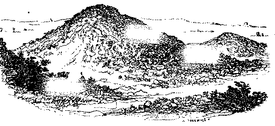
Figura 2: Vista exterior de um tumulo
Os defuntos eram depositados com os seus corpos inteiros e em geral apresentavam-os sentados e encostados nas paredes do recinto central, tendo junto de si os machados e outras armas de pederneira; algumas vezes vasos de barro toscamente fabricados, e outros objectos de uso commum.
Veja-se o desenho n.º 2, de um tumulo completo; o n.º 3, um tumulo aberto com dolmen; o n.º 4, um dolmen completamente desguarnecido; e o n.º 5, a perfeita Anta de Guitamães, em Vianna do Castello.
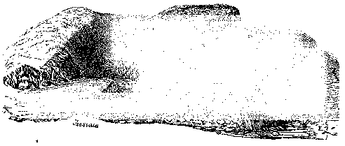
Figura 3: Vista interior de um tumulo
Varios antiquarios tinham tomado os dolmens desguarnecidos de tumulos por altares druidicos, porém ao presente esta ideia está quasi desprezada, por falta de provas positivas.
O cobre com liga que lhe dá maior rijeza, foi empregado depois da pederneira, ou conjunctamente com ella, quando os nossos antepassados aperfeiçoaram esta industria e conheceram o modo de derreter os metaes.
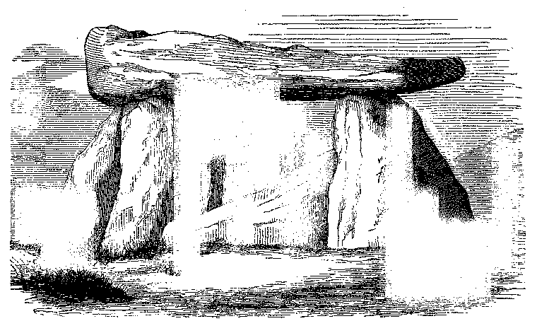
Os principaes objectos de bronze, foram os machados, aspontas das lanças, as espadas, os punhaes, as facas, os anzoes, as fouces, os alfinetes, os anneis, os braceletes; estes objectos fundidos, muitas vezes com formas elegantes, apresentavam em todos os paizes o mesmo feitio, tanto na Dinamarca como em França, e na Inglaterra; e isso nos convence de que os typos tradicionaes, talvez imitados do mundo antigo pelas nações civilisadas, e trazidos para a Europa occidental em época que não se pode fixar, foram reproduzidos sem alteração, em moldes apropriados.
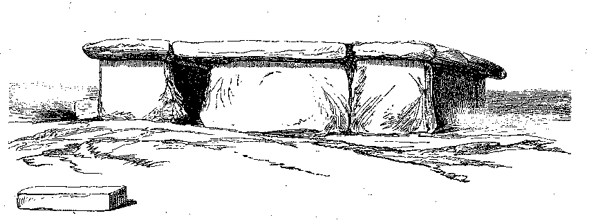
Figura 6: Fachada do Dolmen de Bournan
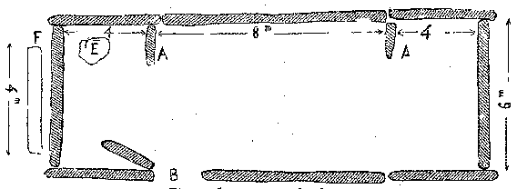
Esta época importante da historia dos progressos da humanidade rasgou bom horisonte no prolongado periodo prehistorico: d'ahi proveio a denominação de idade de bronze. O difficil era saber-se, por inducção, quando e como o bronze apparecera nos paizes septentrionaes.
Ha annos, o sr. Worsaæ e os antiquarios dinamarquezes publicaram que os tumulos da idade de pedra continham compartimentos centraes, conforme descrevemos; nos quaes se depositavam os cadaveres sentados, com os joelhos juntos á barba e os braços cruzados no peito; em quanto os tumulos da idade de bronze não apresentavam esse compartimento reservado, sendo construidos com grandes pedras e os outeirinhos, compostos de terra e de pequenas pedras, não encerravam cadaveres, mas tamsomente as cinzas dos finados, depositadas em vasos de barro; muitas vezes appareciam acompanhados de objectos de bronze e ás vezes de ouro. Inferia-se d'estas differenças, que os instrumentos de bronze haviam sido trazidos por uma raça que invadira, absorvera e talvez aniquillara a indigena; raça que teria costumes diversos, armas superiores e civilisação mais adiantada que a subjugada.
Acceitando-se este facto, a idade de bronze seria inaugurada na Europa occidental por um povo conquistador em época desconhecida.
Os objectos de barro não nos guiam suficientemente n'esta exploração. Os que foram achados com os instrumentos de bronze são de fabrico grosseiro, mal cosidos, e por seu feitio, ornatos e as substancias que os compõem, simelham-se muito com os vasos de barro achados nos sepulchros que encerravam unicamente objectos de pedra. N'esses diversos tumulos raramente se viam vasos com azas; á forma dos gargalos parecia não ser conhecida, nem o seu uso; consistindo apenas a ornamentação em linhas em direcções diversas; ou ponteado concavo, ou emmoldurado em xadrez.
Além d'isso, a pederneira era ainda de uso geral na idade de bronze, e muitas vezes se tem encontrado objectos de pedra e instrumentos de bronze nos mesmos tumulos; facto que poderia explicar-se admittindo-se que servira successivamente para sepultura em differentes povos.
Acharem-se cinzas no logar dos cadaveres sentados, pareceu sufficiente caracteristico da idade de bronze, pois que nos tumulos, que encerravam objectos de metal, havia poucos exemplos de se fazer enterramento na posição sentado, e essa pratica caracterisa a idade de pedra.
Tem-se, comtudo, encontrado na mesma sepultura esqueletos sentados na proporção de 20 por cento, talvez como demonstração, segundo o sr. Lubbock, dos ultimos representantes das gerações passadas que tivessem apego aos antigos usos.
Habitações lacustres
Precisamos de expôr, em primeiro logar, o que se entende por cidades lacustres.
Ha annos notava-se em muitos lagos da Suissa, abaixo do nivel natural das aguas, estacarias em grupos consideraveis; o dr. Keller, de Zurich, socio da sociedade de archeologia franceza, estudou com attenção esses vestigios, que por grandissima diminuição das aguas ficaram visiveis; e declarou depois, que os primeiros habitantes da Suissa estabeleciam por vezes as suas casas em cima da agua, como praticavam algumas tribus da antiguidade, e até como fazem ainda alguns povos modernos. Tal descobrimento causou sensação entre os antiquarios; muitos observadores se dedicaram depois com grande solicitude a explorar o fundo dos lagos, nos logares das cidades lacustres indicadas pela presença da estacaria. Estas investigações foram proficuas. Poderam-se tirar, servindo-se de dragas, grande numero de fragmentos de objectos de barro, e outros utensilios, os quaes, comparados com os que foram encontrados nos tumulos, reconheceu-se pertencerem tambem a identica civilisação.
Varias outras estancias lacustres foram depois descobertas na Suissa; contaram-se até 32 no lago de Constance; 46 no de Neufchâtel; além das que se viram nos de Genebra, de Inkwill, de Pffikon, de Luissel etc., etc. Ainda que nem todas pertençam á idade de bronze ou de pedra, e que muitas pareçam ser do tempo da idade de ferro, e do periodo romano, todavia o maior numero é das idades de pedra e de bronze.
Os museus de Lausanna, de Genebra, de Neufchâtel e outros, tem collecções completas dos objectos chamados lacustraes, por causa de terem sido conservados por séculos debaixo das aguas.
Os habitantes das cidades lacustraes achavam sem duvida recursos alimentícios na pesca, mas estabeleceram as suas habitações sobre a agua para se collocarem ao abrigo dos ataques das feras, ou dos roubos das tribus visinhas. Era facil separar inteiramente essas povoações fluviaes levantando para isso as pontes, que lhes serviam para communicarem com as margens.
Segundo o estudo das ossadas dos animaes recolhidos pela draga, e de diversos fragmentos, conheceu-se que então já havia seis especies de animaes domesticados que deviam servir para o alimento dos habitantes; e entre essas, encontraram-se restos de veados, bois, de duas formas, porcos, cães, cabras e cavallos, notando-se porém que havia poucos vestigios do cavallo e da cabra.
Cavernas
As excavações dirigidas por varios geologos em diversas localidades, deram em resultado encontrar-se nas cavernas consideravel numero de objectos devidos á industria das raças primitivas, incluindo as da época do diluvio, assim como os machados de pederneira, toscamente fabricados, e outros instrumentos de silex e osso, e em parte envolvidos com ossadas de animaes giganteos, que já hoje não se encontram.
Os objectos de silex e osso, pela maior parte, parece pertencerem á idade de pedra, e provirem das epocas mais remotas da humanidade. Mas deve notar-se que sempre apparecem misturados com esses utensilios do homem, restos de animaes, que se não encontram hoje, e que pertencem á formação do terreno quaternario, considerado até então como anterior ao apparecimento do homem.
O descobrimento de uma queixada humana no saibro do Moulin-Quignon, proximo de Abbeville, na França, veio estratigraphicamente confirmar taes conjecturas e indicações. Embora isto seja do dominio da geologia e da paleontologia, os factos novamente averiguados são de summo interesse, pois que comprehendem a idéa de indeterminada e espantosa antiguidade em que o homem vivia no estado quasi selvagem: não é difficil acreditar que assim acontecesse, quando pensarmos na situação actual dos povos de Africa central, dos naturaes da America, quando foi descoberta, e dos habitantes das ilhas da Oceania. O homem que vive isolado, sem communicação com os povos mais adiantados que elle, poderá ficar muito tempo no mesmo grau de civilisação; como aconteceu em o nosso continente antigo, em quanto os romanos levavam o luxo até o extremo, havia então em o Norte, onde já chegam hoje os caminhos de ferro, povos semi-selvagens que não tinham participado em cousa alguma dos progressos do povo rei; e comtudo deviam depois repartir entre si os seus despojos e gosar da sua civilisação.
Podemos, portanto, admittir que houve por longos annos na Europa, nas margens dos rios, uma raça de caçadores e pescadores, e que nos bosques existiam o mammouth, o rhinoceronte, animaes que podiam resistir á baixa temperatura que n'essa época era propria em nossa região. Julga-se, com fundamento, que tal raça de homens vivia como succede hoje entre alguns esquimaus, e como os laponios viveram seculos antes. Acrescentaremos que a flora fossil parece mostrar que as modificações occorridas na forma por effeito das mudanças climatericas, tiveram os seus equivalentes no mundo vegetal antigo.
Os principaes monumentos dos tempos prehistoricos são, conjuntamente com os tumulos, dos quaes já tratamos:
Os peulvans ou pedras cravadas na terra;
Os monumentos compostos com pedras similhantes, taes como os alinhamentos;
Os circulos formados de pedras, e os recintos simplesmente de terra.
As pedras oscillantes
são pedras de extraordinario peso
sobrepostas a
outras e collocadas em equilibrio, mas que ao menor impulso se fazem
mover: existem algumas em França, porém na
Inglaterra o
maior numero. No
Alemtejo, proximo de Alter do Chão, ha uma d'esta qualidade.
Pedras erguidas
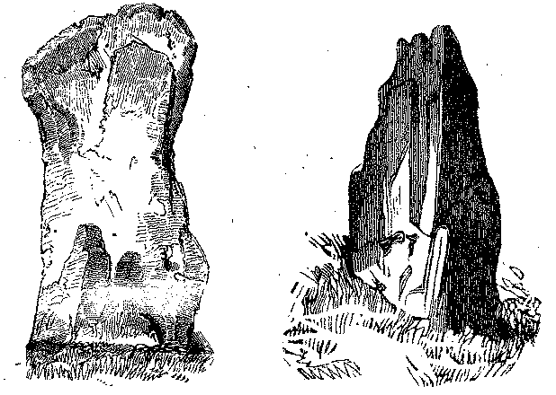
As pedras erguidas[2] que se designam egualmente com os nomes de Menhirs, Peulvans, Pedras cravadas, etc., são pedras toscas de forma esguia ou conica implantadas verticalmente na terra, como se collocam os marcos. A sua altura varia desde 2 a 6 metros, ou mais; ás vezes estão cravadas de maneira que a extremidade menos grossa fica para baixo, e a mais volumosa para cima, como se estivessem sustentadas n'um pião. Outras estão simplesmente postas no solo, em logar de serem cravadas na terra, porém, é preciso não confundir estas pedras com vários pedregulhos erraticos, ou que se encontram em posição vertical e podem estar assim naturalmente collocados.
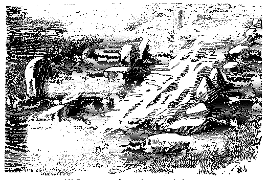
Alinhamentos.—Os alinhamentos são formados de pedras esguias. As pedras, alinhadas com mais ou menos regularidade, mais ou menos intervallos entre si, formam algumas vezes uma única fileira. Umas tambem se encontram postas em duas, tres, quatro ou maior numero, conservando-se em linhas parallelas. Estas especies de avenidas pedregosas são delineadas commummente na direcção de Leste a Oeste, ou do Norte a Sul.
Outras vezes as pedras são substituidas por trincheiras ou fossos de terra. Tem-se encontrado em algumas partes, posto que raramente, terrados parallelos na direcção de Leste a Oeste, e do Norte a Sul, que apresentam, em quanto á disposição, muita analogia com os alinhamentos de pedras e parece terem tido o mesmo destino.
Os alinhamentos de pedras mais notaveis e mais vastos que se conhecem em França, são os de Karnac, de Ardeven, e de Penmarch. Compõem-se de mais de 1:200 pedras toscas em 11 filas parallelas com 763 toezas de comprimento, e 47 de largura. As mais elevadas tem 18 a 20 pés, e as mais pequenas 4 a 5. Ha entre ellas algumas de volume tão extraordinario que lhes avaliam o pezo em 70 a 80 milheiros.
Os alinhamentos de Ardeven estão dispostos regularmente em filas parallelas, tambem na direcção do Norte para o Sul, e no espaço de 3 kilometros de extensão.
Circulos
Outra combinação de pedras erguidas toma a forma de circulos, que têem sido designados pelo nome de cromlecks.[3]
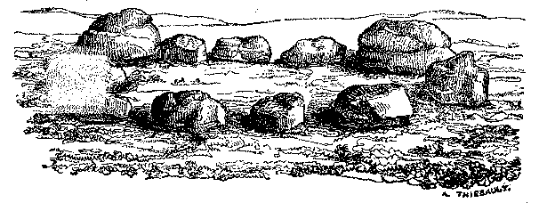
Figura 10: Circulo de pedras
Os maiores d'estes circulos existem em Inglaterra; um d'elles, o vasto circulo de Avebury, em Wiltshire, está totalmente destruido; porém ainda houve quem o visse quasi completo por 1713; compunha-se de 660 pedras, e achava-se situado no meio de uma planicie, ficando-lhe o terreno em declive de todos os lados, como pode vêr-se na gravura junta.
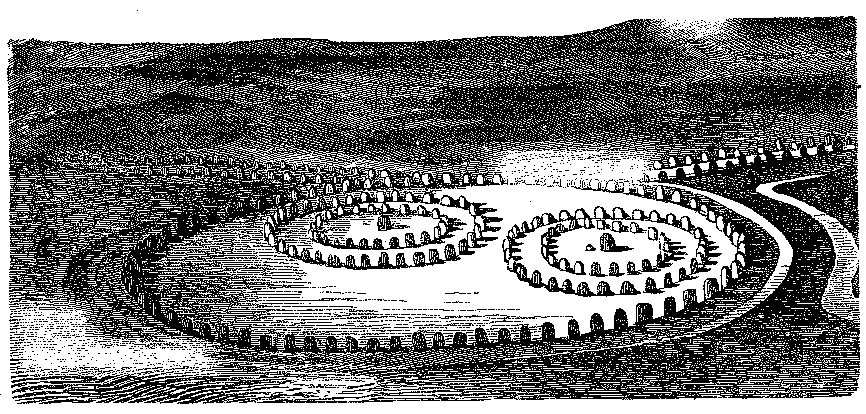
Figura 11: Restauração do monumento d'Avebury.
O circulo exterior era formado de 100 pedras de 15 a 16 pés de altura, collocadas a 27 pés umas das outras; tinha perto de 1:300 pés de diametro, e via-se cercado de profundo fôsso, contornado exteriormente por larga trincheira de terra.
Este grande circulo continha dois circulos mais pequenos, compostos cada um de dois renques concentricos de peulvans, do qual um tinha 30 pedras, apresentando um diametro de 466 pés; e o outro 12 pedras, com o diâmetro de 186 pés.
O monumento de Stone-Henge[4] está situado a 6 milhas de Salisbury, em uma eminencia, na proximidade da qual se encontram muitos tumulos; é composto de 4 circulos concentricos, dos quaes os dois maiores são circulares, em quanto os outros dois mostram a forma um tanto elliptica.
O circulo exterior tinha quasi 97 pés de diâmetro; e compunha-se primitivamente de 30 pedras erguidas com altura de 10 a 12 pés, collocadas a 1 metro de distancia umas das outras; estas 30 pedras sustentavam egual numero de impostas ou pedras collocadas horizontalmente que se ligavam nas extremidades e formavam d'este modo uma especie de balustrada tosca.
O segundo circulo ficava a 9 pés do precedente, era formado de 29 pedras esguias sem impostas, e por metade da grandeza das do circulo exterior: apenas 19 estavam erguidas haverá 38 annos.
O terceiro circulo, a 13 pés do precedente, apresentava uma illipse tendo o pequeno eixo 52 pés, e o maior quasi 55; formado por trilithos[5] de grande dimensão, o mais elevado, dos quaes tinha 22 pés de altura.
Finalmente, o circulo central tambem um pouco elliptico, compunha-se de 20 peulvans com a altura de quasi 6 pés.
Na extremidade oriental do oval, dentro do ultimo circulo, havia uma pedra medindo 16 pés de comprimento e 4 de largura, posta em plano na terra, e que se suppõe serviria de altar.
As pedras esguias que compunham estes quatro circulos eram quasi todas mais largas na base que no vertice; tinham sido cravadas em cavidades abertas em rocha de natureza graphite, e havia o cuidado de as consolidarem calcando-as com fragmentos de pederneira em volta das cavidades.
Um largo fôsso de 30 pés, collocado entre duas trincheiras, formava o quinto recinto circular á roda das pedras do circulo exterior.
A Dinamarca, a Noruega e a Suecia, conteem certo numero de cromlecks, quasi todos circulares ou ellipticos, apresentando geralmente uma pedra no centro, que se suppõe ter servido de altar.[6]
Acredita-se que estes monumentos nem sempre foram usados nas ceremonias religiosas.[7] Na infancia dos povos, os logares consagrados ao culto deviam servir tambem para tribunal de justiça, assim como para ponto de reunião dos conselhos patriarchaes ou de notaveis, que tratavam dos interesses da nação, das eleições, das inaugurações, etc.
Em o Norte, os nobres reuniam-se antigamente dentro de recintos circulares formados de pedras, para elegerem os seus principes, até a promulgação da Bulla de Ouro pelo imperador Carlos IV, em 1356. O circulo de pedras, no qual Eric foi proclamado rei da Suecia, existe ainda proximo de Upsal; uma grande pedra toma o centro, como em outros recintos d'aquelle paiz. Outrotanto se praticava na Irlanda e na Escossia.
Taes são os principaes monumentos de pedra dos tempos prehistoricos. Accrescentemos que o vulgo lhes attribue origens fabulosas, como obra de um ente colossal chamado Gargantua; que a tradicção os tem indicado como encerrando preciosos thesouros; abrigos de fadas, de almas do outro mundo, e dos espiritos que as acompanham!
Recintos formados com terra
Estes recintos consistem em um vallum de terra, ás vezes misturada de seixos, circumdando extensões mais ou menos consideraveis e cujas formas são mui variadas. Poder-se-hia attribuir essa especie de claustros á outra época do que a que corresponde aos tempos prehistoricos, se não houvesse tumulos encerrados no vallum, ou levantados proximo d'elles, o que faz suppôr que serão contemporaneos.
Architectura dos tempos prehistoricos
Pouco sabemos acerca de qual seria a architectura anterior ao dominio dos romanos. Presume-se porém que nas primitivas construcções empregariam a madeira e o barro.
As habitações eram circulares, construidas com madeiras e vimes enlaçados.
No interior faziam as divisões com terra; o telhado formavam-n'o de ripas de carvalho ligadas com massa de argila e palha cortada, conforme os vestigios encontrados na Gallia, na Bretanha, na Germania, em Hespanha e Portugal.
De investigações feitas em França e na Inglaterra, conheceu-se que muitas habitações dos celtas tinham antes a forma oval do que redonda, e algumas vezes rectangular; mostravam alicerces de pedra secca, e muitas eram construidas em nivel inferior ao solo que as circumdavam, quer fosse para se resguardarem dos rigores do clima, ou quer para não darem ás paredes altura consideravel.
Estas casas estavam em relação com a simplicidade dos costumes; deviam ter um só andar, e apresentavam uma só abertura, que servia de porta e janella.
Em todas a forma era egual, mas as dimensões divergiam. O numero e a grandeza das casas deviam corresponder á cathegoria e opulencia dos possuidores.
Os gaulezes abastados tinham sempre junto de si séquito para o qual necessitavam de grandes habitações. Escolhiam portanto o terreno para ellas nos bosques e perto dos rios, ou em eminencias, afim de servirem egualmente de fortalezas para a propria defensa.
Utensilios e instrumentos diversos
Em época, que não podemos determinar, os nossos antepassados souberam, que o estanho combinado com o cobre produzia uma liga mais rija e mais pesada que estes dois metaes separados; as analyses que o celebre mineralogista Clarke repetidas vezes fez em Inglaterra, e aquellas que se fizeram em França, demonstraram que sobre 100 partes quasi todos os bronzes antigos contem 12 de estanho e 88 de cobre; porém que esta proporção não é constante, e que a quantidade de estanho ou de chumbo combinada com o cobre, varia ás vezes desde 4 até 15 por 100.
Mr. Clarke verificou que os antigos bronzes descobertos na Grecia, no Egypto e em algumas partes da Asia,[8] continham a mesma quantidade de estanho (88 e 12): sendo esta a proporção necessaria para se obter o maximum de densidade resultante d'estes dois metaes.
Os machados de bronze, que tem sido encontrados em grandissimo numero em toda a parte e que se vêem em quasi todas as collecções,[9] apresentam entre si differenças notaveis; os typos que damos são os mais conhecidos. Estes machados teem um olhal nos lados, e existem de diversos tamanhos; as faces lateraes são de feitio de uma folha lanceolada sobre o comprido, na qual se vê o vestigio da juncção das duas peças do molde em que o instrumento foi vasado.
Em Portugal descobriu-se um muito singular, não só por suas grandes dimensões, mas por ter dois olhaes, o que o torna raro no seu genero.
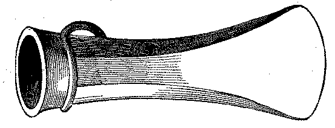
Figura 14a
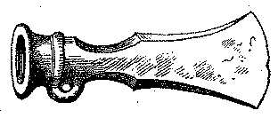
Figura 14b
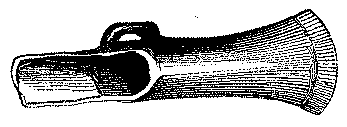
Figura 14c
Estes machados deviam encavar-se de duas maneiras: n'uns, o cabo entrava de espiga n'uma cavidade central a, b; n'outros, dar-se-lhe-hia a forma de palmeta para entrar nos dois lados do instrumento no logar preparado c; algumas vezes as bordas delgadas e salientes que formavam a parte ôcca ficavam reviradas sobre si, por modo a formar uma especie de calha d, apropriada para conservar a parte encavada.
Moldes para machados
Os machados de bronze foram sem duvida fundidos em moldes compostos de duas peças symetricas, pouco mais ou menos como os que ainda hoje são empregados na fundição das colheres de estanho.
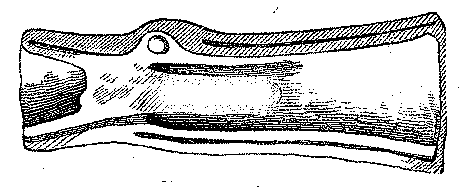
Figura 15: Molde aberto
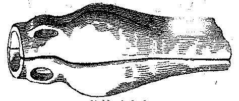
Figura 16: Molde fechado
É provavel que alguns d'estes moldes fossem de terra ou de pedra; porém o maior numero dos que se conservam nos museus são de bronze, fundidos egualmente como os machados.
O primeiro molde para machados celticos que chamou a attenção dos sabios foi descoberto na Inglaterra em 1779. Encontraram-se depois em muitas partes da França, principalmente na Normandia.
Estes moldes compôem-se de duas peças ôccas, que se podem juntar e unir sem se desconcertar, por meio de uma parte saliente chamada macho que está na virola do molde de uma das peças, e se encaixa na fenda praticada na virola da outra peça.
Espadas de bronze.—As espadas de bronze compõem-se de lamina e cabo (punho). São de folhas direitas, chatas, mas reforçadas no centro da lamina, e ás vezes ainda com bojo no espaço comprehendido nos dois terços da folha. Cortam dos dois lados e tem ponta aguda.
A largura de lamina quasi sempre é de pollegada e meia ou duas pollegadas na parte mais larga, sendo a sua maior grossura de um quarto de pollegada.
No punho ainda algumas tem os pregos de bronze que haviam servido para segurar a guarnição.
As espadas eram tambem fundidas, e o metal identico ao empregado nos machados.
Punhaes de bronze.—Estas armas parecem-se com as espadas, exceptuando a lamina que é mais curta. O comprimento de alguns é de 10 a 14 pollegadas, e a largura da folha de 2 a 2½ pollegadas na base.
Pontas de lança.—Juntamente com as armas que descrevemos, encontram-se de vez em quando pontas de lanças e objectos que foram considerados como especies de virolas ou ferragens para guarnecer a parte inferior da hastea.
Rodeias ou collares (torques).—Affirmam alguns historiadores que os gaulezes traziam collares ou torques, como tambem braceletes e argolas nos braços.
O collar era egualmente usado pelos gregos e romanos, e outros povos; talvez não haja outro ornamento de uso mais antigo, nem mais geral.
Deve-se distinguir entre os torques; em primeiro logar, os que são formados de muitas peças encadeadas e enfiadas em especie de rosarios de perolas grossas de ambar, de azeviche, de vidro colorido, etc., como se encontraram dentro de alguns tumulos; e depois as cadeias, cujos elos são de ouro ou bronze. Em segundo logar, os torques, compostos de uma unica peça de metal (ouro, bronze, etc.) arqueada de maneira a formar circulo do diametro mais ou menos consideravel, e muitas vezes com lavores. Em muitos torques as duas extremidades da peça metalica não estão soldadas, porém o metal offerece bastante flexibilidade para facilitar mettel-as nos punhos, podendo-se unir ou abrir, independentemente do fecho; outros torques não apresentam nenhuma d'estas formas.
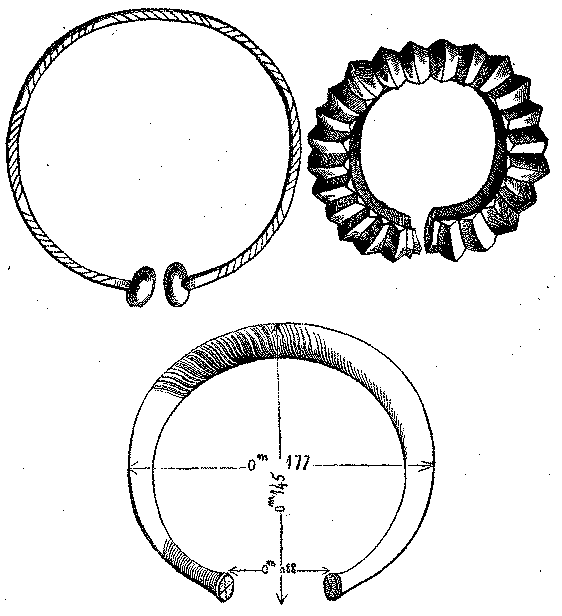
Figura 19
Appareceram tambem chapas de ouro bastante delgadas com feitio de meias-luas, porém cujas pontas estavam arqueadas de modo a formarem circulo quasi perfeito. Vêem-se, aos lados e nas extremidades de algumas d'estas peças, festões e molduras.
O pequeno intervallo que separa as duas pontas do crescente não nos faz suppôr que este enfeite servisse para se trazer em volta do collo; provavelmente ficava suspenso por uma corrente.
Alguns instrumentos achados por varias vezes nos sepulchros, ou junto dos dolmens, em França e mais frequentemente na Irlanda, consistiam em hastea de ouro arqueada tendo nas duas extremidades um disco, em alguns chato, em outros levemente concavo.
Ignora-se absolutamente para que uso seriam destinados.
Finalmente, o objecto seguinte, uma especie de gargantilha formada de uma folha de ouro mui delgada, foi achado em França em diversas localidades.
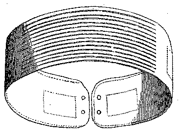
Figura 22: Collar de ouro descoberto em França
As moedas chamadas celticas são provavelmente em parte contemporaneas dos ornamentos ou enfeites que descrevemos acima.
Objectos de barro
São tanto mais difficeis de se distinguirem os objectos de barro celticos, com excepção dos que se tem encontrado nos tumulos, quanto em algumas partes estão muitas vezes misturados com outros similhantes aos do tempo dos romanos; visto que os mesmos sitios foram habitados antes e depois da conquista de Cezar na Peninsula.
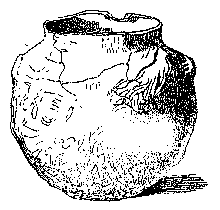
Figura 23
Os objectos de barro descobertos nos tumulos, são formados de terra preta, mal preparada e com pequenos seixos, o que produziu massa pouco solida. Os seus fragmentos são frageis, e não foram cozidos sufficientemente; a parte quebrada não mostra arestas vivas, mas sempre cheias de cavidades. As superficies d'essas peças, tanto na parte interna, como na externa, tem côr quasi egual á do ferro ferrugento; porém na parte interna é de negro carregado. Expostas á acção do lume tomam exteriormente a côr avermelhada do tijolo; em quanto no interior ficam negras, e mais frageis depois d'esta operação.
Esses vasos não parece terem sido feitos com auxilio do torno, e não apresentam nenhum moldado ou borda; foram unicamente alisados na parte exterior com um objecto qualquer, que lhes deu lustro irregularmente, de maneira que mostram na superficie altos e baixos, mais ou menos lisos, conforme vai indicado na gravura junta.
Os que foram encontrados nas cidades lacustras, mostram inteira similhança e caracter no fabrico. A massa não está solidamente ligada, por ter algumas partes de pederneira; a côr é preta ou cinzento escuro. Esta massa tem pouca consistencia; quando está secca quebra-se facilmente, e pode-se desfazer entre os dedos; se a molharmos, dar-nos-ha a apparencia de bocados de cortiça velha que estivesse por muito tempo exposta á chuva. As suas formas indicam a infancia da arte, excepto os fragmentos onde se descobre o uso do torno; os demais pertenceram a objectos que parece foram vasados em moldes e polidos á mão, ou lavrados com algum instrumento. Reconhece-se na superficie exterior de alguns fragmentos o trabalho de uma especie de plaina. Os ornamentos compôem-se de filetes imperfeitos, e em pequenos riscos junto á borda do orificio.
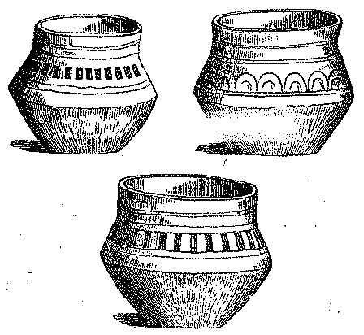
Figura 25: Outros vasos achados nos tumulos
Entre os objectos de arte que enumeramos, só vemos os instrumentos cuja materia unicamente podia resistir á acção do tempo; os moveis de madeira que teriam as habitações gaulezas não conseguiram chegar até os nossos dias. Os lagos de certo conservaram-nos muitos objectos, e até pedaços de tecidos que recentemente nos esclareceram alguns pontos relativos á industria d'esses povos, antes da occupação do territorio da Gallia pelos romanos, porém são ainda dados incompletos para se formar cabal idéa do estado da industria.
Terminamos este rapido esboço, apresentando o quadro synoptico das antiguidades que servem de assumpto ao primeiro capitulo.
| Nomes especificos | Caracteres | |||
| Túmulos | conicos | Outeirinhos
artificiaes de forma,
e de dimensões differentes, compostos
de pedra e de
terra, com dolmens
no centro. |
||
| ovaes | ||||
| Pedras | erguidas | De forma esguia. Firmadas verticalmente na terra como se fossem marcos. | ||
| assentes | De forma indeterminada. Simplesmente collocadas sobre o solo sem estarem cravadas no chão. | |||
| Trilithos | Duas pedras verticaes sustendo outra horisontalmente. | |||
| Dolmens | simples | Uma mesa de pedra collocada sobre pedras postas de cutello, em numero de 3, 4 ou 6. | ||
| compostos | Grande mesa de pedra
composta de muitos pedaços,
sendo, pelo menos, 6 o numero dos pontos de apoio. Nota. Os mais collossaes d'estes dolmens formam galeria ficando abertos n'uma das extremidades; costumam ser designados de avenidas cobertas. |
|||
| Alinhamentos | simples | Um ou dois renques de pedras em linha recta. | ||
| compostos | Quatro, cinco e algumas vezes até onze ou doze renques de pedras formando avenidas parallelas. | |||
| Pedras postas em grupo | Accumulação de pedras, sem ordem, mais ou menos consideravel. | |||
| Circulos formados com pedras | simples | Composto d'um só renque de pedras cravadas ou assentes. | ||
| compostos | Formados de muitos renques de pedras. | |||
| Recintos cercados de terra, ou de pedras | De diversas formas. | |||
| Logares de Habitações | Vestigios de casas | Logar de cabanas redondas, ovaes, algumas vezes rectangulares, indicadas por alicerces de pedra tosca sem argamassa ou tão sómente pelo abaixamento do solo. | ||
| Subterraneas | Galerias e casas
cortadas na rocha. Excavações diversas. |
|||
| Instrumentos Diversos | Em pedra | Punhaes e facas | Um pedaço de
silex cortado de maneira a
apresentar uma folha aguda, com dois gumes, e armado d'um cabo. Folha de silex sem cabo. |
|
| Pontas | para frechas | Pequenos dardos, dos quaes o comprimento varia desde meia pollegada até duas | ||
| para rojões | Dardos quasi similhantes aos precedentes, porem mais sobre o comprido. | |||
| Martellos | Peça quer redonda dos dois lados, quer d'um lado sómente. | |||
| Pedras para fundas | Redondas ou ovoides, de 2 a 3 polegadas de diametro. | |||
| Machados | Convexos para o centro, cortados em aresta viva nos bordos, acabando de um lado em ponta romba, e de outro em gume, o qual descreve uma porção de ellipse. | |||
| Em bronze | Machados | De formas diversas similhando-se mais ou menos a uma cunha. | ||
| Fôrmas para machados | São duas peças symetricas, que depois de reunidas a parte ôcca mostra o feitio do machado. | |||
| Espadas | Folhas direitas, chatas, de dois gumes, acabando em ponta. | |||
| Punhaes | Quasi similhante ás espadas na forma, porém com menor comprimento. | |||
| Cabeças de rojões | De forma lanceolada tendo um engrossamento no meio. | |||
| Torques | compostas de peças | Correntes metallicas.—Perolas de pedra de côr-alambre, formando rosario. | ||
| de uma só peça | Argolas metallicas mais ou menos grossas muitas vezes com lavrados.—Chapas do feitio de meia lua. | |||
| Ornamentos diversos | Em bronze e em ouro, com lavrados. | |||
| Louça de barro | Muito fragil, mal cozida, composta de terra preta mal preparada e cheia de pequeninos seixos. | |||
| Moedas | Em ouro, em prata e em bronze. | |||
Era gallo-romana
Entreapparece-nos um dos mais amplos horisontes da historia dos povos occidentaes na conquista do imperador romano Cesar. Nos Commentarios d'este grande general temos perfeita idéa do estado da Gallia na época da conquista; conhecem-se tanto os grandes factos que consumou, quanto se inferem as consequencias que d'elles advieram á civilisação.
Cesar encontrou a Gallia dividida em tres nações principaes: os Belgas, os Celtas e os Aquitanios.
O imperador Augusto, que pretendeu organisar o governo regular nos paizes conquistados, formou tres novas provincias d'essas tres regiões.
Segundo esta divisão, foram desannexados e encorporados na Aquitania 14 povos da Celtica; além de dois que passaram do Norte para a Belgica. Assim ficou modificado o territorio dos primitivos povos d'esta parte da Europa.
Vias de communicação
Começaremos a nossa revista dos monumentos da grande época romana, descrevendo as vias publicas ou as grandes estradas; tanto mais que foram as primeiras obras que o povo rei executou e de que nos deixou vestigios.
As cidades e as estancias eram accessiveis por meio de estradas solidas, ou calçadas. Nos intervallos que separavam estes estabelecimentos uns dos outros, é que principalmente se encontravam vestigios das vias romanas. Seguiam em geral linhas rectas, excepto quando obstaculos naturaes, como as montanhas, os barrancos profundos, as lagôas, se oppunham a isso, e prolongavam-se tanto quanto possivel nas planicies, afim de evitar os terrenos pantanosos.
Além das estradas principaes, que communicavam uma cidade com outra, havia os caminhos vicinaes, viae vicinales, que conduziam ás aldeias, e estabeleciam relações entre estas e as cidades. Não eram alinhados como as primeiras, nem feitos com egual esmero.
Nas estradas mais bem executadas, a primeira camada, ou a mais funda, compunha-se de pedras collocadas em raso, ás vezes assentes com argamassa, mas em geral postas simplesmente umas sobre as outras: era o que chamavam statumen. Em algumas vias, as pedras do statumen eram postas de cutello e com inclinação, como explicaremos quando fallarmos das paredes construidas em espinha de peixe.
A largura ordinaria das vias romanas era de 15 a 20 pés. As bordas das partes alteadas não se conservam em muitas localidades; arruinaram-se por modo que não apresentam hoje sufficiente largura para um carro poder passar; e em certos pontos aproximam-se mais de um fôsso, que de uma estrada.
Os caminhos romanos atravessavam os rios sobre pontes, e vaus calçados. Em grande numero de localidades, encontram-se os alicerces das pontes, ou dos vaus, debaixo da agua, seguindo a directriz das antigas vias. Em certos casos o trilho era estabelecido sobre travessas de madeira.
Columnas itinerarias.—Os caminhos romanos eram divididos por marcos situados em espaços regulares, e com inscripções que indicavam o numero de leguas ou de milhas, comprehendido entre as diversas povoações.
As capitaes serviam de ponto central para marcar as distancias em todo o territorio.
Os marcos milliares tinham 5 a 6 pés de altura; eram de fórma cylindrica; chamavam-se milliares, milliaria, ou simplesmente lapidas.
D'aqui provem as phrases tão frequentes nos auctores antigos, ad primum, secundum, tertium lapidem, a primeira, a segunda e a terceira pedra, ou só ad primum, secundum, tertium, etc. ficando subentendido lapidem ou milliarium.
A segunda camada, chamada ruderatio, era formada de pedras britadas de dimensão menor que as anteriores.
A terceira camada, nucleus, compunha-se, ora de cal misturada com fragmentos de telha pisados, ora de areia misturada com argila.
Seixos inteiros, apertados uns contra os outros, ou postos simplesmente em leito de areia grossa, glarea, formavam a quarta e ultima camada, chamada summa crusta.
Era excepcionalmente nas cidades, aldeias ou nos paizes pantanosos, que formavam a summa crusta com calçada de pedras cubicas ou polygonaes irregulares.
Em geral, serviam-se para estes trabalhos dos materiaes que encontravam na localidade, ou a pequena distancia; sómente os mandavam buscar mais longe quando eram de má qualidade no terreno das obras.
Em muitas partes, as vias antigas foram alteadas do solo, e um agger servia de base á calçada. Estes caminhos alteados conservam ainda o seu nivel superior em espaços muito extensos, e são faceis de reconhecer.
As estradas antigas eram tambem cavadas, como se as preparassem para o leito de um rio. As excavações em algumas partes podiam ser consequencia do uso prolongado de viandantes e vechiculos; porém, em outras, foi visivelmente praticado com o fim de tornar mais suaves as subidas muito ingremes.
O uso das columnas milliares data do anno 183 antes da era christã. Foi determinado em lei proposta por C.S. Graccho, e depois ampliada ás provincias do imperio.
As inscripções collocadas n'estas columnas foram primitivamente laconicas; indicavam apenas o numero de milhas comprehendidas de uma a outra localidade. Augusto foi o primeiro que mandou gravar os seus nomes e qualificações nos marcos levantados por sua ordem, e os successores seguiram-lhe o exemplo.
Pyramides.—As vias romanas não eram sómente guarnecidas pelas columnas itinerarias; aos seus lados viam-se tambem torres massiças, ou pyramides, ora circulares, ora quadradas.[10]
Consideravam-se essas pyramides como tumulos; mas a maior parte parecia terem sido levantadas para ornar os caminhos, ou antes dedicadas a Mercurio, como deus protector das estradas, das artes, e do commercio. Em algumas d'ellas abriam especies de nichos que deviam receber a estatua de Deus.
Formavam-se taes construcções de bases quadradas de alvenaria, que sustentavam uma serie de grandes pedras de cantaria; o remate apresentava a configuração conica, tendo a superficie coberta de entalhos sobrepostos, representando folhas de arvores em camadas. A torre de Pirelonge, em França, de 74 pés de altura, é um especimen d'este genero.
Mansão.—Encontravam-se nas estradas mansões, ou pousadas, mais especialmente destinadas para o serviço dos correios, e para os que viajavam com auctorisação do imperador. Eram administradas por uns funccionarios chamados mancipes, cathegoria pouco mais ou menos egual á dos nossos directores do correio. Os logares das mudas de menor importancia e situadas com pequenos intervallos, chamavam-se mutações. Denominavam-se emfim diversoria as casas construidas ao longo das estradas, quer pertencessem a proprietarios que hospedavam ahi os seus amigos, quer recebessem viajantes como os nossos hospedeiros.
As principaes estradas romanas tinham a classificação de publicas ou militares, consulares ou pretorianas, e os caminhos menos frequentados designavam-se com os nomes de particulares, agrarios ou vicinaes.
Architectura
Os romanos imitavam na sua architectura os Etruscos e os Gregos, porém foram menos cuidadosos na pureza das formas, do que no aspecto grandioso; e preferiram á formosura monumental o effeito da apparencia e da utilidade; portanto, procuravam sempre adpotar um systema que lhes desse logar a utilisar nas obras publicas o trabalho dos soldados, e dos escravos, dirigidos sómente por limitado numero de architectos ou engenheiros. Comprehendiam que era poderoso meio de dominação dotar o paiz vencido com os monumentos que não possuissem, introduzir em toda a parte a civilisação, transmittindo aos subordinados as vantagens, as instituições e os estabelecimentos uteis, dos quaes estavam até então privados.
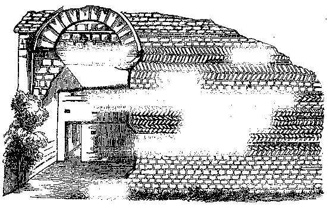
Figura 28: Pequeno aparelho, e de espinha como está construido o monumento romano de Theséo
Em logar, pois, de empregar, como os Gregos, materiaes de extraordinaria dimensão, e por consequencia difficies de se ajustarem, preferiam, salvo em casos excepcionaes, pôr em obra materiaes de pequena dimensão, alvenaria, tijolos reunidos entre si por abundante argamassa.
Um grande facto architectonico, como foi a adopção da abobada cylindrica composta de peças em forma de cunhas, fez com que pudessem afastar-se do systema da edificação grega, no qual dominavam as architraves e os apoios verticaes. Com a abobada e as arcadas de volta perfeita, de que os romanos tiravam tão vantajoso resultado, effectuaram-se notaveis construcções, que não se deveram nunca ao genio dos gregos.
Pequeno apparelho.—As paredes de pequeno apparelho, o modo de construir mais habitualmente empregado, tem as faces formadas de pedras symetricas, quasi quadradas, e cuja face não tem mais de 3 a 4 pollegadas e raras vezes de 5 a 6. O centro da parede mostra um massiço de alvenaria irregular feito com pedra miuda imbebido de cimento.
Notam-se em varias construcções, de pequeno apparelho, zonas horisontaes e continuas de grandes tijolos, destinados a sustentar o nivel das pedras pequenas do refôrço da alvenaria. Estas zonas compôem-se geralmente de dois ou tres, e tambem de cinco, seis ou sete fileiras de tijolos separados por camadas de cimento, cuja espessura é quasi egual á dos tijolos.
Os romanos dispozeram tambem as pedras com o feitio de folhas de fetos, ou em espinhas, como se vê na gravura da pagina anterior.
A argamassa era sempre applicada com grande espessura entre as pedras e nenhuma das quaes estava em contacto immediato, mas de certo modo imbebidas no cimento.
As dimensões dos tijolos variavam muito para poder indicar-se absolutamente a mais usual; comtudo era entre 14 a 15 pollegadas de comprimento por 8 a 10 de largura; mas havia maiores, e até alguns mui pequenos.
Apparelho
reticular.—Os architectos
romanos empregavam
egualmente a
obra articulada,
ou alvenaria em forma de malhas, differente do
pequeno apparelho ordinario, por que as pedras do revestimento eram
cortadas com esmero, de tamanhos eguaes, e collocadas de modo que as
juntas apresentavam linhas diagonaes, simelhando uma rede. Este genero
de reforço de alvenaria empregavam-no geralmente como
ornamento,
pois
não se encontra applicado exclusivamente, mas quasi sempre
combinado e
intercalado com o pequeno apparelho.
As paredes do grande apparelho encontram-se nos mais importantes e grandiosos edificios, como os templos, os arcos de triumpho, os theatros, etc.
Argamassa e cimento.—As argamassas dos romanos compunham-se de cal viva e de areia, e frequentemente de tijolo pizado, em proporções variaveis, e que seria difficil determinar. A presença do tijolo pisado distingue-se de quasi todas as que depois foram empregadas. Todavia encontram-se tambem argamassas romanas que não contem nenhuma parcella de tijolo, assim como não apresenta nenhum caracter particular.
Ordens.—chama-se Ordem a combinação de diversas partes salientes dispostas, com proporções fixas, para compôr um conjuncto regular e harmonico de ornamentação das fachadas dos edificios importantes.
Divide-se uma ordem de architectura em tres partes, ou membros, que são pedestal—columna—e um entablamento. Cada membro divide-se em tres partes d'este modo:
| Primeiro membro ou pedestal | Base Soco Cornija |
| Segundo membro ou columna | Base Fuste Capitel |
| Terceiro membro ou entablamento | Architrave Friso Cornija |
Os romanos empregavam cinco ordens:
A Toscana.
A Dorica.
A Jonica.
A Corinthia.
A Composita.
A Dorica, a Jonica e a Corinthia, eram de origem grega.
A Toscana e a Composita nasceram na Italia.
É por isso que se designam algumas vezes as tres primeiras sob a denominação ordens gregas, e as duas outras sob a de ordem latina.
Nas ordens Toscana, Dorica, Jonica e Corinthia, a columna tem proporções differentes; as da Corinthia e Composita são eguaes.
Eis o quadro d'estas proporções conforme o architecto Vignola, que é o auctor mais seguido pela simplicidade das subdivisões:
| A altura da columna vem a ser para a ordem: | Toscana, de 7
vezes. Dorica, de 8 idem. Jonica, de 9 idem. Corinthia, de 10 idem. Composita, de 10 idem. |
Do diametro inferior, isto é a grossura tomada no fuste junto da base. |
Portanto, as quatro primeiras ordens differem nas proporções; a da quinta ordem são eguaes ás da quarta. Os pedestaes e os entablamentos differem tambem nas quatro primeiras ordens.
Em geral, o pedestal tem o terço da altura da columna, e o entablamento a quarta parte, conforme o auctor citado.
O modulo é medida
convencional que serve de escala para
desenhar as
ordens; é sempre a metade do diametro inferior do fuste da
columna, o
qual se divide em 12 partes para as tres primeiras ordens, e em 18
partes para as duas ultimas.
| Toscana | A menos elevada e a mais
simples das cinco Toscana ordens. Cornija sem modilhões, nem denticulos. |
| Dorica | Modilhões,
denticulos ou mutulos na cornija, triglyphos
no friso, gottas na architrave. Capitel da mesma forma que o da Toscana, porém um pouco mais ornado, caneluras ou estrias no fuste. |
| Jonica | Capitel com volutas,
cornija
ornada de Jonica denticulos. Architrave dividida em três platebandas ou faixas. |
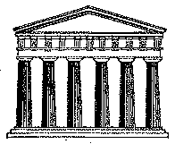
Figura 30: Fachada d'um templo Dorico
| 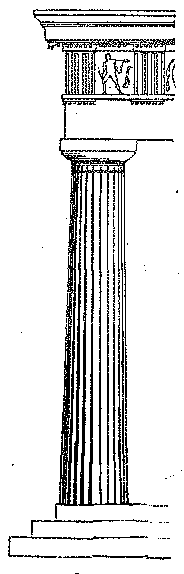 | |
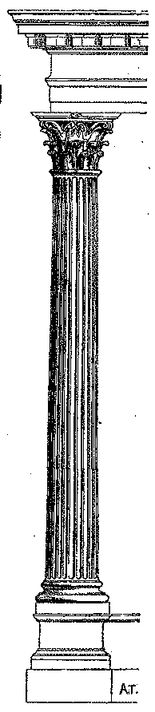 |
| Figura 31: Dorico | Figura 32: Jonico | Figura 33: Corinthio |
| Corinthia | Capitel ornado de dois renques de folhas de acantho e dezeseis volutas.—Dois renques de denticulos e um de modilhões na cornija.—Architrave dividida em tres platebandas ou faixas por baguetas ornadas de molduras. |
| Composita | Capitel imitando o das Ordens Corinthia e Jonica.—Cornija com denticulos.—Duas platebandas ou faixas na architrave. |
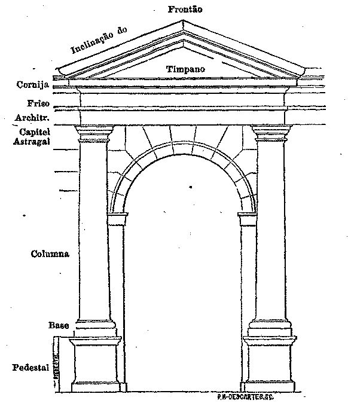
Figura 34: Portico da Ordem Toscana
As columnas não são sempre applicadas para decoração dos edificios; substituem-se ás vezes por pilastras, que, sem ter o aspecto gracioso das columnas, produzem não obstante um effeito agradavel á vista. As pilastras tem em geral pouca saliencia, não excedendo a mais da metade da largura; e não se lhes diminue o diametro da parte superior do fuste, como acontece ás columnas.
Eis a disposição de um portico da ordem Toscana: quando se collocam muitas ordens de columnas ou pilastras em um edificio, é preciso que as Ordens mais delicadas fiquem sobrepostas ás mais solidas: portanto, não se collocam nunca as columnas Toscanas sobre as columnas Jonicas, e se o architecto empregar a Jonica, ou a Corinthia, seguirá a regra de sobrepôr a segunda á primeira.
Não julguemos que a architectura antiga está representada pelas cinco ordens classificadas e regularisadas pelos insignes architectos italianos do Renascimento das artes. Ficaremos muito surprehendidos quando, examinando os restos da architectura romana existentes nas antigas cidades, particularmente na Italia, e n'este paiz em especial Roma, virmos que não differem, quasi em parte alguma, na rigorosa similhança, as cinco celebres Ordens desenhadas e medidas por Vignola, Palladio, Serlio, Scamozzi e outros architectos illustres. Pelo contrario, os typos principaes da architectura antiga apresentam infinita variedade, que augmenta nos edificios cuja data se aproxima dos ultimos tempos do imperio, a tal ponto que vem a ser realmente mui difficil determinar a Ordem a que pertencem taes ou taes entablamentos, capiteis, bases, columnas, etc.
Os capiteis, principalmente, apresentam diversidade de formas e ornamentações, que será baldada a classificação rigorosa; mostram todavia na composição riqueza e delicadeza de cinzel, sobejamente notaveis; observando-se pelo conhecimento dos effeitos pittorescos, produzidos no claro-escuro, o esmero do trabalho. As partes em relevo são conservadas com acerto e habilmente executadas.
Os architectos modernos, creando typos unicos sob a denominação de cada uma das Ordens; desejando subordinar tudo a esses typos, privaram-se de produzir combinações graciosas, em quanto os artistas do estylo romano, engenhosos e fecundos, tiravam partido da liberdade de composição, enriquecendo a architectura em que reproduziam as formas, não punham peias á imaginação, e evitavam executar obras monotonas, pobres e sem attractivos, como succede em muitas presentemente levantadas.
Os edificios publicos e muitas casas particulares eram durante a dominação romana, revestidas de marmore, ou de cimento e cal; e algumas tinham mosaicos, e aqueciam-n'as por meio dos hypocaustos.
Os mosaicos[11] antigos, dos quaes se tem encontrado repetidamente fragmentos em localidades hoje inhabitaveis, compõem-se de pequeninas peças cubicas imbebidas em especie de massa e assentes em cimento misturado com tijolo moido.
Estas pequenas peças de diversas cores eram combinadas de maneira que formavam differentes desenhos. Alguns mosaicos representavam combates de animaes e outras scenas.
A mais importante descoberta feita em Portugal foi a que fizemos perto de Leiria, em 1874, de um mosaico de cinco côres e com difficeis combinações de linhas geometricas, pertencente a uma villa rustica romana.
Hypocaustos.—Os hypocaustos, estabelecidos no pavimento terreo das habitações romanas, eram empregados como os caloriferos modernos.
Para formarmos idéa exacta do hypocausto, é preciso figurarmos um sobrado levantado quasi a 2 pés acima do solo, e sustentado sobre pequenos pilares A de egual altura, distantes uns dos outros 1 pé, por meio dos quaes o calor circulava e aquecia por egual o piso que cobria esta especie de subterraneo. Os pilares dos hypocaustos eram geralmente quadrados, compostos de tijolos de 7, e 8 ou 10 pollegadas de comprimento, uns sobre os outros, com o intervallo de uma camada de argamassa.
Os pilares do hypocausto recebiam grandes tijolos de 18 a 20 pollegadas em quadrado B, formando a base do pavimento das habitações.
Em muitas localidades, os tijolos eram sobrepostos de modo que apresentavam o cimo menos largo que a base.
O calorico não ficava concentrado no subterraneo onde estava o hypocausto: circulava nos pontos mais elevados, e entrava egualmente em todas as partes da atmosphera das salas, passando dor tubos quadrados de barro cozido 4 e 5, introduzidos na grossura da parede, 3 e 3, gravura de pag. 46 [fig. 37], um dos quaes, em posição vertical, penetrava no hypocausto, emquanto outros, collocados horisontalmente, circumdavam os aposentos.
O lume que aquecia o hypocausto era acêso n'um forno posto em pequenos pateos ou vestibulos proximos do hypocausto.
Embutidos e ornamentos.—O marmore foi frequentemente empregado para a decoração das paredes.
Em geral, os architectos romanos souberam tirar grande partido dos materiaes que fornecia o paiz em que se faziam as obras.
Não era raro vêr entrar em combinação os materiaes indigenas com os exoticos mais preciosos, taes como o porphyro, os marmores cipolino, os ophitos, etc., etc.
O uso de pintar as paredes era tão geral que as simples construcções em taipa e os tectos revestidos de barro tambem recebiam essa ornamentação. A pintura era applicada sobre delgado guarnecimento de cal.
Os methodos usados pelos romanos para a pintura das paredes são-nos imperfeitamente conhecidos. Comtudo, um d'elles consistia em applicar com a broxa cera colorida e derretida, estendendo-se ainda quente nas paredes.
A cêra não era empregada só, mas misturavam-n'a com azeite para a tornar mais liquida: todavia, a maior parte d'essas pinturas parece ter sido assente a frio, e a sua adherencia seria produzida, talvez, por uma especie de colla que lhe ajuntavam.
As paredes e os tectos eram tambem em algumas habitações revestidos de mosaicos de vidro preto, azul, branco, verde escuro, etc., decorações que se encontravam em muitas salas de banhos.
Plinio diz-nos que empregavam o vidro nos mosaicos das abobadas e das paredes, advertindo que este uso era recente, comparativamente com o dos mosaicos de pedra ou barro cozido. Achâmos na villa rustica romana, descoberta por nós em Leiria, duas casas com mosaicos d'este ultimo modo, e outra de argila cozida.
Telhas e telhados.—Os telhados das casas romanas eram formados de telhas chatas de grande dimensão, mais compridas que largas com um resalto sobre os dois lados: assim como havia telhas curvas similhantes ás dos telhados modernos.[12] As primeiras adaptavam-se umas ás outras pelas extremidades que não tinham resalto; as segundas ligavam-se entre si no sentido da inclinação do telhado, ficando em fiadas parallelas as telhas chatas e para cobrir as juntas e evitar a infiltração das aguas da chuva.
Os fragmentos das telhas com resalto tem resistido quatorze seculos á acção destruidora dos elementos, e das pancadas do arado; encontram-se espalhados e enterrados em grande quantidade em quasi todos os logares onde existiram construcções romanas.
Em fim, estes restos são o melhor indicio para o reconhecimento das regiões antigamente occupadas pelos romanos.
Pontes
As pontes, obra de tamanha utilidade, tornam-se mui notaveis pelas suas ousadas dimensões. Existem presentemente poucos vestigios d'ellas: o maior numero ficou destruido, pela força das correntes, ou reconstruido em diversas épocas e alterado na primitiva construcção. Podemos apenas citar poucas das compostas na época romana.
Nas pontes, como em outros monumentos gallo-romanos e luso-romanos, empregou-se o grande apparelho, e muitas vezes de alvenaria com argamassa (empleton) revestido de pequenas pedras symetricas (opus incertum).
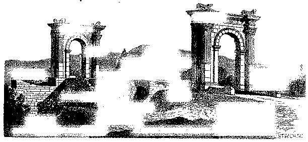
Figura 38: A ponte de S.
Chamas, e as suas duas portas monumentaes
Quando usavam os materiaes de grande dimensão, as pedras ficavam prezas umas ás outras com os cancros de ferro ou de bronze, e algumas vezes com malhetes de madeira de oliveira, previamente secca no forno.
Nas pontes construidas com pequeno apparelho a boa qualidade da argamassa dava-lhes tal solidez, que os pegões que sustentavam os arcos não soffreram depois nenhuma alteração.
Os pegões apresentavam algumas vezes, do lado da corrente, uma parte saliente triangular, para cortar assim a força da agua; e se o rio tinha demasiada extensão, acontecia então dividil-o em muitos braços, afim de construir a ponte em secções. D'este modo corrigia-se a rapidez dos rios pela divisão das aguas, e tornava-se menos difficil a construcção das pontes. Na idade media foram imitadas.
As pontes construidas com mais esmero e regularidade eram ás vezes verdadeiros monumentos, que serviam tambem para aformoseamento. Algumas tinham portas monumentaes ou arcos de triumpho.
Pontes de madeira.—Tratámos das pontes de pedra, porque só estas poderiam subsistir até os nossos dias; mas, durante o dominio dos romanos, tinham elles egualmente grande numero de pontes construidas de madeira.
Passava-se tambem os rios servindo-se de barcos de passagem, com jangadas sustentadas em odres ou tonneis vazios, como é usado ainda hoje em casos urgentes. Havia tambem pontes firmadas em barcos, como se vê figurado na columna de Trajano em Roma.
Muralhas e caes.—Os caes ou as grandes muralhas de supporte, construidas nas margens dos rios, vinham ligar-se ás pontes, quando estas existiam nas cidades.
Aqueductos
Os aqueductos, pela sua consideravel extensão e a importancia das ruinas que se conhecem em differentes pontos, offerecem interesse especial.
Os romanos, como todas as nações civilisadas, gastavam grande quantidade de agua para os usos domesticos; sendo muito escrupulosos na boa qualidade da agua, embora a fossem buscar a grandes distancias para os centros da povoação, empregando para esse fim canaes ou aqueductos.
Os aqueductos antigos que ainda existem, como os que possue a Italia, e os vêmos em outras partes, apresentam os canos de alvenaria feitos com mais ou menos solidez, e mais ou menos cuidadosamente betumados. Serviam-se geralmente das pedras de pequenas dimensões, embebidas na argamassa. Os canos, sendo proporcionados ao volume de agua que deviam levar, eram formados com abobada em volta perfeita, se ás vezes cobertos com grandes lageas assentes e sobrepostas sem cimento.
Para se obter o nivel das encostas que se encontravam na juncção dos encanamentos, faziam-n'os passar então sobre arcos mais ou menos elevados, que reuniam os dois lados do valle; outras vezes sobrepunham-se dois ou tres renques de arcos, com receio de que a demasiada altura dos pilares lhes diminuisse a solidez.
Quando o valle era muito profundo, para por este meio poder firmar-se o encanamento do aqueducto em nivel conveniente, conduziam a agua em tubos de chumbo que subiam até o cume da collina opposta, onde a agua pudesse seguir a sua corrente natural, conforme Vitruvio descreve mui claramente no seu 8.º livro de architectura.
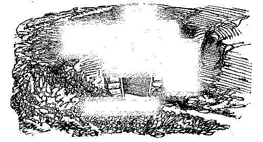
Figura 40: Canal subterraneo do aqueducto

Figura 41: Canal de aqueducto sustentado sobre arcadas
Para evitar trabalhos sempre difficies e dispendiosos, faziam seguir aos encanamentos subterrâneos, rodeios, ou sinuosidades, e por esta maneira as aguas podiam transpôr grandes espaços sem encontrarem encostas, e sem ficarem impedidas pelos obstáculos das montanhas.
Os aqueductos eram todavia mais communs soterrados, e só apparentes nos valles, onde necessariamente os canos passavam sobre paredões ou arcarias.
Os encanamentos que distribuiam as aguas nas fontes para os banhos e para outros estabelecimentos publicos e particulares das cidades gallo-romanas, eram feitos de chumbo ou barro. Saiam de um reservatório commum, ou castello de agua, castellum, como se vê um em Évora, do tempo de Sertorio.
A primeira gravura da pag. 51 [fig. 40], mostra o encanamento do aqueducto de Fréjo, um dos mais extensos que subsistem, tal qual se apresenta á vista quando se mantém subterraneo, ou collocado nas encostas das collinas, fig. 41. Este exemplo explica todo o systema empregado pelos engenheiros romanos.
Os aqueductos seguem a construcção egual das obras de arte executadas nos caminhos de ferro, transpôem como ellas os valles sobre viaductos, e atravessam as montanhas por meio de vallas ou tUneis.
Pontes e aqueductos serviam para transpôr os valles, e alguns tinham 90 arcos. A ponte do Gard, em França, era formada de três renques de arcadas sobrepostas, servia para o transito e o ultimo conduzia a agua á cidade, correndo na extensão de 41:000 metros. Indica a gravura da pagina anterior a sua construcção.
O numero dos aqueductos era extraordinario; não só se encontravam nas proximidades das grandes povoações, mas tambem das pequenas, e até junto das casas de campo de limitada apparencia.
Cloacas
As cloacas constituiam outra especie de aqueductos subterraneos para receber as aguas inuteis, ou para as aguas da chuva e immundicies.
Em Roma, estendiam-n'as por toda a cidade, e subdividiam-n'as em muitos ramaes que vinham desaguar no Tibre. O principal cano de despejo, com o qual os outros communicavam era chamado cloaca maxima. Tinha abobadas elevadas construidas com grande solidez, por debaixo das quaes se passava em barcos[13].
Praças publicas
O forum era geralmente uma praça onde se reuniam as assembléas do povo, onde se administrava a justiça e onde se tratavam os negocios publicos. Estava em certas partes rodeado de porticos, edificios e lojas.
Nas cidades de importancia secundaria, onde os porticos não eram repetidos como em Roma, achavam-se principalmente perto dos monumentos publicos, taes como os theatros, as thermas, os palacios, os templos, etc. etc.; collocavam muitas vezes os porticos do forum, por detraz da scena dos theatros, afim de que, conforme diz Vitruvio, quando inopinadamente chovesse durante o espectaculo, o povo pudesse abrigar-se ali.
A forma das praças, ou fora, era a do quadrilongo. Vitruvio affirma que devia ter um terço em comprimento, a mais de um lado que de outro.
Basilicas
A palavra basilica, significa casa real: designava em Roma um edificio sumptuoso dentro do qual os magistrados faziam justiça, por isso a distinguiam do forum, onde as sessões eram celebradas ao ar livre. As basilicas tinham tambem a fórma de um quadrilongo.
Parte dos porticos, interiormente decorados, ficava occupada pelos commerciantes: portanto, estes edificios eram ao mesmo tempo destinados aos negocios forenses, e uma especie de praça de commercio.
Em quanto á disposição das basilicas as primitivas egrejas christãs transmittiram-nos a imitação, e conservaram o nome. As basilicas consistiam pois em vasto recinto, tres vezes mais comprido que largo, dividido em renques de columnas formando muitas naves. Não ha a certeza de que as basilicas fossem rodeadas de paredes por todos os lados; julga-se que algumas eram abertas, pelo menos de um lado, para dar mais facil accesso ao povo, e para que as galerias communicassem melhor com a praça publica.
Não se pode duvidar de que não tivessem existido basilicas nas cidades gallo-romanas; porém seria difficil indicar o sitio que occupariam, porque desappareceram completamente os vestigios.
Arcos de triumpho e portas monumentaes
Os arcos de triumpho, porticos levantados á entrada das cidades, no logar da passagem publica, perto dos forums, diante dos templos, e na cabeça das pontes, etc. etc.; afim de indicar a memoria de uma victoria, de um grande serviço prestado ao imperio, e algumas vezes sem outro intuito mais que o de aformosear as cidades onde se erigiam.
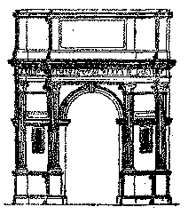
Figura 43: Arco de triumpho
Dá-se tambem esta denominação ás portas das cidades antigas, que apresentavam uma disposição quasi similhante á dos arcos de triumpho. Estes, porém, eram monumentos isolados, formando um só corpo, e não se ligavam ás construções das trincheiras ou muralhas.
Era o contrario do que succedia nas portas da cidade, as quaes não obstante patentearem por vezes nas fachadas grande magnificencia, todavia as extremidades lateraes ficavam encravadas nas muralhas dos recintos fortificados, formando-lhes assim o accessorio ou a ornamentação.
Entre as portas, a disposição mais seguida era a que a gravura apresenta, copiada da de Santo André de Autun, em França.
Templos
Duas formas eram consagradas para estes edificios religiosos, a quadrilonga e a circular. Seguiam mais geralmente a primeira. Os templos receberam differentes denominações, conforme a disposição das columnas que os decoravam; distinguindo-se pela seguinte maneira:
Os templos com pilastras—Os prostylos, fig. 45.—Os amphiprostylos, fig. 46.—Os peripteros, fig. 47.—O monoptero, fig. 48.—Os pseudo-peripterios, fig. 49.—Os hypetheros, fig. 50.—Os monopteros.
| 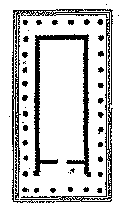 | 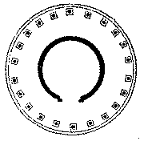 | 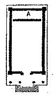 |
| Figura 47: Periptero quadrado | Figura 48: Periptero redondo | Figura 45: Prostylos |
| 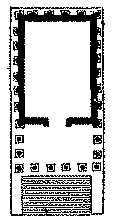 | 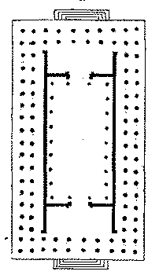 | |
| Figura 49: Pseudo-Periptero | Figura 50: Hypethreos | Figura 46: Amphiprostylos |
Os primeiros não tinham senão pilastras nos cunhaes da frente, e só uma columna de cada lado da porta.
Os templos prostylos apresentavam quatro columnas na face exterior, e não tinham nenhuma aos lados, nem na parte posterior.
Nos templos peripteros, as columnas rodeavam completamente o edificio; sendo em o numero de seis nas fachadas anterior e posterior.
Nos templos pseudo-peripteros differençavam-se dos antecedentes em que as columnas estavam embebidas nas paredes lateraes e na parede do fundo, em logar de ficarem separadas.
Duplo renque de columnas rodeava os templos dipteros, oito das quaes ornavam a fachada.
Finalmente, o templo monoptero apresentava simplesmente a cupula sustentada sobre columnas dispostas em circumferencia; e o santuario não era fechado.
Resulta pois, do que fica exposto, que em todos os templos, excepto nos monopteros, havia uma parte fechada que era o santuario; em muitos templos, corriam em roda d'esse santuario galerias abertas, como especie de porticos para a ornamentação externa do edificio. A parte encerrada era designada sob o nome de cella ou nau. Ahi collocavam a estatua da divindade, em honra da qual o templo fôra erigido.
Na frente da cella, e por detraz das columnas da fachada, estava o pronaus ou vestibulo, no qual abriam a porta da entrada; á extremidade opposta do templo dava-se-lhe o nome de posticum. Algumas vezes reservavam, na parte posterior da cella, um quarto A destinado a guardar o thesouro do templo, e que se designava sob o nome de opisthodomos.
As columnas eram sempre em numero par nas fachadas dos templos; e conforme que se contava quatro, seis, oito ou dez, os templos tomavam a denominação de tetrastylos (4 columnas), hexastylos (6 columnas), octostylos (8 columnas), ou decastylos (10 columnas).
Finalmente, certos templos eram rodeados de uma cerca peribobos ou antecedidos de pateo fechado, e ornados com portico, á roda do qual estavam os aposentos dos sacerdotes.
A estatua da divindade, feita de bronze, marmore, ou pedra, collocava-se no fundo da cella, em pedestal um pouco mais elevado que o altar, e fazia face á porta da entrada. Em geral, os templos ficavam voltados para o oriente.
Figura 51: Fachada da Casa Quadrada de Nimes
Não se deve julgar que os templos fossem muito vastos; alguns d'elles tinham até pequenissimas dimensões, e isso explica-se facilmente pelo conhecimento dos usos religiosos antigos, porque o exercicio do culto era individual; cada um tinha dias proprios para o sacrificio, em quanto, no christianismo, o exercicio do culto é collectivo.
O templo pseudo-periptero hexastylo ha em Nimes (França), da ordem corinthia, o qual serve actualmente para museu de archeologia. A gravura mostra as suas bellas proporções e belleza.
As dimensões e a disposição do templo de Diana, em Evora, apresenta-nos outro exemplo d'esta ordem de edificios do antigo paganismo, que felizmente se conserva em Portugal nas suas magestosas ruinas, como se vê na presente gravura.
Figura 52: Templo de Diana, em Evora
Os templos rectangulares ficavam dispostos como indica a gravura da pag. 60 [fig. 53], rodeados de porticos; no meio d'elles havia o logar da cella e dentro o pedestal para a divindade.
Os templos circulares dividiam-se em duas classes: a primeira chamada monoptero, compunha-se sómente de recinto formado por columnas collocadas em pedestal commum, stylobato; o segundo periptero, apresentava uma cella á roda da qual havia columnas, pousada egualmente sobre um stylobato, com degraus para ganhar a altura do pedestal, e dar entrada para o templo.
Fragmentos achados dos templos antigos, fizeram vêr que as suas esculpturas tinham sido pintadas de branco e amarello com traços encarnados, para dar mais relevo aos contornos.
Não só havia templos nas cidades, mas tambem nos campos. Alguns d'estes eram de grande veneração, pois que serviam de deposito aos mais ricos thesouros, principalmente os dedicados a Mercurio.
Altares.—Já dissemos em que parte do templo se collocavam as estatuas das divindades; agora nos occuparemos da forma dos altares.
Havia entre elles differença de forma e de materia, proporções e usos.
A maior parte dos que se conservaram até hoje mostra a construcção de marmore ou cantaria simples; havia-os tambem de madeira; mas em menor numero. Os altares de metal apresentavam o feitio de tripode; os altares de marmore ou madeira eram quadrados, redondos, e ás vezes triangulares.
Os ornatos mais usados nos altares antigos eram os que representavam as cabeças das victimas, taças, e outros vasos e instrumentos para os sacrifícios, entrelaçados de grinaldas de flores e folhas[14]. Liam-se em alguns altares inscripções indicando a data da consagração, o nome do fundador, e as razões da devoção. Os mais bellos e custosos tinham ornamentações em baixo-relevo representando a divindade que se queria venerar e os seus attributos.
Costumavam fazer em cima dos altares e no meio d'elles, uma cavidade para receber as libações ou o sangue das victimas.
Alguns altares eram fundados nas encruzilhadas, junto das estradas mais frequentadas, onde depois se ergueram cruzeiros, nos tempos modernos, para memoria.
Edificios destinados aos jogos publicos
Tinham os povos antigos tres especies de edificios destinados aos jogos publicos: o circo, o theatro, e o amphitheatro. Muitas vezes teem confundido os três sob a mesma denominação, de circos; porém a forma, as dimensões, e o destino estabelecem entre elles diferenças notaveis.
Os circos eram mais bem considerados que os amphitheatros e os theatros; a forma d'aquelles edificios era de um parallelogrammo prolongado, circular em um dos topos, e quadrado ou levemente convexo do lado opposto. Os dois lados maiores apresentavam exteriormente duas ordens de architectura sobrepostas, limitadas por uma attica e cobertas com terraço. Lojas e passagens cobertas conduziam ao interior do circo, e occupavam o primeiro renque das arcadas. Seis torres quadradas, quatro d'estas nos pontos de juncção dos grandes e pequenos lados do circo, e duas nas extremidades, sobresaiam aos terraços; as quaes torres eram ornadas de quadrigos, ou grupos de andarilhos.
A entrada para os carros destinados ás corridas era pela extremidade convexa do circo; doze arcadas, não comprehendida a que se achava debaixo da torre, fechadas por grades de ferro, serviam de cocheiras, carceres, onde os cavallos eram guardados antes do começo das corridas.
É fácil comprehender a disposição dos assentos postos no interior de um circo: sobre os dois grandes lados e no hemiscyclo opposto aos carceres, levantavam-se os palanques, tendo acima a galeria ornada de columnas correspondentes ás paredes que separavam as arcadas exteriores da segunda ordem, e por meio das quaes podiam circular os espectadores.
Havia tambem, por cima dos carceres, outros palanques, e era ahi, superior á entrada principal na torre collocada ao centro das cocheiras, que estava a tribuna reservada para o imperador ou para o magistrado que presidia aos jogos.
Figura 56: Tribuna de um circo
Entre os assentos dos espectadores e o espaço destinado para os jogos (area), havia, em alguns circos, um canal, de largura de 10 pés, cheio de agua (euripus), resguardado por engradamento do lado da area. Porém os circos não eram rodeados de tal fosso: ainda não se encontrou nenhum vestigio no de Caracalla em Roma, embora fosse um dos principaes, assim como em outros explorados depois.
O euripus não se abria nunca do lado dos carceres, para não interromper a entrada para o circo.
No centro da area dos circos levantavam uma parede de 4 pés de altura e 12 de largura, prolongando-se em quasi todo o comprimento do recinto. A esta construcção, que dividia o circo longitudinalmente, davam o nome de spina. O imperador Augusto foi o primeiro que fez levantar sobre a spina um obelisco dedicado ao Sol.
Havia também sobre a spina dos circos pequenos templos, altares, estatuas e sete bolas, ova, sustentadas em eixos, que serviam para indicar o numero de voltas executadas pelos carros, ova ad metas curriculis numerandis, e sete delphins postos em pedestaes, ou em architrave sustentada por columnas. Os delphins tinham sido escolhidos em veneração de Neptuno, porque se suppunha serem estes os animaes mais ageis do mar. Nas duas extremidades, e na parte exterior da spina, havia sempre tres pyramides firmadas na mesma base, e servindo de ponto de limite. Era junto d'estes marcos (metœ) que os carros deviam voltar para as extremidades do circo, evitando tocar no marco. O ponto de partida era collocado de modo que os concorrentes tinham sempre á esquerda a spina e os marcos.
Os conductores de carros (aurigæ) traziam um vestuario como especie de librés de côres differentes e formavam partidos ou facções. Primeiramente houve quatro librés: a branca, alba; a encarnada, russea; a azul, veneta, e a verde, prasina. O imperador Domiciano juntou a estas mais duas: a purpura, purpurala; e dourada, aurata.
Quando os espectadores se enthusiasmavam faziam apostas para que alcançasse triumpho outra facção, ou côr. Tempos depois, as côres usadas nos circos deram logar a formarem-se verdadeiras facções politicas, a que pertenciam milhares de cidadãos.[15]
Naumachia.—Suppõem-se que os circos serviam ás vezes de naumachia. A naumachia era para a simulação de combates navaes, que se davam em grandes caldeiras cheias de agua, rodeadas de construcções análogas ás dos circos; todavia, concebe-se difficilmente como um circo podia estar apropriado para este genero de divertimentos sem grandes inconvenientes e sem obras preparatorias. A transformação da area dos circos em lagos devia acontecer raras vezes, porque em algumas cidades mandavam abrir lagos apropriados para os combates navaes.
Theatros
Quasi todas as cidades importantes da Gallia possuiam theatros edificados no reinado de Adriano e Antonio, o Piedoso; esses monumentos eram encostados ás collinas sobre o declive das quaes se dispunham os assentos de cantaria em semi-circulo. Na parte inferior d'estas bancadas estava a orchestra, que correspondia ao que chamâmos platéa nos actuaes theatros, e que ficava sobre um terreno plano, assim como a scena.
Esta ultima disposição do theatro dividia-se em tres partes, a saber: o proscenium, ou pulpitum, o palco em que representavam os dramas; a scena, grande fachada muitas vezes ornada com as diversas ordens de architectura, e o post cenium, onde os actores se preparavam para entrar em scena.
A scena apresentava tres portas no fundo: a do centro, mais alta e ornada que as outras, chamava-se porta real; entrava por ali o personagem principal da peça, que representasse o dono do palacio; as figuras secundarias entravam pelas outras portas que se designavam hospitalia, porque de certo representavam os hospedes ou familiares do dono do palacio.
A parede do fundo da scena formava dois lados ou alas (versuræ,) onde havia outras duas portas, uma á direita e outra á esquerda, as quaes faziam suppôr darem saida para o campo e para a praça publica. A configuração de um theatro apresentava pois de um lado a forma semi-circular, do outro a de quadrado. Para chegar ao logar dos espectadores havia muitas escadas partindo do circuito e dirigindo-se da circumferencia para o centro, afim de estabelecer muitas divisões que, pela rasão de sua forma de cunha, eram designadas com o nome de cunei.
Havia, além d'isso, na elevação do amphitheatro (cavea) que cercava a orchestra, duas ou tres divisões principaes, indicadas por separações chamadas præcinctions e ficavam parallelas ás filas dos assentos.[16] Estas divisões tinham o nome de cavea prima, cavea media, cavea maxima ou ultima, conforme estivessem mais ou menos proximas da orchestra.[17]
Havia tambem, em muitos theatros, aberturas quadradas, correspondentes a corredores abobadados dispostos sob os degraus do theatro, e por onde cada qual podia passar para occupar o seu logar, sem ser obrigado a subir da orchestra ou a descer da summa, summa cavea. Estas aberturas chamavam-se vomitorios (vomitoria,) porque parecia que lançavam fóra os espectadores, quando estes entravam em multidão para os seus logares.
Tinham os antigos tres especies de scenas, a scena tragica, a scena comica e a scena satyrica.
As vistas do theatro eram diversas, conforme o genero das peças que se representavam.
As mudanças da decoração praticavam-se por varios systemas. Chamava-se aos bastidores ductiles, quando giravam em corrediças; versatiles, quando se viravam sobre pião.
Muitas machinas fraccionavam na scena e coadjuvavam os papeis dos actores.
Como os theatros não eram cobertos, estendia-se acima das paredes um grande toldo para dar sombra aos espectadores. Este velarium[18] estava fixo ou suspenso em mastros cravados no alto das paredes. Vitruvio recommenda que não exponham os theatros do lado do sul, para evitar que os raios do sol aqueçam demasiadamente o ar.
O theatro de Orange, em França, é uma ruina digna de ser contemplada, e poucas ainda ha que se lhe possam comparar. As suas columnas tinham 18 pés de altura e 2 pés e 4 pollegadas de diametro; a altura das paredes era de 108 pés com tres ordens de columnas. A fachada exterior era decorada por duas fileiras de arcadas sobre as quaes havia um attico. O theatro fôra construido com cantaria de extraordinarias dimensões; notando-se n'estas pedras vestigios de incendio violento.

Amphitheatros
De todos os monumentos romanos existentes são os amphitheatros os que offerecem ainda as ruinas mais collossaes e magestosas. Eram, como indica a etymologia da palavra amphitheatro, dous theatros collocados em frente um do outro, e separados por um espaço livre de forma oval destinado para os combates dos gladiadores e animaes ferozes.
A este espaço davam o nome de arena arena, por causa da areia que espalhavam pelo chão, afim de fazer desapparecer o sangue dos homens e dos animaes derramado durante a luta.
Os palanques eram dispostos á roda da arena, de maneira que de todos os lados os espectadores podessem gosar o espectaculo. Nos amphitheatros, como nos theatros, esses logares eram divididos horisontalmente por cintas curvas ou baltei; e verticalmente pelas escadas em subdivisões cuneiformes, como explicamos acima. Os degraus apoiavam-se nas abobadas, que iam estreitando para o lado da arena, alargando-se e elevando-se á medida que se aproximavam do portico ou galeria, contornando o edificio. Estas abobadas, inclinadas para o centro e alargando para o exterior, eram sobrepostas umas ás outras, e formavam muitas ordens, onde havia muitas cintas curvas.
Figura 61
A vista do corte de um grande amphitheatro mostra claramente esta disposição, com as cintas e o effeito produzido no meio dos palanques pelos vomitorios da cavea. Outro corte apresenta parte do amphitheatro de Aries, mostrando como as grandes escadas, partindo das galerias, conduziam ao interior da cavea.
Na arena havia combates de gladiadores,[19] de homens e animaes, e só de animaes.
Nos dias de combate eram os gladiadores conduzidos processionalmente em volta da arena; depois punham-n'os aos pares, juntando os de força egual. O signal do combate era dado por uma banda de trombetas.
Havia diversas classes de gladiadores, conforme as armas que empregavam no ataque e na defeza.
O amphitheatro de Arles, ruina das mais pittorescas que existem n'este genero em França, tinha de comprimento do grande eixo 420 pés de Norte ao Sul; e do pequeno eixo 309 de Leste a Oeste. A arena tinha no grande diametro 209 pés, e no pequeno diametro 119: gravura da pag. 71 [fig. 63].
Figura 64: Uma das principaes entradas do amphitheatro de Bordeos
Uma cousa particular, que não existe nos outros amphitheatros, é que as galerias subterraneas giravam por baixo e á roda do podium.
O podium estava a 14 pés acima do solo da arena. A parede do sucalco que o levantava a esta altura, era furada na parte inferior, com oito passagens, conduzindo das galerias subterraneas para a arena, passagens que saiam da galeria exterior.
O amphitheatro era construido com boa cantaria de grande apparelho, posta sem cimento algum, e era tal a grandeza das pedras que, apesar de tantos seculos decorridos, ainda se conservam solidas nos seus leitos.
O plano da gravura da pag. 73 [fig. 64] mostra a disposição de outro amphitheatro, que pelo seu genero custava muito menos a construir, que outros compostos de dois lados, porque sendo marcada a inclinação para a encosta, bastava edificar o podium do lado aberto. Podia-se também facilmente transformar os amphitheatros em theatros com outras disposições para o scenario e então constituíam monumentos mixtos, que foram numerosos durante a dominação romana.
Banhos publicos
Os romanos tinham muitas especies d'estes estabelecimentos, que se conheciam com os nomes de thermæ, lavacra e balnea.
As thermas[20] eram vastos edificios que continham não só os banhos, mas tambem porticos e passeios arborisados, salas onde os philosophos e os rhetoricos davam lições publicas e liam as suas obras; onde se exercitavam na luta: chamavam-lhes gymnasios.
Citavam, entre as mais sumptuosas de Roma, as de Agrippa, Nero, Tito, Caracalla,[21] Antonino e Diocleciano, das quaes existiam ainda consideraveis vestigios.
Não se deve suppôr comtudo que haveria similhantes estabelecimentos em todas as cidades onde os romanos dominaram. O mais geral era construir lavacra ou balnea, de limitada dimensão, á qual estavam ás vezes reunidas algumas dependencias dos gymnasios.
Taes edificios eram mais ou menos espaçosos conforme deviam ser francos ao publico de uma cidade bastante povoada, ou simplesmente destinados ao uso de pequena localidade, ou de uma unica familia.
O apodyterium era a sala de vestir, ou em que ficavam depositados os fatos antes do banho.
O aquarium continha os reservatorios, nos quaes a agua era recebida e podia clarificar-se antes de distribuida no edificio.
O vasarium, tirava este nome de tres grandes vasos, ou depositos cheios de agua quente, de agua tepida e de agua fria.
O laconicum, estufa aquecida por um hypocausto, tinha ás vezes uma das extremidades em semicirculo, onde havia um disco de bronze, pelo movimento do qual, abaixando-se ou levantando-se, podia augmentar-se a intensidade do calor, ou diminuir a temperatura.
O tepidarium era, segundo Vitruvio, a estufa menos quente que a antecedente, e em contacto com ella.
Havia outra casa destinada para o banho de agua quente, que se tomava n'uma especie de tina, labra.
O pequeno pateo ou vestibulo que precedia o forno do hypocausto chamava-se o propnigeum ou o proefurnium.
A parte destinada ao banho frio era o frigidarium, ou sala não aquecida, onde os banhistas descançavam alguns instantes antes de sairem para a rua, afim de evitarem o perigo da mudança rapida da temperatura.
A piscina natatilis ou frigida lavatio, reservatorio de agua fria em que as pessoas robustas podiam banhar-se depois do banho quente, e de que se fazia uso principalmente no verão.
O eleothesium, onde os banhistas podiam esfregar o corpo com oleo ou perfumes[22].
Uma curiosa pintura a fresco, copiada das thermas de Tito, em Roma, e que representava o interior de uma casa de banhos, faz comprehender muito bem a disposição geral de taes estabelecimentos, como se vê na gravura da pag. 76 [fig. 66].
Distinguem-se, no primeiro plano, duas salas sob as quaes arde o fogo do hypocausto.
Figura 66: Vista de uma
pintura a fresco tirada dos banhos de
Tito.
Uma d'estas salas devia ser a concamerata sudatio, ou a estufa abobadada para fazer transpiração.
Ha n'esta sala um pequeno forno, cuja abobada fecha em escudo de bronze que se movia por meio de corrente, afim de deixar sair mais ou menos o vapor da agua quente.
Junto do laconicum está a sala do banho, separada por um corredor. Vêem-se muitas pessoas n'uma grande tina labrum, em volta da qual estão assentos encostados á parede.
Mais afastado apparece representado o vasarium, com os tres grandes vasos collocados em diversos niveis: o primeiro menos elevado contem agua a ferver; o segundo agua tepida, e o terceiro agua fria.
No segundo plano, e por detraz da estufa para suar, vê-se a sala chamada tepidarium.
Passado o tepidarium, distingue-se a sala fria, frigidarium, que em alguns banhos servia tambem ao apoditerium. Em ultimo plano está o eleothesium, ou sala dos perfumes.
Para se formar idéa exacta d'estes monumentos, convem examinar e comparar entre elles que se têem descoberto em differentes partes; para o que apresentamos as gravuras dos banhos de Verdes e de Landunum.
Explicações crestas casas de banhos
Entrava-se por dois pateos sobre o comprido ou corredores G, K, nos banhos de Verdes, para os salões P, S, os quaes tem ainda no chão mosaicos. D'estes dois salões passava-se para o vestibulo B, e d'ahi para a sala D, cujo piso estava sobre hypocausto.
A sala imediata C, devia ser de temperatura mais elevada á antecedente; pois o forno collocado em F, no pequeno pateo proximo, recebia d'elle o calor que circulava primeiro debaixo do piso da referida sala C.
Havia outras casas que não eram aquecidas pelo hypocausto, especie de saletas pelas quaes se entrava e saía P, A, B, S.
Figura 67: Banhos de Verdes
(França), vistos de alto.
Figura 68: Plano dos banhos de
Landunum (França).
Duas bandeiras muito notáveis que serviriam para banhos frios ML, tinham communicação por uma passagem com a sala D; cada uma d'ellas tinha em S e em R um reservatorio para agua.
Os pateos H e I serviam de deposito para o combustivel.
Em cada uma das salas O e P havia um nicho para uma estatua.
Nos banhos de Laudunum (pag. 79 [fig. 68]), no vestibulo D, o chão tinha mosaicos. D'aqui passava-se á bella sala (n.º 8), tambem com mosaico. Seguiam-se outras casas com o solo suspenso e aquecido pelo hypocausto; em uma (n.º 7) de um lado tem um nicho circular, e do outro, quadrado d c, que serviam para as banheiras.
A sala n.º 6 seria a reservada para conservar maior gráo de calor, porque o forno do hypocausto tinha a boca d'elle no centro d'esta casa.
O forno tinha serventia pelo pequeno pateo n.º 4. Antes de atravessar a sala n.º 6 aquecia tres reservatorios revestidos de cimento f. f.
As salas E, e os n.º 9, 10, 11 eram casas para depositos do estabelecimento.
Palacios
Quasi todas as cidades de pequena importancia tinham palacio destinado para os aposentos dos imperadores, quando as visitavam; porem antes serviam para os seus representantes, os intendentes ou funccionarios encarregados da administração do paiz.
Os palacios que deviam offerecer as disposições analogas ás das casas nobres dos particulares, differençavam-se principalmente pela extensão, pelos peristylos, pateos e diversas dependencias. Os de maiores dimensões, como o de Trajano, eram ligados ao forum, junto do qual havia basilica, onde se julgavam os criminosos, e tambem thermas.
Tal era a grandesa do palacio de Diocleciano, em Spalatro (na Dalmacia), cujas columnas e paredes estão ainda de pé, comprehendendo grandes divisões: templo, basilica, pretorio, independentemente dos aposentos imperiaes.
Casas particulares
Daremos algumas explicações a respeito das construcções particulares.
Chamavam prothyrum, nas casas das cidades, á passagem por onde se entrava no interior d'ellas.
Era n'esta passagem o quarto do porteiro cella ostiarii, e ás vezes a parte que servia de vestibulo, com habitação de mediana extensão.
O atrium era a galeria quadrada (3)[23] tendo ao centro um pateo descoberto (impluvium), no meio do qual havia um tanque á superficie do chão (compluvium) para receber as aguas da chuva (D).
O atrium era ornado com os retratos da familia; o dono da casa recebia n'elle os seus clientes. Havia muitas especies de atrium.
O atrium toscano, que se encontrou em Pompeia em grande numero de casas e usado unicamente nos primitivos tempos, tinha o telhado sustentado por madeiros cruzados em angulos rectos: o telhado tinha escoantes para todos os lados e para o centro do pateo.
Existia a mesma disposição no atrium tetrastylo; apenas quatro pilares ou columnas, collocadas nos angulos do impluvium, sustentavam as vigas do tecto nos pontos de juncção.
No atrium corinthio, as columnas para ponto de apoio eram mais numerosas, e o impluvium era também mais espaçôso. Construiram o atrium só para as grandes habitações.
O atrium displuviatum tinha os telhados inclinados em sentido inverso dos precedentes, de modo que lançavam as aguas da chuva para fora da casa, em logar de as conduzir para o impluvium.
Finalmente, no atrium testudinatum, o pateo central era coberto de telhado um tanto mais elevado, que os das galerias.
Figura 69: Plano de uma casa nobre na cidade romana.
Nos predios importantes, como é representado no plano junto, havia em roda da galeria do atrium aposentos destinados a diversos usos, com saidas para a galeria, e alguns dos quaes serviam de tribuna ou sala de festim (C, C, C).
Na extremidade do atrium, e em frente do prothyrum, estavam o tablinum (4) e duas casas mais pequenas, chamadas azas, communicando com elle (5-6).
O tablinum e as azas encerravam a imagem dos parentes fallecidos, os livros, archivos e papeis pertencentes aos negocios do proprietario, assim como os documentos relativos ao emprego que exercia.
O peristylo apresentava, além do tablinum, uma galeria ornada de columnas, como a do atrium corinthio (17-17), cuja extensão porém era mais consideravel.
Os aposentos eram distribuidos á roda d'estas galerias (18-19); um espaço quadrado, inteiramente descoberto e plantado de flôres e arbustos no centro, devia parecer a imitação da parte central de alguns claustros.
Os œci correspondiam aos nossos salões.
A exedra era outra grande sala para conversação, tendo n'um dos lados a parede curvilinea, como se fosse construida para nicho.
Encontravam-se tambem, ás vezes, nas habitações das pessoas abastadas, jogos de péla, sphæristerium, e salas destinadas para outros jogos.
O banho era composto em geral de apodyterium, frigidarium, tepidarium, sudatorium e eleothesium:
A basilica;
A pinacothéca ou galeria para quadros;
As cosinhas e as officinas dependentes para o fabrico do pão;
As cavalhariças, cocheiras e armazens;
Finalmente, havia um numero mais ou menos consideravel de quartos para dormir e para acommodar os creados.[24]
Eis agora o plano de outra casa de muito menor importancia que a anterior, na qual não encontrâmos nem as commodidades nem a regularidade das grandes habitações particulares; mas veremos que as residencias se modificam conforme a necessidade da familia e as suas posses pecuniarias. Examinemos a disposição de uma das casas descobertas nas minas de Pompeia.
A entrada ou prothyrum n.º l, conduz ao atrium n.º 2, chamado displuviatum, isto é que servia para o despejo das aguas da chuva para fora da habitação. Tinha na grossura da parede o impluvium n.º 3 e 4, e os alegretes para as flôres.
Figura 70
Uma escada de madeira n.º 5, conduzia ao aposento que occupava o dono da casa e a sua familia. Posto que a escada estivesse inteiramente destruida, era facil observar o feitio do corrimão, porque o artista a riscara na parede que lhe servia de caixa.
Os quartos 6 e 7 eram destinados para receber os estrangeiros e os amigos. O escravo que guardava a porta da rua devia dormir no quarto n.º 8, onde se conservava tambem de dia. Era pequena a cosinha n.º 9 collocada ao lado do corredor.
Casa de campo (villæ)
Suppõe-se que as mais bellas casas de campo romanas tinham só um andar; tambem não se differençavam essencialmente das da cidade, e continham pouco mais ou menos as mesmas divisões, mais arbitrarias, conforme exigia o terreno, a belleza do sitio, a importancia da exploração rural e outras circumstancias da edificação.
Columella,[25] distingue tres partes em uma casa de campo occupando-se de trabalhos ruraes, e o maior numero das villæ gallo-romanas e luso-romanas estavam n'este caso. As tres partes eram:
A villa urbana, ou habitação do proprietario;
A agraria, ou habitação dos lavradores, e dos animaes necessarios para a lavoura;
A villa fructuaria, onde se recolhiam as colheitas e os outros fructos das terras.
As casas anuesas ao segundo pateo, chamadas agrariæ, ou fructuariæ, apresentavam menos interesse com relação á arte, que a villa urbana. Eram pertenças do casal ou dos trabalhos ruraes, villa agraria.
No centro do pateo da villa via-se, como se pratica ainda hoje, um tanque ou lagôa compluvium, para se banhar o gado. Á roda do pateo estavam dispostos, a cosinha, o abrigo para os escravos, a abegoaria (bubilia), o curral das ovelhas (ovilia), as cavallariças (equilia.) Achava-se tambem ali o gallinheiro (gallinaria) e o chiqueiro para os porcos (haræ).
Pode-se citar como pertenças da villa fructuaria, que estava ora separada ora junta da agraria, a adega (cellæ) o palheiro (horrea), a casa da fructa (apothecæ), etc.
Tem-se encontrado numerosos vestigios das villæ ou casas de campo fabricadas durante a dominação romana. Em 1874 descobrimos em Portugal uma proximo de Leiria, no logar de Martim Gil, na profundidade de 1m, 59; havia ali differentes casas com mosaicos, e na principal achámol-o de cinco côres. Fizemol-o transportar para o museu da archeologia, que fundáramos em Lisboa em 1866. Não tem acontecido outrotanto com essas casas antigas edificadas nas cidades, pois foi arrasado o solo que ellas occupavam, e isso deu logar a aproveitarem-se os alicerces que ficaram enterrados.
Para darmos idéa mais completa, descreveremos a villa de Bignor em Sussex (Inglaterra), por ser a mais bem conservada que existe.[26]
Compõe-se de dois pateos: um (A) mais vasto que o outro, rodeado de muros bastante grossos, não formava angulo recto com os do segundo pateo. O muro de leste tinha 277 pés de comprimento, o do norte 385 pés, e o do sul 322.
Este pateo, que representava a villa rustica, comprehendia muitas e amplas construcções, mas nenhuma tinha vestigios de pintura nem de pavimentos de mosaicos.
O outro pateo (B), que formava propriamente a villa urbana, estava cercado de casas ricamente ornadas e quasi todas tinham mosaicos.
Um corredor ou crypto-portico (1, 2, 3, 4), que era construido á roda do quadrado do pateo servia para communicar com os aposentos; o comprimento do corredor era de 160 pés, de leste a oeste.
Figura 71: Villa de Bignor em Sussex.
Uma grande parte d'estes corredores tinha mosaicos.
Ao longo do crypto-portico septentrional estavam dispostos os aposentos (n.º 5, 6, 7, 8, 9, 10, 11, 12, 13).
No n.º 14 via-se um mosaico de 8 pés de quadrado dividido em formas de rhomboides e triangulos.
O n.º 15, era uma das melhores casas da villa, tinha 19 pés por 30, com uma grande camara de 12 pés, o que lhe dava 32 pés por todo o comprimento do norte ao sul; o pavimento era formado de mosaico muito notavel, porque um dos desenhos representava o rapto de Ganymedes.
No meio do aposento, e ao centro da maior composição circular de mosaico, via-se uma cisterna de pedra branca e de 4 pés de diametro, no fundo da qual existia um orificio com tubo de chumbo.
Esla sala e o aposento immediato eram aquecidos por um hypocausto, cujo forno se abria pela parte exterior da casa na base da parede.
O n.º 19 era um atriolum, ou pequeno pateo ornado de columnas. Os aposentos do pateo do norte e do sul (21, 22, 23, 24, 25), eram em geral ornados de pinturas, e com o chão de mosaicos.
No n.º 22 encontrou-se um fogão de 31 pollegadas de boca, e 17 pollegadas de fundo; tijolos ligados com ferro ao fogão formavam-lhe as paredes lateraes. Outro fogão similhante foi achado no quarto n.º 23.
Os aposentos menos importantes occupavam o lado sul até o n.º 35. Aquelles que se lhe seguiam haviam feito parte de um banho.
Depois da sala das estufas, vinha a que era destinada para o banho frio (n.º 40), que tinha 35 pés por 30. O chão estava menos mal conservado e compunha-se de pedras brancas e pretas de 6 pollegadas em todos os sentidos, dispostas em xadrez.
O sitio do banho achava-se pouco mais ou menos no meio do aposento. Era um reservatorio com aproximadamente 18 pés de leste ao oeste, de 3 pés e 2 pollegadas de profundidade. Descia-se por tres degraus do lado de leste, do oeste e do norte.
A bella sala (n.º 41), situada a leste da precedente, apresentava um quadrado de 35 pés, porém era um tanto irregular por causa da direcção diagonal da parede de leste. Admirava-se um mosaico mais bem conservado que os restantes.
A maior parte destas villæ teria sido construida nos tres primeiros seculos da era christã, julgando-se assim pelas medalhas encontradas nas suas ruinas, e que algumas datam do seculo IV.
Monumentos funereos
Depois de descrevermos os edificios, onde os antigos passavam a vida de confortos da civilisação romana, a ordem natural nos conduz aos monumentos que encerravam os despojos mortaes.
Ainda que algumas familias mandassem enterrar os corpos, todavia o uso de queimal-os foi quasi geral em Roma antes da conquista da Gallia, e n'este ultimo paiz, nos dois primeiros seculos da era christã.[27]
A fogueira funebre (rogus ou pyra) era formada de lenha de facil combustão e faziam-n'a mais ou menos alta conforme a cathegoria das pessoas finadas. O corpo era posto sobre uma especie de leito de ferro ou maca, e os parentes do defuncto, depois de lhe terem dirigido o ultimo adeus, voltavam o rosto e acendiam a fogueira com uma acha.
Quando a fogueira estava extincta, lançavam vinho nas cinzas do defuncto, e então estas eram cuidadosamente encerradas em uma urna que mettiam em seguida na terra com certo numero de vasos de differentes formas e tamanhos, que se collocavam em roda, os quaes estavam cheios de liquidos ou algum manjar offerecido aos deuses manes.
As urnas de barro descobertas em grande numero de cemiterios são em geral do feitio simples, e muitas apresentam côr cinzenta; comtudo, notam-se por suas formas perfeitas e graciosas. As mais ornadas tem filetes, entre os quaes se traçaram riscos parallelos. Algumas tem estrias ao alto, outras molduras entrelaçadas, em zig-zags, etc. etc. As formas mais geraes são as das gravuras seguintes a, b, que se encontram nos antigos cemiterios.
Figura 72: Urnas de vidro, do museu de Tours.
As urnas de vidro, muito mais raras que as de barro, eram reservadas para os finados de familias abastadas. Tem um tanto o feitio das urnas de barro, porém o mais é apresentarem a configuração de um grande frasco com gargallo redondo com uma ou duas azas, sendo o corpo ora cylindrico, ora quadrado.
As urnas mais notaveis são de cobre batido e lavrado, e tambem estas difficilmente se encontram.
Em Alcacer do Sal fez-se em 1874 o descobrimento de um necropole romano, no qual se acharam quatro urnas cinerarias com pinturas, imitando o genero etrusco, obra executada por artista grego. Eram de differentes tamanhos, tendo a maior 0,59 de altura, 0,34 de largura; esta rara descoberta feita em Portugal causou bastante admiração entre os archeologos estrangeiros.
O orificio das urnas era tapado, ou com um prato voltado, ou com um pedaço de tijolo, ou ardozia, e até com um bocado de lagea.
Encontram-se geralmente junto d'estas urnas, taças de differentes generos e pequenos vidros com gargallo estreito e sobre o comprido, especie de galheta com feitios variados; mas o maior numero é de barro encarnado, e suppõe-se terem servido para conservar o vinho, o leite, ou algum licor offertado aos manes do finado.
Figura 74
A maior parte das urnas, foram mettidas dentro da terra sem caixas de resguardo; porém muitas tiveram esses cofres para a conservação. Se a madeira que serviu para isso apodreceu a primitiva existencia parece provada pelos pregos que ligavam as taboas, que se encontram ás vezes em roda das urnas. É possivel que as urnas de vidro ou crystal, que pertenciam a defunctos de cathegoria, fossem mettidas nos cofres de madeira ou de pedra. Alguns d'estes ultimos, encontrados em varios cemiterios, eram compostos de duas peças e bastante espaçosas para conterem a urna cineraria, e os vasos accessorios de que já fallámos. Finalmente, construiam ás vezes, no proprio local, e no momento do enterro, o cofre ou resguardo que devia conservar a urna cineraria.
Em quanto ás cinzas do finado de humilde condição e pobre eram mettidas em vasos de formas simples, e accumuladas nos cemiterios sem cousa alguma que as indicasse; as que pertenciam á classe media da sociedade tinham por cima da urna um cippo, e os mais opulentos apresentavam um monumento ainda mais importante.[28]
Em geral, os monumentos mais sumptuosos estavam postos em fileira nas vias que davam entrada nas cidades.
As pedras sepulchraes, ou estélas,[29] tomavam differentes feitios e algumas apresentavam inscripções e a effigie do finado. [fig. 75]
Figura 75: Estéla.
Não se deve cessar de recommendar as explorações dos cemiterios romanos. Quando se procede a obras publicas, ou particulares, descobre-se a sua existencia no meio dos campos, principalmente nos terrenos incultos, onde as urnas tem sido conservadas por faltas de convenientes excavações.
Algumas sepulturas, destinados á classe inferior, são tambem monumentos importantes como se vê na presente gravura.
O monumento pyramidal de S. Ramiro, é um edificio composto de tres ordens de andares sobrepostos, com aproximadamente 50 pés de altura. O primeiro andar é quadrado, e serve de pedestal, com baixos relevos nas quatro faces; pilastras sem pedestaes ornam-lhe os angulos.
O segundo andar é egualmente quadrado com quatro arcos de archivolta que assentam em pilastras; nos angulos tem quatro columnas corinthias com estrias; o friso é ornado de arabescos em que se distinguem cavallos marinhos alados, sereias, etc.
O terceiro de fórma circular, mostra uma cobertura conica sustentada por columnas corinthias, semelhando d'este modo o lanternim do pequeno templo circular monoptero: debaixo d'esta especie de cupula estão collocadas duas estatuas em pé, uma de homem, outra de mulher.
Não pode haver duvida de que esta pyramide seja monumento sepulchral; pois sobre o friso do segundo andar, ficando orientado ao Nordeste, vê-se a seguinte inscripcão:
SEX L M IVLIEI C F PARENTIBVS SVEIS
que se tem lido d'este modo:
Sextus Lucius Marcus Julii curaverunt fieri parentibus suis. As duas estatuas representariam pois o pae e a mãe de Julius, os quaes erigiram a pyramide.
Figura 77: Sarcophago do museu de Ruão.
Enterramentos.—Os corpos que não eram queimados, enterravam-n'os em sarcophago de pedra ou em caixões de chumbo, resguardados em outro cofre de madeira, ou de pedra, como se vê na gravura da pag. 93 [fig. 77].
Em numerosos sarcophagos dos pagãos está representada a ascia,[30] e o nivel, em esculptura. Alguns tem uma inscripção na tampa, porém esta vê-se mais geralmente no meio do cofre, como indicamos na gravura da pag. 94 [fig. 78].
As inscripções eram mui interessantes por quanto expressavam o maior sentimento das familias. Os antigos nada tinham que invejar aos povos modernos a este respeito: e é facil comproval-o. Eis um epitaphio que patenteia o profundo affecto de uma infeliz mãe chorando a perda da filha querida:
Ó dôr! quão amargas tem sido as lagrimas derramadas n'esta sepultura em que jaz Lucinia... Lucinia, suave alegria de tua mãe. Sim! aqui está sob este gelido marmore. Prouvesse aos Deuses que o espirito de novo se animasse porque ella conheceria quão dolorosa é a minha afflicão. Viveu 27 annos, 10 mezes e 25 dias. Parthenoca, mãe infeliz, lhe mandou erigir este monumento.
Os Aliscamps deixaram-nos outros que se distinguem por sua philosophia, e a cujo sentido se dá muitas vezes a interpretação da philosophia christã. Taes são as duas inscripções seguintes:
D.
M.
FVI, NON SVM; ESTIS, NON ERITIS;
NEMO IMMORTALIS
Fui, não sou; sois, não sereis; ninguem é immortal.
Por outra vemos que entre os romanos, como entre nós, os herdeiros eram mais solicitos em apoderarem-se dos bens dos paes, que dispostos a levantarem-lhes jazigos; de modo que os homens avisados mandavam construir os tumulos em vida, para terem a certeza de que não se lhes perdia a memoria.
D. M.
LVCIVS
GRATIVS EVTICHES
DOMVM
AETERNAM
VIVVS
SIBI CVRAVIT
NE
HAEREDEM ROGARET
TAVTA
Lucio
Grado Eutichis erigiu,
ainda vivo, esta morada eterna, para
não pedir ao seu herdeiro que lhe prestasse este
serviço.
Ao findar a dominação romana, quando o christianismo estava solidamente estabelecido na Gallia, a incineração dos mortos já não se praticava.[31]
Os sarcophagos christãos em marmores são faceis de distinguir dos sarcophagos pagãos por causa das esculpturas symbolicas, ou das scenas biblicas que os ornam.
Objectos de barro
Os objectos de barro são, na maior parte, fragmentos que se encontram nas localidades habitadas no tempo da dominação romana.
As peças mais notaveis pela fórma delicada e pela conservação, são de barro vermelho envernisadas com bastante brilho, e ornadas com figuras em relevo. Encontram-se em grande quantidade nos logares que tiveram importancia sob o dominio romano. É raro, sem duvida, acharem-se vasos inteiros; mas pode julgar-se pelos fragmentos encontrados quaes seriam a forma e as dimensões dos objectos a que pertenciam.
Os vasos de barro encarnado apresentavam quasi o mesmo feitio, vasos bojudos, tijelas ou gamellas de differentes tamanhos [fig. 79], taças com pé, compoteiras, pequenas taças, travessas redondas de diferentes tamanhos com borda saliente [fig. 80], pratos, pires, etc, etc.
Pode suppôr-se que a boa louça encarnada servia principalmente para o serviço da mesa, e para o de toucador.
Figura 79
Figura 80
A forma dos vasos era geralmente perfeita: os que tinham figuras eram fabricados com moldes, e isto explica a apparencia gasta de alguns; o interior era liso, notando-se apenas alguns circulos concentricos formados pelo torno. Por baixo do fundo do vaso achava-se, quasi sempre, o nome do operario ou do fabricante, gravado com uma especie de estampilha ou sinete.
Estes nomes estão umas vezes no genitivo, outras antecididos ou seguidos das lettras o ou of, para designar officina, assim: of Severi; Bassi; of o, Croci, Crassi o; o que quer dizer que os vasos sairam da officina ou da fabrica de Severo, de Basso, de Croco, de Crasso, etc, etc.
Figura 81
A palavra manu, escripta com todas as lettras ou em abreviatura, como nas inscripções de: Priscilli manu, Silvani m, significa da mão de Priscillio, de Silvanos, etc.
Alguns d'estes vasos eram inteiriços, não podendo sair do molde senão depois do barro ter seccado para que o relevo se tirasse sem damno do concavo do molde.
A maior parte porém era tirada de duas ou mais peças, porque seria impossivel formar um molde de uma só peça para os vasos bojudos.
Se os fabricantes de louça de barro imprimiam os seus nomes no fundo d'esses vasos, os artistas que fariam as formas e compunham os assumptos que deviam apparecer nos relevos exteriores, inscreviam tambem os seus nomes nos moldes, entre as figuras.
Barro preto.—As peças de barro preto são mais raras que as encarnadas, embora se encontrem misturadas com estas.
Tem-se encontrado cobertas com bom verniz côr de ébano, e mostrando argila, menos compacta que a dos vasos encarnados; ora cinzenta, ora esbranquiçada, ou avermelhada.
Objectos de barro bronzeado.—Apparecem tambem em muitas localidades pequenos vasos muito leves, de barro encarnado ou amarellento, misturado de quartzo cobertos de verniz de furta-côres, suavemente applicado.
Figura 82
Barros avermelhados, cinzentos escuros, ou esbranquiçados, etc.—São mais ou menos apurados; a massa ou argila de differentes côres foi empregada para fabricar travessas, pratos, vasos de diversos feitios destinados para varios usos, botijas, etc.
Nos vasos destinados para os liquidos, como são as nossas garrafas, encontram-se, quer de barro vermelhado, quer cinzento ou esbranquiçado, formas mui elegantes, das quaes se conservaram algumas até o presente.
Os vasos, como os que se vêem em seguida, ora de barro encarnado, ora cinzento, apreciam-se um tanto com as saladeiras, ou tijelas grandes, de que ainda se faz uso.
Figura 84
Encontram-se, egualmente, em terrenos cultivados, onde se acham também telhas e vestigios de habitações romanas.
Figurinhas de barro
As estatuetas de barro cozido de côr alvacenta acompanham, muitas vezes, os fragmentos que assignalam o logar occupado pelas construcções gallo-romanas, e ainda constituem objectos pertencentes á arte de oleiro.
Encontra-se sobre tudo, frequentemente entre ellas, a figura de Venus Anadyomena,[32] e taes estatuetas são tão similhantes, que parece terem saido do mesmo molde; estão completamente nuas, com a cabeça coberta de abundantes cabellos, a mão direita apanhando-os, e a esquerda tomando a roupagem.
As outras figurinhas que se encontram mais vezes junto das Venus, representam uma mulher amamentando uma ou duas creanças, sentada n'uma cadeira de braços feita de vime encanastrado. Alguns archeologos suppôem ser esta a imagem de Latona,[33] outros a de Lucina:[34] porém, julga-se que estas figuras serviam para ex-voto, tanto das mulheres que desejavam obter feliz parto, como d'aquellas que mostravam a sua gratidão pelo terem alcançado, ou em fim das mães que creavam os filhos, e que o offereciam á deusa invocada por ellas n'esta circumstancia.
Figura 85
A imagem de Mercurio encontra-se em grande numero entre as estatuetas de barro cozido.
Mas nem todas as figurinhas antigas que se encontram eram destinadas para reproduzir a imagem das divindades. Eram vazadas nas formas como se faz presentemente um grande numero de objectos profanos, caricaturas, brinquedos para creanças, etc.

Figura 86
Entre estes ultimos, podem citar-se as figuras de aves, animaes diversos, carneiro, javali, etc., e também chocalhos como os achados em tantas localidades diversas, e que se compôem d'um pequeno globo de barro cozido tendo dentro seixosinhos que produzem o effeito de um cascavel.
Objectos em metal, joias e utensilios
Havia egualmente reproduzido em cobre grande parte dos vasos que se faziam de barro, principalmente as travessas, bacias, garrafas e baldes para sacrificios.
Fizeram-se até magnificos de prata, com figuras em relevo batido: a prova d'isto são os utensilios de todas as formas, em bronze, que existem em tantas collecções publicas e particulares: broches, fivelas, e joias tão variadas como as que ahi se vêem, mostram a que ponto os romanos tinham alcançado a perfeição no trabalho dos metaes, nas pedras preciosas, no marfim, etc., etc. A descripção de todas estas riquezas artisticas, não pode figurar n'este resumido compendio.
Os objectos de metal, e os restos mais preciosos pertencentes á antiguidade, foram descriptos por Caylus, Winckelmann, Chabonillet, etc., sabios antiquarios que deram a mais completa explicação a este respeito.
Pela mesma razão, não nos devemos occupar das medalhas romanas, não obstante o estudo ser util e importante, porém necessitaria augmentar demasiadamente este livro, e o nosso intuito foi unicamente apresentar resumida apreciação da architectura pertencente á época gallo-romana, e descrever os vestigios dessiminados no solo habitado pelo povo-rei.
Muralhas de defeza ou forticações
Sem discutir aqui sobre qual seria a época a que pertencem as muralhas que defendiam as cidades gallo-romanas, devemos comtudo fazer menção d'ellas, porque constituem ainda provas muito importantes d'essa grande época.
Quasi sempre estas muralhas foram construidas com pedra miuda, mostrando na face exterior o pequeno apparelho, separado por cadeias de tijolos, e cuja base formada por pedras de grande apparelho deviam já ter servido nos monumentos da architectura, que provavelmente foi preciso sacrificar para lhe aproveitar o material afim de se fortificarem em momento de apuro.
O sabio Mr. de Caumont já tinha ha muitos annos insistido sobre um grande facto, que nenhum historiador indicára, e que ainda ignoram quasi todos, e é a existencia em differentes localidades d'um castrum, cujas muralhas estão em grande parte formadas de cantaria mostrando obra de esculptura dos seculos II e III, taes como os fustes de columnas, frisos, capiteis, tumulos, pedras com inscripções; e por isso o illustre archeologo julgou poder determinal-o como obra dos fins do seculo IV, sendo a execução d'essas fortificações em todos os logares apropriados para tal fim.
Seja como fôr, tendo-se as cidades concentrado cada vez mais, era preciso restringir o perimetro do recinto á parte mais facil para ser defendido, e na possivel extensão com os materiaes disponiveis, cercado de muralhas. Podiamos citar diversos recintos fortificados com 3 a 10 hectares sómente, em quanto essas cidades onde os havia, occupavam antes 100 e até 200, durante o tempo que disfructavam a paz.
No fim de tres seculos de espantosa prosperidade, a Gallia viu, no seculo IV, a desorganisação e o enfraquecimento gradual das instituições romanas. Custa a comprehender a que grande aviltamento chegaram no seculo V.
Um esboço rapido sobre os acontecimentos politicos da Gallia, no quarto quartel do seculo III explicará claramente a marcha progressiva da decadencia das artes do seculo IV. Depois das invasões, a miseria publica augmentou, os abusos mutiplicaram-se, a energia moral diminuiu, as grandes obras da architectura cessaram, e o gosto foi-se alterando cada vez mais.
As artes, para prosperarem, tem necessidade de paz e liberdade: estas condições essenciaes faltaram-lhe no seculo IV; vê-se portanto declinar tanto mais rapidamente quanto os lapsos da paz eram mais curtos e raros.
Todavia, assim como as instituições romanas não desappareceram com a quéda do governo romano, assim tambem as artes trazidas para a Gallia pelo grande povo sobreviveram ao imperio.
«Tal era a robustez da organisação romana, diz Michelet, que, quando a existencia parecia desemparal-a, quando até os barbaros estavam prestes a distruil-a, sujeitaram-se a ella sem o quererem. Foram obrigados, de boa ou má vontade, a habitar sob as abobadas invenciveis que não podiam abalar; a curvar a cabeça e receber ainda por cima, embora vencedores, a lei de Roma vencida.»
O que expressa Michelet com relação ás instituições romanas, poderemos applical-o ás artes, com que o povo-rei dotou a Gallia. Os monumentos em ruinas serviram em breve de modelos aos barbaros que apparecem armados com o facho de incendio. Os barbaros começaram a trabalhar tambem, a edificarem templos, palacios, mosteiros, etc, etc; foram procurar nas tradicções dos antepassados os conhecimentos para repararem as proprias devastações. A architectura gallo-romana, mais ou menos alterada nos seculos V e VI, seguiram seu caminho, até que uma grande revolução, no fim do XII seculo, substituiu por principios inteiramente novos as antigas tradições. É o que nós propomos demonstrar nos capitulos que vão seguir-se.
Figura 87
ADDITAMENTO
Inscripções Latinas
Como o estylo lapidar tem certas formulas, abreviaturas especiaes e signaes particulares, sem adquirir algumas explicações a este respeito, a interpretação ficaria baldada para quem não as possuisse; embora seja tambem preciso não ignorar os acontecimentos historicos, todavia julgamos conveniente ajuntar a este compendio alguns esclarecimentos epigraphicos afim de facilitar aos principiantes a leitura das lapidas: portanto, acrescentamos a esta publicação um quadro succinto das principaes abreviaturas que se encontram nas inscripções luso-romana, por serem estas as de mais difficil interpretação.
Ainda que a mesma lettra inicial corresponda a diversas palavras, o sentido geral da inscripção indicará a que fôr mais apropriada á sua significação. É pois facil distinguir, com alguma sagacidade, os nomes proprios dos nomes substantivos.
A palavra tribu, á qual as familias romanas pertenciam, fica sempre subentendida, e só se menciona o nome.
As datas, em geral, sabem-se pela indicação do anno do reinado do imperador, ao tempo do qual o monumento foi erigido. Finalmente, deu-se o epitheto de Divus, a cada um dos imperadores, depois da sua morte.
A.—ager; augustales: augustatis.—A. A.—apud agrum.
AB. AC. SEN.—ab actis senatus.
æ. CVR.—ædilis curulis. A. FRVM.—a frumento.
A. H. D. M.—amico hoc dedit monumentum.
A. K.—ante kalendas.—A. O. F. C.—amico optimo faciendum curavit.
A. P.—ædilitia potestate; amico posuit.
A. S. L.—animo solvit libens; a signis legionis.
A. T. V.—aram testamento vovit.
A. XX. H. EST.—annorum viginti hic est.
B. A.—bixit (pro vixit) annis.
B. DE. SE. M.—bene de se meritæ, vel merito.
B. M. D. S.—bene merenti, vel bene merito de se.
B. P. D.—bono publico datum.
B. Q.—bene quiescat.—B. V.—bene vale.
BX. ANOS. VII. ME. V. DI. XVII.—vixit annos septem, menses, sex, dies decem septem.
7.—centuria; centurio.—C.—centurio.
C. B. M.—conjugi bene merenti; et F.—conjugi bene merenti fecit.
CENS. PERP. P. P., vel CENS. PERP. p. r., vel CENS. P. P. P.—censor perpetuus; pater patriæ
COH. I. AFR. C. R.—cohors prima africanorum civium romanorum.—FL. BF.—-flavia beneficiariorium.
C. I. O. N. B. M. F.—civium illius omnium nomine bene merenti fecit.
C. K. L. C. S. L. F. C.—conjugi carissimo loco concesso sibi libenter fieri curavit.
C. P. T.—curavit poni titulum.
C. R.—civis romanus; civium romanorum; curaverunt refici.
C. S. H. S. T. T. L.—communi sumptu hæredum, sit tibi terra levis.
D.—Decimus; decuria; decurio; dedicavit; dedit; devotus; dies; diis; divus; dominus; domo; domus; quinquaginta.
D. C. D. P.—decuriones coloniæ dederunt publice.
D. D.—dedit, dedicavit.
D. D. D. S.—decreto decurionum datum sibi; dono dedit de suo.
D. K. OCT.—dedicatum kalendis octobris.
D. M. ET. M.—diis manibus et memoriæ.
D. N. M. E.—devotus numini majestati ejus.
D. O. S.—deo optimo sacrum; diis omnibus sacrum.
D. P. P. D. D.—de propria pecunia dedicaverunt; de pecunia publica dono dedit.
D. S. F. C. H. S. E.—de suo faciundum curavit, hic situs est.
D. T. S. P.—dedit tumulum sumptu proprio.
E. CVR.—erigi curavit.—EDV. P. D.—edulium populo dedit.
E. E.—ex edicto; ejus ætas.
E. H. T. N. N. S.—exterum hæredem titulus nostre non sequitur.
E. I. M. C. V.—ex jure manium consertum voco.
E. S. ET. LIB. M. E.—et sibi et libertis monumentum erexit.
E. T. F. I. S.—ex testamento fieri jussit sibi.
E. V. L. S.—ei votum libens solvit.
FAC. C.—faciendum curavit.
F. C.—facere curavit; faciendum curavit; fevit conditorium; felix constans; fidei commissum: fieri curavit.
F. H. F.—fieri hæres fecit: fieri hæredes fecerunt.
F. I. D. P. S.—fieri jussit de pecunia sua.
F. M. D. D. D.—fecit monumentum datum decreto decurionum.
F. P. D. D. L. M.—fecit publice decreto decurionum locum monumenti.
F. Q.—flamen quirinalis.
F. T. C.—fieri testamento curavit.
F. V. F.—fieri vivens fecit.
G. L.—genio loci.—G. M.—genio maio.
G. P. R.—genio seu gloria, populi romani.
G. R. D.—gratis datus, vel dedit.
G. S.—genio sacrum; genio senatus.
G. V. S.—genio urbis sacrum; gratis votum solvit.
H.—habet; hac hastatus; hæres; hic; homo; honesta; honor; hora; horis; hostis.
H. B. M. F.—hæres bene merenti fecit.—F. C.—faciendum curavit.
H. C. CV.—hic condi curavit; hoc cinerarium constituit.
H. D. D.—hæredes dono dedere; honori domns divinæ.
HE. M. F. S. P.—hæres monumentum fecit sua pecunia.
HIC. LOC. HER. N. S.—vel HIC. LOC. HER. NON. SEQ.—hic locus hæredum non sequitur.
H. L. H. N. T.—hunc locum hæres non teneat.
H. M. AD. H. N. T.—vel H. M. AD. H. N. TRAN.—hoc monumentum ad hæredes non transit.
H. N. S. N. L. S.—hæres non sequitur nostrum locum sepulturæ, vel hæredem ... locus, etc.
HOC. M. H. N. F. P.—hoc monumentum hæredes nostri fecerunt ponere.
H. P. C.—hæres ponendum curavit; hic ponendum curavit;—L. D. D. D.—hæres ponendum curavit loco, dato decreto decurionum.
H. S. C. P. S.—hic curavit poni sepulcrum; hoc sepulcrum condidit pecunia sua; hoc sibi condidit proprio sumptu.
H. T. V. P.—hæres titulum vivus posuit, hunc titulum vivus posuit.
I. AG.—in agro.—-I. C.—-judex cognitionum.
I. D. M.—inferis diis maledictis: Jovi deo magno.
I. F. P. LAT.—in fronte pedes latum.
II. V. DD.—duumviris dedicantibus.
II. VIR. AVG.—duumvir Augustalis.
II. VIR. COL.—duumvir coloniæ.
II. VIR. L. D.—duumvir juri dicundo.
II. VIR. QQ. Q. R. P. O. PEC. ALMENT.—duumviro quinquennali qætori reipublicæ operum pecuniæ alimentariæ.
III. VIR. AED. CER.—triumvir ædilis cerealis.
IIII. V.—quatuorviratus.
IIII. V. A. P. F.—quatuorviri argento publico feriundo, vel auro.
IIII. VIREI. IOVR. DEIC.—quatuorviri juri dicundo.
IIIIII. VIR. QQ. L. D.—sexvir quinquennalis juri dicundo.
IN. AG. P. XV. IN. F. P. XXV.—in agro pedes quindecim in fronte pedes viginti quinque.
I. O. M. D. D. SAC.—Jov. optimo maximo, diis deabus sacrum.
I. P.—indulgentissimo patrono; innocentissimo puero; in pace; jussit poni.
I. S. V. P.—impensa sua vivus posuit, vel vivi posuere.
K. B. M.—carissimæ bene merenti, vel carissimo.
K. CON. D.—carissimæ conjugi defunctæ.
K. D.—kalendis decembris; capite diminutus.
L.—liberta; lucia.—L. B. M. D.—libens bene merito dicavit; locuno bene merenti dedit, vel libertæ, seu liberto.
L. F. C.—libens fieri curavit; libertis faciendum curavit; libertis fieri curavit, vel locum aut lugens.
LIB. ANIM. VOT.—libero animo votum.
L. L. FA. Q. L.—liberlis libertabus familiisque libertorum.
L. M. T. J.—locum monumenti testamento fieri jussit.
LOC. D. EX. D. D.—locus datus ex decreto decurionum.
L. P. C. D. D.—locus publice concessus, datus decreto decurionum.
L. Q. ET. LIB.—libertisque et libertabus.
L. XX. N. P.—sestertiis vigenti nummum pendit.
MAN. IRAT. H.—manes iratos habeat.
M. B.—memoriæ bonæ; merenti bene; mulier bona.
M. D. M. SACR.—magnæ deum matri sacrum.
MIL. K. PR.—milites cohortis prætoriæ.
M. P. V.—millia passuum quinque; monumentum posuit vivens, vel memoriam.
NAT. ALEX.—natione Alexandrinus.
NB. G.—nobili genere.—N. D. F. E.—ne de familia exeat.
N. H. V. N. AVG—nuncupavit hoc votum numini augusto.
N. N. AVGG. IMPP.—nostri Augusti imperatores.
NON. TRAS. H. L.—non transilias hunc locum.
N. T. M.—numini tutelari mumicipii.
N. V. N. D. N. P. O.—neque vendetur, neque donabitur, neque pignori obligabitur.
OB. HON. AVGVR.—ob honorem auguratus; ... H. VIR.—duumviratus
O. C.—ordo clarissimus.
O. E. B. Q. C.—ossa ejus bene quiescant condita.
O. H. IN. R. S. F.—omnibus honoribus in republica sua functus.
O. LIB. LIB.—omnibus libertis libertabus.
O. O.—ordo optimus.—OP. DOL.—opus doliare, seu doliatum
P. B. M.—patri bene merenti, vel patrono, seu posuit.
P. C. ET. S. AS. D.—ponendum curavit et sub ascia dedicavit.
PED. Q. BIN.—pedes quadrati bini.
P. GAL.—præfectus Galliarum, vel præses.
PIA. M. H. S. E. S. T. T. L.—pia mater hic sita est: sit tibi terra levis.
P. M.—passus mille; patronus mnnicipii; pedes mille: plus minus; pontifex maximus; post mortem; posuit merenti; posuit mærens; posuit monumentum.
P. P.—pater patriæ; pater patratus; pater patrum; patrono posuit; pecunia publica; perpetuus populus: posuit præfectus; prætorio præpositus; propria pecunia; pro portione; proprætor; provincia Pannoniæ; publice posuit; publice propositum; publii duo.
P. Q. E, vel P. Q. EOR.—posterisque corum.
P. S. D. N.—pro salute domini nostri.
P. V. S. T. L. M.—posuit, voto suscepto, titulum libens merito.
Q. K.—quæstor candidatus.
Q. PR. vel Q. PROV.—quæstor provinciæ.
Q. R. vel Q. RP.—quæstor reipublicæ.
Q. V. A. I.—qui vixit annum unum, vel quæ. A. III. M. II.—annos tres, menses duos.
A. L. M. IIII. D. V.—onnos quinquagnita, menses quatuor, dies quinque. A. P. M.—qui vixit... annos plus minus.
R. C.—romana civitas; romani cives.
R. N. L. ONG. P. X.—retro non longe pedes decem.
ROM. ET. AVG. COM. ASI.—Romæ et Augusto communitates Asiæ.
R. P. C.—reipublicæ causa; reipublicæ conservator; reipublicæ constituendæ, retro pedes centum.
R. R. PROX. CIPP. P. CLXXIIII.—rejectis ruderbusi proxime cippum pedes centum septuaginta quatuor.
R. S. P.—requictorium sibi posuit.
S.—sacellum; sacrum; scriptus; semis; senatus; sepulcrum; sequitur; serva; sibi: singuli; situs: solvit; stipendium.
S.—uncia.—S.—centuria.
S.—semuncia.—SB.—sibi; sub.
S. D. D.—simul dederunt, vel dedicaverunt.
S. ET. L. L. P. E.—sibi et libertis libertabus posteris ejus.
S. F. S.—sine fraude sua.—SGN. signum.
S. M. P. I.—sibi monumentum poni jussit.
SOLO. PVB. S. P. D. D. D.—solo publico posuit, dato decreto decurionum
S. P. C.—sua pecunia constitut; sumptu proprio caravit.
S. T. T. L.—sit tibi terra levis.
S. V. L. D.—sibi vivens locum dedit.
TABVL. P. H. C.—tabularius provinciae Hispaniae citerioris.
T. C.—testamento constituit, vel curavit.
T. T. F. V.—titulum testamentum fieri voluit.
V. C. P. V.—vir clclarissimus praefectus urbi.
V. D. P. S.—vivens dedit proprio sumptu; vivens de pecunia sua.
V. E. D. N. M. Q. E.—vir egregius devotus numini majestatique ejus.
VI. ID. SEP.—sexto idus septembris.
VII. VIR. EPVL.—septemvir epulonum.
V. L. A. S.—votum libens animo solvit.
VO. DE.—vota decennalia.
V. S. A. L. P.—voto suscepto animo libens posuit.
V. S. L. M.—votum solvit libens merito.
V. V. C. C.—viri clarissimi.
VX. B. M. F. H. S. E. S. T. L.—uxor bene merenti fecit, hic situs est. sit bibi terra levis.
X.—mille.—X. ANNALIB.—decennalibus.
X. IIII. K. F.—decimo quarto kalendas februarii.
X. VIR. AGR. DAND. ADTR. IUD.—decemvir agris dandis attribuendis judicandis.
XV. VIR. SAC. FAC.—quindecemvir sacris faciendis.
XXX. P. IN. F.—triginta pedes in fronte.
XXX. S. S.—trigesimo stipendio sepultus.
Figura 88
IDADE MEDIA
ERA ROMANICA
Chama-se idade-media o periodo comprehendido desde a quéda do imperio romano (V seculo), até o principio do seculo XVI.
A architectura dos primeiros seculos da idade-meia apresenta os caracteres da architectura romana degenerada, e a designam com o nome de architectura Roman: o typo roman persistiu até ao seculo XII. Examinaremos este longo periodo da historia da arte, subdividindo em duas epocas; o roman primitivo, que comprehende do V seculo ao XI; e o roman secundario, que pertence aos seculos XI e XII.
PERIODO ROMAN PRIMITIVO
Depois das invasões dos barbaros, as artes e as lettras acharam amparo nas cidades, e depois nos mosteiros. Os architectos apropriaram ás necessidades da epoca parte dos edificios gallo-romanos; e exploraram a outra parte como se o fizessem em uma pedreira; acharam nas columnas, nos entablamentos, nas esculpturas diversas, e nos outros materiaes que cobriam o solo, mina que por muito tempo lhes forneceu pedras já lavradas: não tendo outro trabalho, o maior numero de vezes, senão ajustal-os ao logar para que os destinavam: portanto a duração do roman primitivo, pois, propriamente fallando, é a continuação do periodo artistico antecedente, apenas com a alteração nas formas, pela inhabilidade progressiva dos operarios e architectos.
Os elementos de decoração ficaram como estavam; as esculpturas, os mosaicos, as pinturas, foram empregadas como no seculo IV; as composições foram copiadas ou reproduzidas com insignificantes variantes.
Infelizmente, possuimos
bem poucos d'esses restos
authenticos dos edificios do
primeiro periodo roman;
é preciso recorrer aos ultimos
tempos do imperio, reunir
mentalmente os mosaicos,
as molduras das decorações,
as pinturas decorativas,
então usadas, para
completar a escala da ornamentação
durante os seculos
V, VI, VII e VIII.
Ao passo que se aproveitaram os fragmentos preexistentes nos edificios, que resistiram ás devastações dos barbaros, fazia-se um trabalho de assimilação que devemos ter em conta: além de construir bastantes edificios novos que lhes deviam ser indispensaveis, precisavam tambem de supprir as faltas de outros, reparar as paredes e as esculpturas, construir e ornar as igrejas novas. O elemento christão, com o seu symbolismo novo, seus especiaes assumptos, fez nascer uma nova escola de esculptura e de pintura, posto que se inspirassem dos modelos romanos. Basta citar para prova d'isto os tumulos dos primeiros seculos da idade media com as suas scenas biblicas, e as figuras cujos typos existiam nas pinturas das catacumbas.
As primeiras igrejas christãs foram copiadas das basilicas romanas. As basilicas eram como edificios para os tribunaes, centros commerciaes (bolsas) ou bazares. Dois renques parallelos de columnas dividiam o edificio em tres partes, no sentido da largura. A grande nave central era mais larga e mais elevada que as outras duas. Na extremidade das tres galerias, e na central havia um espaço pouco profundo, e de fórma circular, onde se assentava o presidente ou o primeiro juiz, tendo aos lados todos os juizes accessores; o bispo ahi collocava a sua cadeira, e as ceremonias religiosas eram apropriadas á disposição do local.
Figura 90
Ha em Abrantes uma igreja que é perfeito especimen d'esta disposição; é a unica que suppômos haver em Portugal com este typo.
As abbadias, ou communidades religiosas, foram egualmente imitadas das grandes habitações romanas, tanto da cidade como do campo, de que apresentâmos um specimen na pagina 82 [fig. 69]; o antigo atrium, o perystilo, tem sido representado na disposição dos claustros.
O tablium, ou grande sala, foi representada na casa do capitulo.
No mais foi tudo imitado das outras partes das habitações romanas com as modificações que necessitava a vida commum dos religiosos. A igreja veio sómente trazer novo elemento á composição da parte central dos conventos; porém o pateo externo, com os seus celeiros, curraes, lagares, etc., apresentava a similhança de uma villa rustica dos romanos reunida á habitação do proprietario.
Figura 91: Fragmento de um tabernaculo, ornado de pedras peciosas, de pombas, palmeiras carregadas de fructas, symbolisando as graças espirituaes. Esculptura mérovingia do museu d'Arles
Os palacios tiveram disposição identica á das grandes casas romanas; os seus pateos ornados de columnas ou de arcadas como os claustros, eram, como estes, a reproducção exacta do atrium e do perystilo. (Veja-se a pag. 82. [fig. 69])
Figura 92: O interior da crypta de Saint-Avit, em Orleans (IX seculo)
As habitações ruraes dos proprietarios abastados reproduziam tambem as disposições principaes das villæ gallo-romanas.
Passemos rapidamente sobre esta primeira parte do periodo roman, do qual existe mui pouco para citar, e vamos já occupar-nos do segundo periodo, que nos apresenta grande numero de monumentos notaveis, dando porém alguns fragmentos de architectura e esculptura pertencentes ao periodo roman primitivo, n'esta pagina e nas seguintes para se formar melhor idéa, posto que succinta, do estado da arte nos seculos IX e X.
Figura 95: Capitel da igreja de Jouarre (VII seculo)
Figura 96: Frontão do baptisterio de Poitiers
Figura
97: Pavões e
animaes symbolicos
PERIODO ROMAN SECUNDARIO
O seculo IX, de tão crueis provações, vira desapparecer grande numero de edificios pertencentes aos seculos anteriores. Estes edificios não teriam grande solidez, porque os normandos facilmente os destruiram e incendiaram, na occasião dos seus saques e vandalismos, e os que não ficaram expostos a esta barbaria apresentam já o aspecto vetusto.
Quando quizeram reparar similhantes damnos, reconstruiram o que já estava destruido, e não encontraram, como succedera no V e nos seguintes seculos, senão fustes de columnas, capiteis, esculpturas provenientes dos monumentos em ruinas dos gallo-romanos: foi preciso, no seculo X, cortar nova cantaria, extrahir outros materiaes, executar esculpturas, ainda que grosseiramente, para os ornamentos com que desejavam dar realce ás igrejas, aos palacios, e outros edificios publicos, ou particulares: portanto, nova ordem de cousas devia resultar das novas exigencias e necessidades. Viu-se, pois, no ultimo quartel do seculo X, e principalmente no XI, a architectura em via de transformação, depois caminhar gradualmente para o estado de esplendor a que attingiu no seculo XII.
As esculpturas provenientes dos monumentos romanos, ou muito bem imitados, deram certo brilho ao interior das grandes construcções dos seculos intermediarios: os mosaicos, as pinturas e estuques, occultavam a pobreza dos materiaes empregados.
No seculo XI dispensaram os ornamentos no interior das habitações, porém exigiram mais solidez e mais segurança contra os incendios; construiram mais frequentemente com pedra, pensaram em substituir com abobadas os tectos de madeira, que haviam sido até então quasi exclusivamente empregados.
Os frades architectos, e os demais artistas, em plena liberdade para innovar, construiram as igrejas e os edificios, onde havia necessidade de taes obras, combinando novos planos e disposições inteiramente desconhecidas.
As proporções antigas exigidas na architeclura não continuaram a ser observadas quanto ao modulo das columnas, e suas subdivisões. O colorete fez então sempre parte do capitel, de certo contrario ás regras da architectura romana, porque o colorete andava ligado com o corpo da columna.
As esculpturas mais rudimentares apresentavam series de figuras repetidas, que se agrupavam, seguindo, conforme as escolas, systemas differentes.
Estes factos, que o seculo XI apresenta ao observador prespicaz, fazem de certo modo, d'esta época, que vamos tratar, o ponto de partida dos desenvolvimentos da architectura tal como se nos apresenta hoje á vista, examinado o extraordinario numero dos edificios antigos que existem na Europa.
Passamos portanto a apresentar,
seculo por seculo, comparativamente,
os typos dos edificios religiosos, civis, e as
fortificações, e indicaremos successivamente os
seus
caracteres
principaes, por modo que possa demonstrar-se claramente
a marcha e o desenvolvimento da architectura e das
artes accessorias durante o periodo indicado.
ARCHITECTURA RELIGIOSA
Descrevendo os caracteres principaes da architectura religiosa do periodo roman secundario, comprehenderemos ao mesmo tempo os seculos XI e XII.
Os ornatos do seculo XI teem mui pouco relevo, e estão executados com bastante rudeza; mas os do seculo XII já apresentam os contornos mais correctos, com ornamentação mais variada, e de acabamento infinitamente mais superior; pode affirmar-se que a architectura roman chegára á maxima perfeição.
Forma das igrejas
Como já dissemos, as igrejas foram imitadas primitivamente das basilicas romanas, porém algumas, logo desde os primeiros tempos, tiveram no risco a fórma da cruz, pelo augmento da parte a que chamamos cruzeiro.
A fórma geral das igrejas um pouco vastas no seculo XI, e nos seguintes, era a da cruz, cujos braços se estendiam de Norte ao Sul, e cuja cabeça estava figurada pelo côro voltado para Leste. A entrada principal era do lado occidental; ás vezes nas paredes lateraes da nave havia frestas. O comprimento da nave comparado com o do côro e capella mór, o maior ou menor desenvolvimento dos cruzeiros, estabeleceu nas fórmas geraes das igrejas mudanças importantissimas. O côro, menos compridó que a nave, apresentava quasi sempre a terça ou quarta parte do comprimento total do edificio.
Figura 98
Umas vezes as naves lateraes terminavam onde principiava a curva da abside, como se vê na figura 101, pag. 124; outras vezes prolongavam-se em volta do côro como na figura 100. Havia tambem igrejas rectangulares, ou com o fundo do côro recto.
Nos paizes do Norte, as igrejas acabavam a Leste e a Oeste, por absides semicirculares, figura B, como egualmente existem em algumas igrejas antigas, principalmente em S. Lourenço de Grenoble, como indica a planta junta; assim como outras muito mais antigas eram compostas sempre d'uma nave terminando em fórma circular, fig. 98; ou com os lados polygonaes, cercada por naves lateraes ou galerias; havendo a Leste, um altar collocado n'um appendice encostado sobre as paredes circulares. Esta fórma foi imitada pelo imperador Carlos Magno, na celebre igreja de Aix-la-Chapelle, a qual tambem depois imitaram na igreja d'Ottmarsheim, na Allemanha.
Figura 100: Naves lateraes contornando a abside
Figura 101: Igreja com duas absides
Dava-se em algumas igrejas a fórma redonda ou octogona, para imitar a do Santo Sepulchro de Jerusalem.
Por baixo do côro de muitas igrejas existiam cryptas ou capellas subterraneas; quando tinham maiores dimensões, as suas abobadas eram sustentadas por dois renques de columnas.
Algumas cryptas prolongam-se por baixo do cruzeiro; desce-se para as cryptas por escadas que saem das naves, ou da nave principal junto da entrada[35] para o côro, ou dos cruzeiros.
Apparelhos das construcções
Encontram-se nos seculos XI e XII os principaes apparelhos em uso na architectura roman primitiva. O pequeno apparelho e o medio vê-se frequentemente applicado.
Quando se serviram de cantaria liza para cobrirem as faces das paredes, assentavam-n'a de lado, com inclinação alternada para a direita e esquerda (opus spiscatum). Os romanos usavam tambem pôr as pedras d'este modo.
Figura 104
No seculo XI, os apparelhos tinham larga facha de cimento nos intersticios, ao passo que no seculo seguinte, as juntas mostravam menos espessura.
Em alguns apparelhos medios vêem-se diversas figuras profundamente gravadas, parecendo signaes dos canteiros, que teriam por este meio reconhecido as pedras que tivessem preparado para se lhes pagar os salarios.[36]
Contrafortes
Os contrafortes tiveram no seculo XI muito pouca saliencia, comparativamente com a que depois se lhes deu. No seculo XII, apparecem muitas vezes os pilares ornados de columnas mettidas nos angulos com os esbarros revestidos de curvas com imbricados [fig. 106].
 |
||
| Figura 106 | Figura 107 | Figura 108 |
Na Italia, na Allemanha e em
outras nações, os
contrafortes
são mui pouco salientes, e só permittem os de
ressaltos
separados por distancias eguaes uns dos outros [fig. 107 e 108].
Ornamentações
Para abreviarmos as explicações sobre este ponto, daremos os desenhos de algumas molduras ornamentadas, que eram mais vulgares nas construcções religiosas dos seculos XI e XII.
Figura 109: Zigue-zagues oppostos
Figura 110: Filêtes desencontrados

Mr. de Caumont emprehendeu repetidas viagens por differentes paizes, com o louvavel intuito de indagar quaes seriam as modificações que o genio dos architectos introduzira em tal ou tal provincia; assim como para examinar se haveria synchronismo entre os edificios, apresentando a grandes distancias uns dos outros identidade de typos architectonicos.
Figura 112: Escamas
Figura 113: Carrâncas
Figura 114: Pontas de diamante
Figura 115: Estrellas
Figura 116: Torçal
Figura 117: Zigue-zagues dentados
Figura 118: Folhagem com serpes
Figura 119: Entrelaçados
Figura 120: Ornamento dentado
Figura 121: Molduras entrançadas e carrancas/Molduras com rhombos
Figura 122: Florões ornados de perolas
Figura 123: Faixas e molduras com perolas
Figura 124: Entrançados com perolas
Figura 125: Discos e molduras com lavor
Este trabalho scientifico de
summo interesse para a historia
da arte, era mais um importante serviço prestado aos estudos
archeologicos por pessoa já afeita por seu saber e
dedicação.
Arcadas fingidas
As grandes superficies foram muitas vezes guarnecidas arcadas fingidas, assentes em pilastras ou em columnas embebidas na parede, e dava-se-lhes o nome de arcaturas: faz-se idéa do effeito que produziriam vendo o especimen que apresentamos.
Figura 128: Archivoltas dos seculos XI e XII.
Portas
De todas as partes dos edificios, são sem duvida as portas que tem sido mais ornadas de molduras no seculo XII, e até em alguns edificios com aspecto simples. Porém no seculo XI conservam ainda, no maior numero, grande simplicidade nas fórmas. Foi no seculo XII que mais se multiplicaram as archivoltas, e o que obrigou depois a proporcionar o numero das columnas que serviam de apoio á queda d'essas curvas, e dar maior grossura aos pés direitos interiores: algumas portas não apresentam nem columnas nem pilastras, apenas tem ornatos desde o cimo á base, com aformoseamentos de mais ou menos profusão.
Figura 129: Porta da igreja de Mortain
Os tympanos (é assim que se chama o espaço semicircular comprehendido entre a abertura e as archivoltas bem como o espaço triangular entre as mulduras do frontão e as do entablamento do perystilo), são compostos de peças symetricas com molduras ou sem ellas; ha outros que estão cheios de baixos-relevos; como se vê n'este tympano da igreja de S. Miguel, proximo d'Angoulème (França), no qual o archanjo representa vencer o inimigo do genero humano, prostrado aos pés sob a fórma de gigante dragão. É nos tympanos das portas que se encontra principalmente a representação de Christo entre os symbolos dos quatro evangelistas, o boi,[37] a aguia, o leão e o anjo.
Figura 130
Muitas portas tiveram primitivamente alpendre coberto com telhas; d'este modo poderam ornal-as com baixos-relevos e molduras, posto que fossem de cantaria, pois sem o que ficariam expostas á intemperie das estações, e perder-se-hia o trabalho. Nas igrejas e nas cathedraes existem egualmente grandes alpendres, que figuram vestibulos diante das portas, como em Santarem, na igreja de S. Francisco.
Figura
131: Jesus
Christo
n'uma aureola, no meio dos symbolos dos
quatro evangelistas
Fachadas
Figura 133
A disposição das fachadas varia conforme a grandeza das igrejas. Na representada pela gravura junta de uma igreja rural, a porta tem duas archivoltas guarnecida de rhômbos e de zigue-zágues, tendo no cimo um renque de arcadas fingidas; uma unica abertura occupa o centro do frontão com uma janella de volta perfeita. A outra figura representa uma igreja, mostrando os lados indicados conforme a posição das naves lateraes, tendo já maior fachada que a precedente. Por cima da porta veêm-se tres archivoltas sustentadas por columnas e ornadas de diversas molduras; mais acima a janella de volta com archivolta e columnasinhas; e a sua parte superior cornija com modilhões e frontão triangular. Esta combinação é frequente nas igrejas do seculo XII.
Janellas
As janellas de maiores dimensões são estreitas e sem columnas. No seculo XII, principalmente, são maiores e ornadas de archivoltas sustentadas por columnasinhas, e por vezes acompanhadas de arcadas fingidas.
Figura 135
Figura 136: Janella guarnecida de duas arcaturas
As aberturas são circulares, e usam chamar-lhes espelhos ou oculos; principiaram a ser empregadas no seculo XII, divididas em raios do centro para a circumferencia. Apresentavam tal ou qual similhança com as rodas das carruagens. O logar dos espelhos era escolhido nas extremidades da nave principal, ficando por cima da porta occidental, e ás vezes tambem no centro da abside ou do côro.
Figura 137
Temos ainda felizmente, em Portugal, um edificio religioso que conserva o typo completo da architectura do seculo XII, e é o que pertence á profanada igreja de S. João de Alporão, em Santarem. Todas as formas e detalhes, que caracterisam a architectura roman, se conservam ainda na dita construcção. Os seus dois portaes com o feitio de volta semicircular; as columnas sem lavor, sustentando archivoltas; o tympano liso por cima da verga do portal; os butareos singelos; a cimalha composta de carrancas; o espelho aberto na extremidade da nave e radiado; a fachada principal voltada para o lado do poente, conforme a orientação adoptada no culto christão; apparelho pequeno applicado á construcção, conservando muita largura nas juntas da cantaria; tudo emfim nos offerece o completo modelo das primitivas igrejas d'aquella época, que o fundador da monarchia portugueza mandou construir no reino. E além de apresentar a mais evidente prova do estylo da architectura do seculo XII, tambem nos confirma ter pertencido esta fabrica ao reinado de D. Affonso Henriques, mostrarem igualmente as pedras da edificação as siglas com que na idade media os canteiros marcavam o trabalho executado,[38] signaes necessarios para reconhecer a qual dos operarios pertencia, e saber-se tambem quanto se deveria pagar a cada um: pois que esses signaes são similhantes aos demais gravados na cantaria dos monumentos coevos do paiz, notando-se esta particularidade não só nas ruinas dos castellos, mas tambem nos edificios religiosos. A nossa satisfação aqui sobe de ponto por sermos o primeiro que apresentâmos tal gravura e tão precioso e completo especimen da archeologia patria da referida epoca.
Arcadas
As arcadas, dispostas para communicar a nave principal com os lados da igreja, eram construidas pela mesma forma como as portas; suas archivoltas poucas vezes tinham molduras, e por isso ficavam quasi sempre ligadas.
Entablamentos
Figura 139
O entablamento que corôa as paredes dos edificios é geralmente posto sobre modilhões figurando cabeças grotescas, carrancas, ou outras figuras de feitios variados; como se nota nas fachadas posteriores da sé velha de Coimbra, do convento de Santa Clara de Santarem, da igreja de Cedofeita, e capella-mór de Odivellas.
Figura 140
Á proporção que nos aproximâmos do fim do seculo XII, as cornijas mostram-se-nos mais leves, e no seculo XIII apresentam-nos guarnição imitando dentes de serra.
Columnas
Os pontos de apoio que tinham sido muitas vezes monocylindricos no principio do seculo XII, até quando eram compostos de pilastras, foram depois, quasi meado este seculo, formados por um conjuncto de columnas enfeixadas, innovação que devia depois produzir as columnas inteiriças desde o solo até ao nascimento da abobada, concorrendo assim para a creação do estylo ogival.
Figura 141
Capiteis e diversas bases das columnas nos seculos XI e XII
Chama-se capitel historiado ao que é formado por composições relativas a assumptos religiosos ou historicos, executados em baixo-relevo.[39]
Abobadas
Durante o seculo XI, as abobadas de cantaria eram raras, e principalmente applicadas ás grandes naves; em geral não se viam as abobadas senão nas naves lateraes e nas absides, ficando visiveis os madeiramentos, ou então cobertos com taboado.
Foi no seculo XII que os mais ousados architectos lançaram as primeiras abobadas de cantaria sobre as grandes naves; mas para esta construcção foi preciso modificar a antiga disposição afim de receber os pontos de apoio dos arcos encruzados em diagonal, que contribuem tanto para consolidar essas abobadas.
Nas igrejas do estylo roman, notam-se facilmente estas estructuras, e as mudanças que isso motivou nas suas construcções.
Figura 142: Vista interior da igreja de Souillac
Existe certo numero de igrejas com a abobada construida em cupula. Representa uma cupula a metade de uma esphera. Para se poderem firmar as cupulas nas paredes, cujas divisões apresentavam a fórma quadrada, era necessario collocar entre os seus arcos abobadas pendentes (pendantifs), de maneira a formar com elles (na parte superior) o circulo horisontal, sobre o qual caia o peso da cupula: este modo de construir a cupula tirava a sua origem da architectura Bysantina.
Ha tambem outras abobadas ogivaes cupuliformes, que se firmam não nas paredes lateraes, mas egualmenle na archivolta dos arcos de cada vão, na direcção longitudinal. De sorte que, se suppozermos uma cupula ou espheroide, que se transforme com as suas abobadas pendentes, formar-se-ha a idéa primitiva que produziu o systema que expozemos, e ao qual o distinctissimo architecto Mr. Viollet-le-Duc deu a seguinte significação: É uma cupula hemispherica furada com quatro arcos em ponto subido traçados por tres pontos. Fortificavam-se estas abobadas esphericas achatadas com as nervuras ou arcos cruzados, descançando-as nos angulos do quadrado, e com outros que se cruzavam no intervallo dos primeiros, e rematavam no cimo de cada arco maior.
As abobadas esphericas com duplo cruzamento de nervura foram muito applicadas nos seculos XII e XIII.
Porém, para voltarmos á descripção das abobadas dos seculos XI e XII em geral, basta dizer que ha muitas que foram construidas da fórma de semi-cylindros continuos, descançando nas paredes ou pilares, e que se reforçaram com arcos duplos de cantaria parallelos á dita abobada como apresentâmos na gravura da pagina seguinte; porém, o peso d'estas abobadas era muito grande, e causava ruinas frequentes. Então, para remediar este inconveniente, cruzavam-se os arcos duplos, afim de dividir a pressão e dirigil-a nos pilares regularmente separados. As paredes lateraes ficaram por este modo consideravelmente alliviadas do grande peso que d'antes tinham sobre si, o que se verá perfeitamente na gravura seguinte. Este systema originou o enfeixarem-se as columnas conforme as combinações que serão facilmente comprehendidas, e que tinham por fim sustentar os arcos duplos.
Torres isoladas
Presume-se que as torres para sinos não foram construidas antes do seculo VIII, e por muito tempo seriam apenas um simples campanario, ficando superior ao telhado da igreja e proximo do sanctuario, para facilitar os toques durante a missa, sem que o acolyto se afastasse do altar. Depois apparece a torre da igreja entre o côro e a nave principal. Nas grandes igrejas collocaram uma torre sobre o centro do cruzeiro, e passado tempo levantaram outras nas extremidades occidentaes das naves. Esta nova disposição das torres era já usada no seculo XII e antes dos fins do XI, mas applicada sómente para as igrejas dos conventos.
Figura 144: Torre do seculo XII
As torres romans eram, além da fórma quadrada, limitadas por uma pyramide de grandes faces, quer fosse construida de pedra, quer de madeira: esta pyramide terminava muitas vezes com a extremidade de fórma romba; tal assim foi construida a torre quadrada e isolada da igreja de N. Senhora das Dôres, em Dornes, na provincia da Extremadura.
O grande numero de pyramides que ornam as torres antigas romans foi obra executada depois nos seculos XIII e XIV. Ha tambem algumas torres de fórma octogona e terminando por um telhado que obedece á mesma fórma.
Iconographia[40] christã
Ainda que este assumpto nos conduziria muito longe, todavia para não ficar incompleto, em parte, tão importante estudo da arte n'este periodo, tambem resumidamente daremos succintas explicações.
Pinturas decorativas
As pinturas decorativas foram muito usadas no seculo XII. As ocres encarnadas e amarellas, o azul, o verde e o branco, formam a escala mais commum das côres. As figuras eram imitadas das que se executavam na esculptura da mesma época.
Pavimentos
Os sanctuarios mais elegantes tinham o piso executado em mosaico, ou marchetados de côres. Principiaram no século XII a usar nos pavimentos das igrejas os tijolos;[41]porém os revestidos com cimento, ou lageados, eram usuaes em as naves.
Altares
Os altares e pias baptismaes pertencentes ao seculo XII são raros hoje; eram de estylo inteiramente analogo ao das igrejas d'esse tempo, conforme se vê nos especimens que damos.
Tumulos
Posto que a interessante obra que nos serve de poderoso guia não traga explicações sobre os tumulos do periodo, de que tratâmos, pareceu-nos conveniente dizer alguma cousa, para não omittirmos as essenciaes noções ácerca dos diversos trabalhos.
Foi no seculo IX, que consentiram em que os cadaveres tivessem sepulturas no interior das igrejas, mas d'esta prerogativa só podiam gosar os reis, os bispos e os abbades, que por suas virtudes estiressem no caso de receber canonisação; por quanto os cemiterios christãos, nos primitivos tempos, eram situados fora das cidades; e no concilio celebrado em 660 se permittiram os enterros unicamente nos adros das igrejas.
Os christãos costumavam amortalhar os defuntos com os fatos usuaes e as insignias do cargo ou profissão; os parentes mais proximos transportavam os despojos mortaes, que eram depois encerrados em caixão de pedra, marmore, ou de madeira e chumbo, ficando o cadaver com o rosto voltado para o céo e os pés para o Oriente. Manteve-se este uso até o seculo XIII.
Os sarcophagos eram collocados sobre o solo em renques parallelos, na direcção do norte para o sul. Tinham a fórma de parallelipedo, sendo mais estreitos aos pés que do lado da cabeça; e alguns tomavam na cabeceira a fórma curvilinea.
Fazendo investigações archeologicas ainda este anno (1876), em Alvaizerere, no antigo cemiterio e sitio chamado da Igreja-Velha, da qual já não existem nenhuns vestigios, descobrimos sepulturas d'esse feitio pertencentes ao seculo XI; o que nos fez conhecer a época da fundação da remota igreja, de que só se conservou o nome.
N'essa época tambem costumavam collocar dentro do caixão dois vasos de barro, um com agua benta, e outro com brazas e incenso.
Havia em muitos cemiterios, no seculo XII, além de uma cruz de pedra, uma columna ôca, ou pilar quadrado, no qual punham de noite uma lanterna em signal de veneração para o logar sagrado, e como indicação para que os transeuntes pudessem rezar pelo eterno descanço dos finados.
Os tumulos em vulto ficavam collocados nas cryptas, ou nos porticos ou em capellas das igrejas, separados das paredes ou mettidos dentro de arcadas no grosso da construcção; e estas arcadas eram ornadas com diversas molduras proprias do estylo ao qual pertencia a época do tumulo:[42] porém, no seculo XIV, acompanhadas dos dois lados por contrafortes e pinaculos. Emquanto ao feitio do cofre sepulchral, imitaram a fórma quadrangular da decadencia romana. Os que eram construidos em marmore estavam decorados por arcadas ou baixos-relevos. A campa era composta de uma grande lagea horisontal, ou duas inclinadas, formando um angulo agudo, e ornada de arabescos. No final do seculo XII, começaram de empregar a fórma das campas com lados inclinados.
Nos tres seculos seguintes, apresentavam a estatua do defunto deitada de costas sobre a tampa do sarcophago. Viam-se ás vezes o marido e a mulher ao lado um do outro, no mesmo tumulo.
No museu de archeologia do Carmo, em Lisboa, ha um singular exemplo da estatua de uma pessoa real deitada de ilharga, que podemos considerar raro, porque ha só outro exemplo no jazigo real de S. Diniz, em França.
Os reis e os fidalgos eram representados com os seus uniformes, os bispos e os abbades com as suas vestimentas sacerdotaes, com as mãos juntas, ou os braços cruzados no peito.[43]
Os tumulos mais modestos da idade media, são os rasos, collocados nas igrejas e nos claustros. Os mais antigos datam do seculo XII. N'essas campas acham-se gravados em traços concavos, a effigie e o corpo inteiro do finado, com inscripção em latim; o mais notavel exemplo d'este genero existe em um claustro de Alcobaça, tendo a campa assente entre a porta da casa do capitulo e a galeria do claustro.[44]
As pedras tumulares eram tambem ornadas de incrustações de cobre, e d'este género apparecera no anno de 1875 em Portugal metade de uma campa pertencente a um tumulo, o qual estava entaipado na parede da igreja de S. Domingos em Santarem: representava apenas as pernas de duas figuras de homem e outra de mulher, e uma pequena parte da inscripção já com falta de algumas letras.[45]
Nas igrejas da Belgica ha grande numero de campas d'este genero com embutidos de metal.
É de grande auxilio para a historia o estudo de taes tumulos, principalmente para se conhecer certos brazões e usos do vestuario na idade-media.
ARCHITECTURA CIVIL
As construcções destinadas aos conventos, aos hospitaes, palacios, mercados, pontes, ás casas particulares, constituem emfim a architectura civil. As construcções civis dos seculos XI e XII mostram no apparelho, na fórma das aberturas, molduras e ornamentações, que eram identicas das construcções religiosas.
As vergas das janellas de volta perfeita, e ás vezes de fórma recta, eram subdivididas em duas aberturas, como as usadas nas igrejas.
Aos respiradouros das chaminés davam-lhes a fórma cylindrica na parte superior, ficando mais ou menos elevados.
A frente dos fogões no interior dos aposentos era sustentada com columnas e pilastras, ou arcos abatidos.
Edificios monasticos
As construcções civis mais importantes pertenciam ás casas religiosas. A sua architectura era simples e severa no seculo XI; porém no XII, o sem numero de legados destinados aos mosteiros facilitaram o emprego de quantias avultadas para a construcção de claustros e de casas de habitação. Existem ainda em Portugal, não obstante a destruição e abandono que se dá ha cincoenta annos n'esses edificios religiosos, como em Alcobaça, Santarem e Coimbra, bellos especimens da architectura monastica do seculo XII. Já dissemos [na pag. 116] que as abbadias haviam copiado as principaes distribuições das casas de campo, e das cidades usadas pelos romanos.
O claustro representava o peristylo que os romanos tinham nas casas das cidades, sendo esta a parte reservada para a vida privada; tambem imitavam as officinas que cercavam a villa urbana, ou pateo principal d'essas villas: o plano que apresentamos mostra as principaes disposições das casas que guarneciam o claustro.
Dormitorios.—O dormitorio ficava quasi sempre contiguo ao claustro e em frente da igreja: esta sala não acontecia ficar parallela á galeria do claustro, mas estendia-se do norte ao sul ou do sul ao norte, conforme a posição do pateo do convento, relativamente ao logar occupado pela igreja.
Cosinhas.—No seculo XII as cosinhas apresentavam em muitas abbadias a fórma redonda, octogona ou quadrada, formando uma casa em separado, posto que ficando sempre na proximidade do refeitorio. Estas cosinhas, de que ha bom exemplo em Alcobaça,[46] tinham em roda muitas fornalhas com chaminés, e cada uma d'ellas com uma columna ôca de pedra, que saía do telhado conico do edificio, no cimo do qual havia respiradouros em fórma de laternins, para darem saída ao fumo e estabelecer a ventilação.
Será comprehendida esta construcção pela gravura acima, que representa as antigas cosinhas de Saint-Père de Chartres (França), de que já não ha vestigios.
Albergarias.—As casas para hospedes, pois quasi todas as congregações religiosas exerciam franca hospitalidade, recebendo os viajantes de diversas procedencias, occupam em muitos mosteiros a parte occidental das casas claustraes. Na parte de fóra do claustro, encontrava-se a area interior, ou pateo interno, reservado para os leigos ou criados; a area communis, grande pateo onde as carretas circulavam para descarregarem os productos dos dizimos. Á roda d'este grande pateo estavam os celeiros, armazens e curraes. A area communis comprehendia ainda a grande porta da entrada, porta maior, o pretorio onde se julgavam os delictos, a prisão, finalmente o pombal, o forno para cozer o pão, e n'alguns tambem o moinho.
Celleiros.—Os celleiros, annexos á area communis, eram verdadeiros edificios monumentaes. Os carros entravam carregados com os cereaes por uma extremidade e saíam descarregados pela extremidade opposta.
Os armazens e adegas eram
tambem edificios bem construidos
e vastos.
Mercados
Os mercados assimilhavam-se no seculo XI aos celleiros que eram formados de galerias em roda do recinto murado.
Hospicios
Os hospicios tinham bastante importancia em certas cidades. A principal parte do edificio continha o salão destinado aos viajantes, e as enfermarias para os doentes eram geralmente divididas em tres naves, ficando a nave central devolúta e as lateraes para as camas. Havia tambem hospicios com claustros, pouco mais ou menos como os dos conventos, emquanto ás disposições geraes.
Casas particulares
As casas particulares do seculo XII apresentavam, na frente principal, empenas, isto é, para o lado da rua mostravam a forma do telhado com duas aguas; as vergas das janellas eram geralmente de volta perfeita nas casas construidas de cantaria, e quadradas nas casas construidas de madeira, que eram mais usadas.
Figura 152: Plano do celleiro
de Perrières
ARCHITECTURA MILITAR
As cidades que tinham sido antigamente fortificadas haviam conservado, pela maior parte, as muralhas e torres do recinto; porém a creação do novo systema da defensa feudal, deu origem a se construirem em muito maior numero os novos castellos, que fizeram mudar o aspecto guerreiro dos paizes desde o fim do seculo X até o XI.
No seculo XI os castellos compunham-se de duas partes: d'um pateo inferior e d'um segundo recinto, dentro do qual havia a torre ou o torreão, como fôra edificado o castello de Leiria.
A extensão do pateo inferior, ou primeiro recinto, ficava proporcionado á importancia da praça fortificada.
Muitos castellos do seculo XI não tinham senão trincheiras, defendidas por estacadas e fosso mais ou menos profundo.
N'uma das extremidades do pateo, ás vezes até o centro, faziam uma construcção muito elevada e circular, ora artificial, ora aproveitando a altura natural, e sobre a qual estava firmado o torreão.
Figura 155
A gravura fará comprehender melhor a disposiçao d'um d'estes castellos, em mouchão, com estacaria. A torre quadrada, ou torreão firmava-se n'um mouchão B: o fosso c c formava um circulo na base da eminencia e a separava do pateo C, ao centro do qual estava collocada. N'este pateo encontravam-se as construcções E E, que serviam de deposito de guerra, e cavallariças, ou habitações para o pessoal ao serviço do nobre proprietario do castello. As estacarias enterradas e muito unidas F F, formavam um cerrado solido defendido pelo fosso exterior G.
Pode comparar-se este torreão, e na eminencia que lhe servia de base, á imitação mais ou menos alterada do pretorio dos romanos.
Os castellos, cuja construcção interior era de pedra, offerecem mais interesse que os antecedentes, quando conservam ainda alguns lanços de muralha no meio dos recintos. Os torreões de cantaria tinham quasi todos typos uniformes. O mais commum apresentava torre quadrada separada das outras edificações da praça, na qual ninguem entraria senão pela porta alta da muralha, correspondendo ao nivel do primeiro andar, e para esse fim era mister servir-se da ponte-levadiça, ou escada movel.
Algumas vezes o torreão ligava-se ás fortificações que cercavam o recinto fazendo de certo modo corpo com elle: então servia de torre de observação, e era mais alta que as outras construcções; não ficava por isso sem communicação, como podiamos demonstrar na construcção dos torreões de Leiria, Beja e Thomar.
Todavia, no seculo XII, pelas modificações que se operaram tanto na architectura militar, como na religiosa, adoptaram para o torreão a fórma cylindrica ou polygonal, de preferencia á fórma quadrada; d'esta maneira é o torreão de Gisors. Em Portugal não existe nenhum com esta configuração.
Esta parte antiga do castello de Gisors, ainda ao presente muito bem conservada, avulta no cimo de uma eminencia artificial, a sua muralha com contrafortes cinge a plata-forma disposta n'essa elevação. Ha uma torre polygonal mui alta que está em contacto com a muralha do recinto, fazendo frente para a parte da entrada do pequeno pateo, que talvez podesse ficar rodeado de aposentos, e no qual se notam ainda as ruinas de uma capella.
Figura 158: Torreões do seculo XII: Muralha e torreão de Gisors, vistos de dois lados
O torreão de Houdan apresenta quatro torres cylindricas ligadas ao corpo principal.
O torreão d'Étampes mostra-nos um typo quadrilobular na maxima perfeição, isto é, quatro lobulos eguaes com divisões symetricas.
Estas diversas experiencias vieram a dar afinal na construcção da torre cylindrica que no fim dos seculos XII e XIII preferiram nos paizes do norte. Continuando comtudo a servirem-se, nos do sul, da fórma quadrada durante o seculo XIII, e no seguinte, como foi construido o castello de Leiria em Portugal.
Damos em primeiro logar o desenho do torreão cylindrico do estylo roman, pertencente ao castello de Laval, porque conserva ainda o remate do parapeito de madeira, como era então uso, ficando saliente na muralha, o que dava logar á guarnição poder percorrel-a sem perigo, e lançar os projectis sobre os sitiadores pelos intervallos do vigamento. Mui raramente poderá encontrar-se hoje uma torre d'este feitio, e talvez seja o unico exemplo que exista de época tão remota.
Figura
162: Torreão
de Laval, rematado por uma cupula do
madeira
fazendo saliencia sobre a torre
(As duas janellas são de construcção
do seculo
XVI)
ERA OGIVAL
Grande revolução artistica se effectuou no fim do XII seculo, tanto pela applicação do arco descripto de tres centros, e o abandono da volta perfeita; como pelo novo systema de construcção e decoração, isto é, pela introducção do estylo ogival.
Todavia, o estylo ogival não substituiu repentinamente o estylo roman; o emprego da ogiva só veio a ser commum no decurso do seculo XII, e depois de ter sido applicado conjunctamente á volta perfeita, que lhe era preferido. Esta época de transformação chama-se tambem de transição; teve por limite o seculo XIII: então o arco com tres centros foi geralmente empregado, e o estylo ogival completamente formado.
Figura 163: Duas ogivas
encaixilhadas em um arco
Ainda edificaram igrejas no estylo roman em certas localidades, quando a architectura ogival dominava em outras. Comtudo, em algumas provincias do meio-dia, conservaram o estylo de transição durante o seculo XIII. As causas que determinaram a creação do estylo ogival são complexas. O arco de tres centros teve a sua origem em a necessidade de tornar mais solidas as novas fórmas de construcção.
Já vimos como as abobadas se aperfeiçoaram pelo uso do encruzamento dos arcos. Encontraram logo em seguida ao emprego do arco descripto por dois centros, novo meio de diminuir o esforço das abobadas, e fazer convergir todo o peso d'ellas sobre os pontos em que havia os contrafortes. D'esta innovação derivou um sem numero de outras innovações, que produziram o estylo ogival tal como se observa nas construcções do XIII seculo.
ARCHITECTURA RELIGIOSA
Forma das igrejas
Fizeram-se algumas modificações no plano das igrejas edificadas no XIII seculo; taes como o côro, mais comprido que fôra antes; as naves lateraes, que se prolongavam em roda do santuario (capella-mór), ficaram depois aformoseadas com outras capellas, excepto quando as igrejas terminavam na curva da abside; e n'esse caso as naves limitavam-se aos dois lados do santuario.
Em algumas das cathedraes de maior grandeza, as naves lateraes corriam em fórma de galeria, em logar de uma em roda do côro, como teve a Sé de Lisboa. Muitas vezes davam á capella central atrás do côro, maior extensão que ás outras que circundavam a nave, e a qual era consagrada a Nossa Senhora; todavia foi no seculo XIV que mais se generalisou esta disposição.
Não se collocavam ainda no seculo XIII capellas nas naves lateraes, e se algumas cathedraes d'essa época apparecem com esta disposição, foram construidas nos seculos seguintes (XIV e XV).
As pequenas igrejas do seculo XIII apresentavam sempre um côro de fórma recta no fundo da nave.
Figura 165
Em algumas igrejas adoptaram na edificação, raras vezes, a fórma circular.
Quando faziam radiar as capellas em roda da abside, não as collocavam então em as naves lateraes; pois as que existem d'este modo nas igrejas do seculo XIII, provieram d'uma addicção mui facil de se reconhecer.
Em muitas partes do sul da França, nas igrejas de transição e do seculo XIII, e até nas maiores não apresentam naves lateraes, mostrando, emquanto ao plano, uma traça particular, da qual trataremos mais adiante. Este plano com uma só nave provém do estylo bysantino; pois a maior parte d'essas igrejas com cupula não tinham naves lateraes e sómente a principal.
Apparelhos
Desapparecendo as construcções com as pedras dispostas em escamas, e com o pequeno apparelho assim chamado, as pedras foram escolhidas com maiores dimensões e fórmas mais regulares.
Contrafortes
Os contrafortes apparecem com maior sacada. Um rasgo ousado do novo estylo foi collocar arcos-bolantes, fig. 166 (A), sobre os contrafortes. Estes coroavam-se de agulhas (C), e como os arcos iam neutralisar a esforço das abobadas no cimo das paredes; tambem se serviam d'elles para aqueductos dando o escoante ás aguas das chuvas, provenientes do telhado principal da igreja. As aguas eram encaminhadas por um canal cavado no extradoz do arco-bolante, depois lançadas fóra por canos salientes (B), que se chamam gargulhas.
Ornamentos
Já se não faziam folhas de fórma carnuda, adornadas de perolas e galões, nem ornamentos com feitios geometricos; como eram os arcos dentados nas ameias, os zig-zags, os rhombos. Principiaram então a imitar, no seculo XIII, os vegetaes indigenas, como mostram os seguintes especimens.
Figura 167: Florões
Figura 168:
Ornamentação vegetal do portal da igreja
de Nossa Senhora de Trier
Figura 169: Grinalda de rosas
Figura 170: Ramos de rosas sobre um capitel
Figura 171: Folhas de hera
Columnas
As columnas mui delgadas e enfeixadas formam um dos caracteres mais distinctos da architectura do seculo XIII. Esses fustes, esculpidos inteiriços na mesma pedra, apresentavam, não obstante, muitas vezes, faixas ou engrossamentos que os dividiam por partes eguaes. Em muitas igrejas, a primeira ordem era composta de grossas columnas cylindricas. As columnas enfeixadas occupavam os corpos superiores.
Janellas
As janellas eram estreitas e esguias: o seu extremo similhava ponta de lança; os inglezes deram-lhes o nome de lancetas;[47] viam-se muitas com bastante altura, e outras de acanhadas porporções, nos monumentos da mesma época.
No meado seculo XIII já as janellas se alargaram e se subdividiram em muitas aberturas; o cimo da ogiva da empena pôde então ser ornado com um espelho ou rosaceo, R.
As janellas circulares tambem com espelho, no seculo XIII, tiveram maiores dimensões, que no seculo precedente, e foram muito mais frequentemente empregadas, até nas igrejas ruraes.
Figura 173: Janellas com
feitio de lancetas
No interior dos edificios que apresentam tres andares sobrepostos, a parte média é constantemente occupada pelas tribunas, formando um andar com a mesma largura que a arcaria inferior das naves lateraes, ou formando simples galeria. Estas galerias compunham-se unicamente de uma continuação de arcadas sustentadas por columnasinhas; os antiquarios inglezes chamam-lhes triforium; e designam, pelo contrario, com a denominação de clerestory, a correnteza das janellas que está superior ao triforium, e que effectivamente dão luz á nave principal; gravura da pag. 175 [fig. 176].
Figura 175
Portas
As portas das egrejas, com as suas aberturas curvas, são ornadas de molduras com o feitio de tóros, e ás vezes tem representados diversos personagens em esculptura; nos lados ordinariamente vêem-se columnasinhas e estatuetas.
No tympano representavam o dia de Juizo; ou Christo, sem que o rodeassem os symbolos dos Evangelistas, segundo o costume do seculo XII; está o Christo com as mãos levantadas, tendo aos lados anjos, além de Nossa Senhora e S. João ajoelhados, como se lhe implorassem clemencia. Os anjos seguram a cruz, a corôa de espinhos, os cravos e a lança, instrumentos da Paixão.
A resurreição dos mortos e a separação dos bons e dos maus, apparece representada por baixo do Tribunal Celeste.
Nas igrejas dedicadas a Nossa Senhora, a imagem do Christo é reconhecida pela aureola sobre a cruz, e algumas vezes a corôa na cabeça da Mãe de Deus, como na igreja de Nossa Senhora de Trèves.
Em alguns portaes estão passos da vida de Jesus Christo, de Nossa Senhora, sua morte, e enterro pelos Apostolos, e a sua Assumpção; differentes assumptos do Antigo Testamento, etc. Algumas vezes nos tympanos representavam Jesus Christo e sua Santissima Mãe, sentados em duas cadeiras quasi iguaes, o que nunca se vê quando o Salvador preside ao dia de Juizo.
Torres
Foi no seculo XIII, principalmente, que os architectos conseguiram levantar até a grandissima altura essas pyramides esguias, que dão tanta variedade na architectura ogival.
Vêem-se aberturas elevadas e estreitas, e muitas vezes por cima as agulhas da torre; sobre a base da pyramide octogona estão quatro campanariosinhos, e as quatro faces do octogono que corresponde aos quatro lanços da torre, sustentam trapeiras com columnas e pyramides por adorno.
Quando as torres das igrejas ruraes mostram telhados de duas aguas, construidos com madeiramento ou de abobada, indicara isso que o telhado não é o primitivo, mas que o substituiram á agulha, quer de madeira, quer de cantaria.
Geralmente as torres edificadas nos paizes meridionaes no seculo XIII tem apparencia pesada e acaçapada com o telhado de fórma obtusa. As agulhas de pedra encontram-se em grande numero em certos paizes.
Altares, pias baptismaes, tumulos
Eis alguns typos para servirem de exemplos dos altares, pias baptismaes e tumulos pertencentes ao seculo XII, de igrejas nacionaes e estrangeiras.
Figura 181: Altar do seculo
XII em Norrey (Calvados)
Figura 182: Pia baptismal
octogona, ornada com arcos ogivaes
Os altares não tinham então tabernaculo; as santas particulas estavam reservadas em armarios fechados com portas chapeadas, collocados nos lados do santuario, e as arcadas d'esses armarios eram abertas no grosso das paredes da capella-mór, e geralmente as designavam com o nome de credencias.[48]
Os tumulos, mettidos nas paredes, como se vê na gravura junta, chamavam-se tumulos arqueados. A estatua do finado estava representada debaixo d'estas arcadas.[49]
As campas são grandes lageas, as quaes serviam de piso nas igrejas, e apresentavam a effigie do finado aberta a traço; eram estes os tumulos mais communs. Tem-se destruido constantemente um sem numero, para lhe substituirem lageas lisas sem significação nem caracter funereo. Deviam, pelo contrario, conserval-as cuidadosamente, porque pelos seus epitaphios ou inscripções, as campas fornecem documentos mui interessantes para a historia local, e as effigies esculpidas n'ellas servem para o estudo dos trajos da época.
Figura 185: Campa pertencente
ao ultimo quartel do seculo XIII
Em alguns cemiterios
existem ainda fanaes
formados
por columnas ôcas,
no cimo das quaes se accendia
um farol
para alumiar
de noite os enterros,
e tambem para fazer lembrar
aos transeuntes que as
pessoas enterradas precisavam
das suas orações. Estas
columnas tinham na base
um altar, no qual se dizia
a missa nas occasiões dos
enterramentos. Ficavam collocados
no centro dos cemiterios, nos mais importantes dos
seculos XII e XIII.
ARCHITECTURA CIVIL
O arco composto de tres pontos applicado ás abobadas, ás aberturas de portas e janellas e a todos os detalhes da ornamentação, favorecia o engrandecimento de diversas construcções civis e monasticas, publicas e particulares. Os conventos tinham-se então enriquecido com os legados de numerosos fieis, e pelos lucros obtidos com o aperfeiçoamento que tinham dado á agricultura. A immunidade dos municipios veio a ser para as cidades, e para as suas industrias, uma causa de engrandecimento, que muito contribuiu egualmente para o seu progresso. O seculo XIII foi pois para a architectura civil como para a architectura religiosa, uma grande época.
Architectura monastica
Os claustros com arcadas formando galerias, sustentadas por columnasinhas de uma extraordinaria finura, com capiteis compostos de folhas, como se vê na gravura do claustro de Santa Trophina d'Aries (França), nos conventos de Santa Clara em Santarem, em Thomar[50] e o da Esperança em Lisboa.
As casas de capitulo, os refeitorios, as casas para os hospedes e os outros edifícios, dispostos em roda do claustro, geralmente abobadas, recebendo a claridade por aberturas com o feitio de ponto subido; ainda se vêem, comtudo, algumas de volta perfeita; porém são de tão extraordinaria delicadeza, que não pódem ser attribuidas ás construidas no seculo XII. A vista geral da construcção monastica de Bonport [fig. 187], mostra a disposição geral d'estes edificios religiosos.
Figura 186: Vista longitudinal
do refeitorio de Bonport
Figura 187: Vista dos
edificios de Bonport, tirada das margens do
Sena
Figura 188: Vista da empena do
lado sul do edificio de Vauclair
Porém, para exemplo de construcções civis e monasticas, não se póde apresentar outra mais importante, que a que pertence á abbadia de Vauclair, proximo de Laon; é uma das empenas, e uma das fachadas. Esta fachada não tem menos de 70 metros de comprimento; o edificio é dividido em numerosas e bellas salas, e compõe-se de dois andares abobadados, ficando por cima grandiosos celleiros, cujos madeiramentos são muito bem combinados.
Figura 189: Vista do grande
edifício de Vauclair
Granjas.—As granjas que estavam annexas ao grande pateo exterior das abbadias tomavam grandes dimensões, principalmente n'aquellas cujas rendas mais importantes consistiam em trigos; como se vê no edificio em Ardennes, perto de Caen. Esta granja podia conter 100:000 feixes de trigo: as naves estavam divididas longitudinalmente por nove arcadas.
Figura 191: Uma das empenas da
granja das Àrdennes
Algumas abbadias possuiam estabelecimentos industriaes. A de Citèau pertenciam-lhe grandes fabricas de cortume, estabelecidas na margem de um rio que ali corre proximo.
Como especimen de uma entrada de abbadia, quasi sempre composta de duas portas, uma para os carros, a outra para as pessoas, apresentamos a que pertencia ao priorado de S. Vigor, próximo de Bayeux. As portas tinham geralmente um aposento construido por cima d'ellas.
A pretoria, onde se julgavam as causas e as prisões (pois os abbades tinham muitas vezes a alçada judicial), ficavam quasi sempre junto da porta da entrada, e o pretorio occupava algumas vezes o primeiro pavimento.
Dioceses
As dioceses foram dispostas no seculo XIII como tinham sido no seculo precedente, havendo-se aproveitado os progressos architecturaes. Daremos, para exemplo d'isso, a soberba empena da diocese de Auxerre, edificada em 1250 a 1260; os restos que ainda subsistem do palacio do bispo de Laon, e sobretudo a grande sala construida em 1242; o pateo d'este palacio era quasi quadrado.
Figura 192: Entrada da abbadia
de Saint-Vigor
Figura 193: Empena da diocese
de Auxerre (1250 a 1260)
Mercados
As casas para os mercados do seculo XIII, apresentavam a mesma disposição que as do seculo XII. Damos para exemplo a empena do grande mercado de S. Pedro-sobre-Dive, que se assemelha a uma grandiosa granja. Pode-se attribuir unicamente ao seculo XIII a parte que mostra a gravura, pois que se fizeram obras nas outras partes e em diversas épocas.
Hospicios
A disposição dos hospicios era a mesma que no seculo precedente, porém multiplicavam-se e desenvolviam-se bastante n'este seculo. Certos hospicios estavam edificados junto das cathedraes, e quasi em contacto com ellas; outros ficavam sempre collocados proximo de um rio, embora fosse da parte de fóra das fortificações, ou no interior d'ellas e junto das portas, sendo mais particularmente destinados para os viajantes.
A grande sala do hospicio de Bayeux, reconstruida pelo bispo Roberto de Ableges, ficou infelizmente destruida em 1823; mas ainda se lembram que eram as abobadas de fórma ogival, e que tinha columnas monocylindricas para as sustentar, dividindo longitudinalmente a grande sala. A linda capella do seminario actual, um dos mais bellos executados no seculo XIII, formava uma dependencia do hospicio que devia ter tambem claustro.
A sala do hospital da misericordia de Chartres, estava dividida por columnas, e na extremidade oriental tinha um altar onde se dizia a missa para os doentes: nos outros hospicios mais importantes tambem existia um altar para o mesmo piedoso fim. Pederiamos citar outros hospicios dos ultimos annos do seculo XIII com receio de que desappareçam todos d'aqui a alguns annos, pois é certo que se os municipios continuarem a destruir tudo o que fôr antigo, para levantar edificios com grandes quantias, obtidas por meio de emprestimos, unicamente pela pretensão de ser cousa determinada pelas autoridades da actual geração, nada teremos que seja digno de considerar-se pelo lado da arte, nem pela veneração dos monumentos; porque não só não respeitaram as condições architectonicas, o que é facil de demonstrar tambem nas restaurações dos edificios monumentaes em Portugal, assim como nas construcções modernas, taes como a do hospital no Algarve, e o lazareto; mas sobretudo motivado pelo desprezo e falta de inspecção das antiguidades nacionaes.
Campanarios e casas da camara
Quando no fim do XIII seculo a organisação dos municipios veio a ser geral, então as cidades tiveram um brazão e uma torre ou campanario, cujo sino servia para chamar o povo a assistir ás deliberações municipaes.
As casas das camaras foram geralmente collocadas junto das portas das cidades no seculo XIII. O sino era montado em torre construida por cima das abobadas do portal, ou nas proprias torres que flanqueavam essa entrada.
Pelos fins do seculo XIII as casas das Camaras comprehendiam egualmente mercados cobertos, os quaes vieram depois a ser edificios consideraveis nas cidades commerciaes, como está representado na gravura do edificio de Ypres, pag. 193 [fig. 195], posto que fosse concluida sómente em 1304, começando a construcção em 1200. É na verdade magnifico palacio.
Pontes
Existem ainda muitas pontes do seculo XIII. Ha outras de que se não sabem as datas, mas que talvez sejam da mesma época, como a da gravura da pag. 194 [fig. 196] parece indicar.
A soberba ponte de Cahors, defendida pelas suas tres torres, é uma das mais bellas do XIII seculo, e ainda se conserva a sua solida construcção.
Casas particulares
Nas construcções particulares empregavam madeira ou cantaria. As casas de madeira, muito mais vulgares que as outras, eram construidas com madeira apparente: ornavam os paus de prumo, os transversaes, todas as peças de samblagens; depois enchiam com argamassa os intervallos, deixando visivel toda a construcção executada em madeira. A base era quasi sempre feita de cantaria para evitar que a humidade apodrecesse a madeira.
Figura 195: Casa da camara e
campanario da cidade de Ypres
Figura 196: Ponte do seculo
XIII
Figura 197: Vista geral da
ponte de Cahors
Vêem-se ainda algumas casas de cantaria do seculo XIII nas cidades pouco povoadas, onde não chegou, felizmente, a mania da destruição ignara.
Damos a vista de uma d'essas
construcções para mostrar
como eram executadas as galerias cobertas com alpendres,
que cercavam as praças, e tambem as ruas mais frequentadas.
ARCHITECTURA MILITAR
Se o genio da architectura contribuira com as suas mais bellas e mais perfeitas inspirações, na composição d'essas admiraveis cathedraes que têem justamente appellidado a grande epopeia de pedra, o poder feudal fecundará egualmente o talento dos architectos do seculo XIII.
Se as magestosas cathedraes
excitam a admiração e
enchem
a alma de commoções religiosas; os castellos de
Coucy
em França, e os de Leiria e Palmella em Portugal, com as
suas torres colossaes, não deixam menos em nós
esse
sentimento,
sem duvida contemplando o formidavel aspecto de taes
edificações.
Forma geral
A fórma ou
disposição geral dos castellos do
seculo XIII
foi, como aconteceu antes, subordinado á do terreno conforme
se firmasse sobre o cimo de um rochedo, ou sobre
uma planicie cercada de valles e barrancos. Nos paizes
formados por planicies, preferia-se a fórma quadrilonga;
encontrando-se em roda dos dois recintos, os mesmos trabalhos
de defeza que costumavam ter as fortalezas do seculo
XII.
Torre ou torreão
Se appareceram ainda no seculo XIII torreões quadrados, eram elles mais restrictos que os construidos nos seculos XI e XII; porém, mais geralmente, tinham a fórma cylindrica nos que se construiram no centro da França. Fosse qual fosse o logar escolhido para a torre principal, ficava sempre isolada e rodeada de um fosso, sendo unicamente accessivel por meio de uma ponte levadiça.
A contar do XIII seculo,
não as erguiam sobre as eminencias
das terras ou pelo menos não as dispunham ali
senão
raras vezes, e só nos logares onde a falta de bons materiaes
obrigava a recorrer a este meio para augmentar a
altura dos edificios: talvez que os torreões do seculo XIII,
assentes em eminencias, estejam por este modo collocados,
pelo menos o maior numero, porque substituiram as torres
mais antigas construidas nos mesmos terrenos.
Aposentos
As casas que ficavam proximas
do torreão, tomaram nova
extensão. O luxo havia sensivelmente augmentado: foi preciso
portanto fazer aposentos mais espaçosos, vastas salas
de recepção, do que se póde fazer
idéa pela
gravura da
vista geral do antigo castello de Coucy, a pag. 198 [fig. 200]. Algumas
d'estas salas eram magnificas, tinham janellas de fórma de
lanceta,
com vidraças pintadas representando
brasões ou espelhos,
com divisões de differentes côres; o
chão formado
com tijolos vidrados.
Torres nas muralhas das cidades
A fórma cylindrica prevaleceu para as torres das muralhas da cidade, como para os torreões; os architectos do seculo XIII mostraram-se mui habeis na regularidade e na solidez d'essas bellas pyramides que se elevaram como fortes columnas para consolidar as muralhas e garantil-as contra os ataques dos estranhos e inimigos. As torres eram divididas em dois ou tres andares por sôlhos postos sobre vigamentos, algumas vezes abobadados de cantaria (mas nunca com tijolos), e terminadas por galerias com seteiras.
As torres cylindricas deviam resistir melhor aos ataques das machinas do que as torres quadradas; as suas superficies convexas apresentavam em todos os pontos a mesma solidez; a introducção das abobadas de ponto subido em ogiva devia além d'isso fazer abandonar esses extensos torreões com sobrados planos: acharam mais simples abobadar as torres e consolidar as abobadas servindo-se de arcos apoiados em columnasinhas, ou em caxorros postos em egual distancia uns dos outros, e formando nos aposentos uma decoração analoga áquellas das egrejas. Finalmente, os telhados conicos dos torreões cylindricos apresentavam menos superficie e menos perigo, em tempo de sitio, que os telhados a quatro aguas dos grandes torreões quadrados, que eram tambem ás vezes incendiados pelos fachos lançados da parte de fóra.
A grande
transformação que se operára na
architectura
em geral, pelo descobrimento do estylo ogival, devia reagir
sobre a architectura militar: foi preciso pois dar maior
elevação
aos andares, pôr as torres em harmonia com as outras
construcções. Esta mudança,
além d'isto,
estava tão
intimamente ligada com a introducção do estylo
ogival que
se vê a fórma quadrada presistir nas
regiões da
França e
de Portugal, que conservaram o estylo roman
de
transição,
e ao mesmo tempo com o estylo ogival; foi principalmente
no reino de França, onde a architectura ogival appareceu
tão bella no seculo XIII, que os torreões
cylindricos
apresentavam
as suas agradaveis fórmas e
proporções.
Apparelhos
O apparelho que se distingue
pela denominação de mediano
encontra-se nas torres e nas muralhas do seculo XIII:
porém, as pedras variam de dimensões
conforme a natureza dos
materiaes empregados. Em Coucy,
onde estas pedras são de sufficiente
grandeza e perfeitamente
apparelhadas, eram consolidadas
as paredes com vigas encastradas
na alvenaria, como fôra uso nos
seculos precedentes. Algumas torres,
cujos revestimentos são em
pedra tosca, tem todavia fiadas
de cantaria em differentes alturas,
como se fossem faixas de tijolos,
e mostrando por este modo especies
d'aros na elevação das torres.
A gravura junta mostra esta
disposição.
Janellas
No exterior dos edificios, as janellas
mostram muitas
vezes o feitio de simples frestas chamadas seteiras,
porque
se podiam lançar por ellas frechas sem receiar as que
viessem
de fóra. Algumas d'estas janellas, demasiadamente rasgadas
na parte interna, são ornadas de columnas de cada
lado, e de molduras com tóros
ou nervuras,
como se
fazia
nas das igrejas. Nos logares menos expostos aos ataques,
no interior dos pateos, encontram-se janellas bipartidas, encaixilhadas
em lancetas;
as grandes salas dos castellos recebiam
do mesmo modo claridade. Ahi a extremidade da
ogiva era tapada com cantaria: de maneira que as aberturas
ficavam de fórma quadrada.
Portas
As grandes portas flanqueadas
de duas torres, na entrada
das praças fortes, tomaram tambem nas arcadas a
fórma
ogival; estando algumas
vezes munidas de duas pontes
levadiças; uma manobrando
por detraz da ponte
levadiça A, e a outra collocada
na extremidade opposta
da passagem de abobada,
para o interior do recinto C. Habitualmente, não se
podia communicar da porta com as duas torres lateraes: a
entrada para ellas estava situada dentro do baylum,
isto
é,
no primeiro recinto.
As portas das torres e das
casas situadas no interior dos
castellos, mais pequenos que os precedentes, eram ornadas
de molduras e de columnas, mas nunca apresentavam as
repetidas archivoltas como as das portas de entrada das igrejas
de igual época, e não se via n'ellas nenhuma
ornamentação.
Molduras
As molduras, que se usavam nos castellos do seculo XIII, eram do mesmo feitio que aquellas empregadas na architectura civil d'aquella epoca.
A pintura sobre as paredes veio
auxiliar a esculptura
para a decoração dos castellos, e as grandes
salas tinham
muitas vezes cobertas as suas paredes.
Recintos urbanos
Sabe-se que grande numero de cidades e grandes povoações foram elevadas a municipios nos seculos XII e XIII. Esta instituição, uma das mais importantes revoluções sociaes da edade média, produziu mudanças extraordinarias na importancia relativa e no estado material das cidades.
Pouco depois o espirito da industria se reanimou, o commercio veio a ser objecto de séria attenção, e principiou a prosperar; a população augmentou sensivelmente, e a riqueza appareceu nos logares que estiveram por muito tempo servindo de asylo da pobreza.
Então as cidades se engrandeceram e aformosearam.
A maior parte ficou rodeada de muralhas, e aquellas que as tinham já alargaram o seu antigo recinto.
El-rei D. Fernando I cingiu Lisboa com uma nova cintura de muralhas de que existem ainda alguns vestigios. Em Coimbra tambem foram reedificadas por ordem do mesmo monarcha.
As torres, quasi sempre cylindricas nos outros paizes, foram dispostas ao correr das muralhas das cidades, seguindo a fórma da construcção adoptada para esse fim.
Quando estas eram postas em estado de defensa, então viam-se coroadas por essas galerias salientes feitas de madeira, de que a torre de Laval [fig. 162] apresenta um bello exemplo. Por meio d'estas sacadas de madeira chamada hurdicium, podia-se dominar o pé das fortificações, e lançar pedras e outros projectis sobre os sitiantes, pelos intervallos abertos dispostos entre as vigotas que sustentavam o parapeito em falso.
Esses remates de madeira podiam ser incendiados, e os engenheiros do século XIII procuraram o modo de substituir a pedra á madeira. Portanto, a grande torre de Coucy tinha caxorros formados de cantaria em que apoiava a galeria que seria naturalmente de madeira, ficando correspondente ás aberturas do ultimo andar; podiam citar-se outros exemplos de tentativas feitas para substituir a pedra á madeira. Foi sómente no seculo XIV que este melhoramento veio a ser geral.
O recinto d'Aigues-Mortes
apresenta a fórma de um
parallelogrammo
rectangular; o maior numero das torres era
semi-circular no exterior da muralha, e quadrada no interior,
de maneira que apresentava pouca sacada sobre o baluarte
interior e formava linha com elle, levantando-se a certa altura
acima do parapeito. As portas principaes abriam-se
entre as duas torres; o intervallo que existia entre estas ultimas
era occupado pela sala onde se içavam as pontes
levadiças;
em cada ponte havia duas: uma para a porta exterior,
e outra para a porta interior.
Tinham boas escadas, cujos
degraus descançando nas
abobadas com a volta de quarto de circulo, deixavam subir
á trincheira de cada lado das grandes pontes.
As abobadas das torres eram guarnecidas de arcos encruzados. Algumas chaminés existem ainda nas salas que ficam por cima das pontes de entrada: o cano por onde saía o fumo tem a configuração octogona.
Sabe-se que estas bellas fortificações foram levantadas por Philippe o Ousado (1270-1285); pertencem pois ao fim do seculo XIII.
As pontes levadiças
moviam-se por meio de vigas servindo
de alavancas, ás quaes o taboleiro estava suspenso.
Não se encontraram vestigios das caixas nas quaes entravam
as vigas ou alavancas para ficarem os madeiros recolhidos:
este systema julga-se fôra geral, sómente nos
seculos
XIV e XV.
A ponte levadiça, que se abaixava detraz das portas correndo por uma calha aberta na cantaria, tinha por fim multiplicar os obstaculos; fazendo-a mover do aposento que ficava por cima d'esta porta, e aquelles que se deixavam apanhar entre as pontes levadiças podiam ser esmagados da parte superior, ou trespassados de frechas atravez das grades de resguardo.
Quando os rios passavam pela parte de fóra das muralhas, e que se tinham aproveitado para servirem tambem como meio de defensa, as pontes tinham nas extremidades dois fortes; um para defender a entrada da ponte, o outro para deter a tropa que a quizesse transpôr; estas obras de fortificação, chamadas cabeças de ponte, compunham-se, ás vezes, de muitas torres e formavam um pequeno quadrado defendido de todos os lados. Acontecia tambem, quando a ponte tinha certo numero de arcos, o ultimo de cada extremidade não era abobadado, havendo uma ponte de madeira que descançava sobre os seus pilares.
Figura 206: Porta guarnecida
de grades
Havia em determinadas
localidades torres collocadas sobre
a ponte, como se vê na gravura da ponte de Cahors.
ERA OGIVAL SECUNDARIA
ARCHITECTURA
RELIGIOSA
Forma das igrejas
Notavel mudança se introduziu no seculo XIV no plano das igrejas pelo accrescimo de um renque de capellas ao longo de cada um dos lados das naves. As capellas, que formam de certo modo o complemento dos templos da idade média foram, n'essa época, construidas depois das obras completas da edificação dos templos, grande numero de igrejas e muitas cathedraes do século XIII; a contar do seculo XIV, deu-se muitas vezes á capella terminal, consagrada á Virgem, maiores dimensões que d'antes.
Contrariamente ao que se fazia em o norte, no sul e no sudoeste de França, muitas igrejas do século XIV não tinham naves lateraes, mas só a nave principal; o côro não tinha, como annos depois, a separação da galeria no arco triumphal, e as cadeiras do côro que a dividiam do resto da igreja.
Em logar de naves lateraes, formaram capellas rectangulares entre os pilares dos contrafortes que recebem os arcos das abobadas. Fez-se então, por cima d'essas capellas, tribunas correspondendo exactamente a estas, recebendo luz de compridas janellas com duas ou tres aberturas e no cimo ornadas de triflorios moldurados; porém, no maior numero de casos, não tinham ornato algum. Comprehender-se-ha melhor esta disposição pela gravura da pag. 211 [fig. 210] dos dois vãos da cathedral de S. Bertrando de Comminges (França).
Figura 208: Plano da cathedral
de Bayeux
a. Capellas
annexas do lado do
norte.— b.
Capellas annexas do
lado do sul.
Figura 209: Plano de uma
igreja do sul da França sem naves
lateraes
Portanto, no seculo XIV, as
igrejas do meio-dia raras vezes
tinham o triforium
e o clerestory,
que occupavam os
dois
terços da altura das paredes lateraes. A mesma
disposição
foi seguida nos seculos XV e XVI.
Contrafortes
A largura consideravel que deram no XIV seculo ás janellas do clerestorium, e a pouca resistência que as paredes com aberturas arrendilhadas apresentavam então ao encontro das abobadas, obrigou a fortificar as paredes situadas entre as janellas, empregando maior esmero no trabalho dos arcos-botantes. O contraforte servia tambem nos edificios do norte de apoio para dois arcos-botantes, sobrepostos, como se vê na cathedral de Amiens em França, na Batalha em Portugal, etc.
As torrinhas não tinham sómente por fim formar o remate do contraforte; serviam tambem pelo seu peso para consolidar ainda mais o esforço das abobadas e os outros produzidos pelos proprios arcos-botantes.
Nos paizes meridionaes, a falta das naves lateraes, como já mencionámos, ao correr da nave principal, evitou construirem-se arcos-botantes; porque os contrafortes elevavam-se verticalmente até ao cimo das paredes, apresentando muitas vezes grande saliencia. A curiosa igreja dos jacobinos de Toulouse, de que damos a vista lateral, pag. 213 [fig. 211], é um exemplo que faz vêr esta disposição habitual do emprego dos contrafortes executados no meio-dia em França. Esta igreja, construida inteiramente de tijolos, é uma das mais ousadas construcções que se conhecem.
O emprego do tijolo concorreu
para se fazerem
modificações
nas fórmas das aberturas e n'aquellas dos ornamentos;
e, n'este caso, principalmente pela influencia dos materiaes,
por tal modo, que o investigador estranho ao paiz ficaria
realmente muito perplexo quando lhe fosse preciso determinar
uma data para indicar a época d'estas
construcções,
cujas ogivas são tão semelhantes durante muitos
seculos.
Ornamentos
A maior parte dos ornamentos do seculo XII, vê-se que passaram sem alteração para o seculo subsequente.
As folhagens, de que já apresentámos typos, quando tratámos da flora mural, e que ornam muitas vezes os monumentos do ultimo meado XIII seculo, caracterisam de igual maneira as decorações do principio do XIV.
Pondo de parte essas analogias, as molduras apresentam na execução certa differença no seculo XIV, principalmente na ultima metade. Se por ventura se nota, em geral, maior perfeição na pratica das esculpturas, encontra-se tambem alteração nas fórmas: os tóros não tem já a mesma rotundidade, nem a sacada que os distinguia no XIII seculo; em uma palavra, já não é a obra feita sob a antiga direcção. Estas differenças são mais faceis de descobrir com a vista do que em minuciosa descripção.
Eis aqui desenhados alguns capiteis do seculo XIV com a sua ornamentação vegetal.
Figura 212: Capiteis do seculo
XIV ornados de folhagens
Figura 213: Amores-perfeitos e
myosotis
Arqueaduras na ornamentação
Os arcos continuos servem de remate aos frontões triangulares; e ás vezes são ornados com enfeites de fórma de colchetes.
Vêem-se tambem as paredes ornadas com estas arqueaduras fingidas collocadas em ponto muito elevado, subdivididas por delicados pinasios de pedra, tendo o cimo com rendilhados como se executavam nas janellas. Este genero de decoração foi muitas vezes empregado sobre grandes superficies lisas, principalmente no fim do XIV seculo e no seculo seguinte.
Os colchetes eram collocados mais profusamente sobre os logares que já designámos, ficando menos separados uns dos outros, como se praticava no seculo XIII. Alguns se transformavam em folhas largas arqueadas.
Triforium
No seculo XIV uma alteração muito notavel se manifestou na galeria do triforium: em logar de ficar tapado como era d'antes, veio a ter claridade por meio de janellas que correspondiam aos arcos da galeria inferior.
O especimen acima mostra um triforium tendo luz por baixo de uma grande janella de clerestory: então as paredes ficavam verdadeiramente rendilhadas, como se vê na cathedral de Strasbourg, no convento da Batalha em Portugal, etc. Alguns triforiuns com claridade são attribuidos ao segundo meado do seculo XIII; porém a maior parte pertence ao XIV e XV.
Columnas
A disposição das columnas é a mesma no seculo XIV que no XIII; aquellas que estão enfeixadas principiam a tornar-se de aspecto mesquinho, e não se destacam sufficientemente como as precedentes dos pilares quando se faziam em grupos. Ao principio do seculo XIV não era raro encontrar ainda capiteis, que faria suppôr pertencerem ao XIII; porém depressa o açafate se desformou, e as folhagens mudaram de natureza. Não se vêem no meado do século XIV, esses colchetes que se arqueavam em volutas e que formavam de certo modo o ornamento obrigado dos capiteis do XIII.
No seculo XIV, as folhagens eram dispostas nos capiteis de modo a formar dois ramalhetes sobrepostos, e a dividir assim o açafate em duas partes quasi iguaes. Esta combinação era tambem muito caracteristica do seculo XV. Succedia, ao mesmo tempo, na forma das bases, um trabalho de transformação d'onde devia sair um typo novo.
Essas bases não apresentam mais os escapulados tão profundos como no século XIII; até desapparecerem inteiramente, e os dois toros ficam mui separados um do outro.
Os socos tem a importancia nova nos pilares do seculo XIV. Muitas vezes mostram tantos socos repelidos quantas são as columnasinhas, e são de fórma octogonaes ou prismaticas. Quando o soco tem muitos resaltos, esses resaltos ficam separados por molduras reentrantes; algumas vezes, emfim, a parte inferior do pilar é formado por um massiço no qual os socos parece que são embutidos.
Janellas
No seculo XIV, muitas columnas servindo de pinasios verticaes dividiam essas aberturas no sentido da largura, e o centro da arcada apresentava muitos compartimentos em feitio de flôr de trêvo, folhas de quatro pontas ou em florões.
A combinação mais usual era aquella que se vê na figura A: duas ogivas gemeas encimadas por um oculo polylobado, enche todo o vão da janella. Cada uma das duas ogivas se decompõe em duas outras partes ou em duas novas aberturas, tendo por cima um florão; de maneira que o todo da janella apresenta em ponto grande a imagem das duas ogivas gemeas que emmolduram, e que representara portanto o mesmo feitio das janellas do seculo XIII. Nos edificios de ordem interior, a janella B é muito frequente a sua applicacão no seculo XIV. A gravura seguinte mostra uma janella muito grande, pertencente ao seculo XIV; tal como se vê algumas vezes na extremidade dos cruzeiros das igrejas, ou na sua fachada occidental, as mais importantes.
Portaes
As portas do seculo XIV differem pouco das do seculo XIII: as voltas e os tympanos são igualmente cheios de pequenas figuras em baixo-relevo; os frontões triangulares que lhe servem de remate tem rendilhados, em logar de ficarem lisos ou cheios como no seculo XIII; são tambem ordinariamente mais elevados e ornados de crochets. Sobre os tympanos de algumas portas, a flor de trêvo, as folhas de quatro pontas, ou florões, substituem as figuras em alto relevo.
Arcadas
Não se encontram as molduras tão excessivamente pronunciadas e executadas alternativamente, ora redondas, ora concavas, que ornavam no seculo XIII as archivoltas das grandes arcadas; os toros são muito menos boliados e por vezes tem feitio ellyptico, não produzindo o contraste da luz e sombra que dava tão notavel distincção aos arcos repelidos do primeiro estylo ogival.
Torres
As torres eram rematadas por uma agulha em pedra, e tinham passeio com parapeito e corrimão, como se vê quasi sempre entre a torre e a base da pyramide, que lhe fica superior, conforme se construia desde o seculo XIV. Até lá nos telhados pyramidaes das torres tinham posto poucos ornamentos: esculpiam-lhes unicamente modilhões curvilineos, ou telhas recortadas; mas no XIV, abriram-lhes buracos contornados como as flôres de trêvo, em florões, etc., cobriram-lhes os angulos de ornatos de forma de crochets. A reunião d'estes differentes caracteres podem servir para se distinguirem as grandes torres do seculo XIV das do XIII.
Ladrilhos
Os pavimentos de tijolos vidrados foram empregados nas capellas e nas igrejas, compondo magnificos florões.
Pinturas muraes
A pintura empregada nos seculos antecedentes, e que no seculo XIII cobria os portaes, as curvaturas e partes mais notaveis dos edificios, foram igualmente prodigalisadas no XIV. Existe d'essa época grande numero de decorações polycromaticas, infelizmente apagadas e muitissimo deterioradas.
Pinturas sobre vidro
Se se considera o effeito geral, a harmonia das tintas e o brilhantismo das côres, a bella época das vidraças coloridas, foi a do seculo XIII. Á medida que nos afastamos d'essa época, tão auspiciosa tambem para a architectura, as producções das pinturas sobre o vidro perdem do seu brilho, porém as figuras são de maior estatura e desenhadas com mais esmero.
Considerando, que no sul da França e nas margens do Rheno, os architectos estavam ainda no seculo XIII dominados pelos principios da escola do seculo XII, poder-se-hia suppôr que no seculo XIV deveriam ter adoptado o estylo ogival primitivo; porém não aconteceu assim: quando elles se decidiram a adoptar o estylo ogival, foram tomal-o no estado em que se achava. Assim vemol-o, no seculo XIV, na Allemanha e na Bélgica, com os caracteres quasi similhantes áquelles que dominavam em França.
Altares
Os altares do seculo XIV não differem dos do XIII, senão pela natureza dos detalhes de architectura que fizeram entrar na sua decoração, e que oferecem os mesmos caracteres que os dos monumentos da época.
Os armarios, ou tabernaculos, mettidos nas paredes, proximo do altar, imitavam, pouco mais ou menos, as mesmas disposições que no seculo XIII.
As credencias, por vezes gemeas, como se faziam no seculo anterior, não tinham todavia, no meado seculo XIV, senão uma arcada única e com uma só piscina.
Pias baptismaes
A mesma observação ha que fazer para as pias baptismaes como para os altares. As formas usadas no seculo XIII encontram-se no XIV; sómente com a differença de que as pias pedicelladas, com columnas auxiliares, eram mui raras, e as columnasinhas são applicadas como decorações sobre um apoio central e fazem corpo com elle, em logar de ficarem destacadas como antes se praticava.
Encontram-se muitas vezes pias oitavadas, como a que está representada na pag. seguinte [fig. 220], tendo cada um dos lados ornatos e compartimentos com o feitio de uma janella do estylo radiante: além das pias d'este typo, vêem-se tambem columnasinhas moldurando essas janellas e separando as faces umas das outras.
Sepulturas e tumulos
Os tumulos do seculo XIV distinguem-se dos do XIII unicamente pelo modo como os ornamentos são executados. Os caracteres que indicamos para a architectura do seculo XIV dão facilmente a conhecer os tumulos formados de arcadas collocadas ao correr das paredes.
Campas
As pedras tumulares, no seculo XIV, tiveram aprimorada execução; pois que todos os detalhes dos vestuarios estão reproduzidos com grande fidelidade, e as composições architecturaes destinadas a formar a parte ornamental, que encerrava a representação dos personagens, tomam o feitio das capellas ou das naves de igrejas. Tinham os seus typos correspondentes nas decorações do mesmo genero no seculo XIII, e nas vidraças pintadas com representações dos santos, que a igreja expunha á veneração dos fieis.
No norte, nos Paizes Baixos, e em outras nações, as lageas escolhidas eram de marmore de côr cinzenta ou preta; em grande parte da França, foram as campas feitas principalmente de pedra calcaria branca, como usavam em Portugal; tambem usavam as lageas amarellas ou jaspeadas, pertencendo ás formações secundarias e terciarias; finalmente, nas regiões graniticas e schistosas, serviam-se de lageas fornecidas d'estas rochas[51], porém eram menos empregadas, por causa da difficuldade com que n'ellas executavam os ornamentos.
ARCHITECTURA CIVIL
A architectura monastica conservou no seculo XIV as disposições geraes adoptadas precedentemente; modificaram apenas a ornamentação: portanto nos claustros apparecem as arcadas com muitos vãos, tendo como remate oculos ou espelhos, como se praticava nas construcções das janellas; e assim o mostra a gravura da pag. 226. [fig. 222]
Pode-se dizer outro tanto dos paços archiepiscopaes, e outros grandes edificios civis; notando-se, todavia, que foi no seculo XIV que principiaram a apparecer as grandes janellas com cruzetas de pedra, fig. B, pag. 225 [fig. 221], que vieram a ser depois tão communs nos seculos seguintes.
As chaminés
conservaram a sua forma elegante, e quando
não ficavam cobertas por um abrigo pyramidal,
então
assimilhavam-se
a uma colunma cylindrica ou octogona; ás vezes
eram ornadas no cimo por folhas de quatro pontas ou outras
molduras.
Hospicios
Os hospicios, os mercados cobertos, as casas da camara, e os outros edificios de utilidade publica, não se differençavam dos que eram construidos no seculo XIII, tanto pela fórma das aberturas, como pela qualidade das molduras.
Os hospicios compunham-se sempre de um ou muitos salões para os doentes, dependendo da casa conventual, ou da igreja. Estes edificios eram dispostos á roda de um pateo principal, mas havia alguns com segundo pateo para o serviço do estabelecimento.
Figura 222: Arcos de claustro
do seculo XIV
O hospicio de Nuremberg apresenta corpos de habitações parallelos com alguns pateos centraes debaixo dos quaes passava um braço de rio, que era desviado da corrente principal. A architectura das salas d'este hospicio parecia pertencer além do seculo XIV.
Não fallaremos das gafarias, as quaes tinham chegado ao numero de 19:000, depois das guerras das cruzadas, porque eram antes uma reunião de casinhas ou cellas, no meio das quaes havia um pateo e uma capellinha consagrada a S. Lazaro, que se não deve considerar hospital publico. Das numerosas gafarias dos seculos XIII e XIV só existem actualmente as capellinhas sem que apresentem interesse algum architectonico.[52]
Casas da camara
Algumas casas dos municipios do seculo XIV, como a de Brunswich, mostra qual a importancia adquirida por estes monumentos desde o seculo XIII (vêde a pag. 193 [fig. 195], a casa da camara de Ypres), como se conservou até no seculo XIV, sendo então decorada com coruchéos, balaustradas e estatuas, e com as molduras mais elegantes d'aquella época.
Mercados, açougues e armazens
Mercado coberto de Bruges. O mercado de Bruges, que pode ser considerado como monumento mixto, pois que é ornado do campanario communal, fórma um quadrilatero de 84 metros por 43. As casas mais visinhas do campanario estavam d'antes isoladas; acrescentaram-lhe as azas desde 1325 até 1364.
O mercado de Evron, em França, construido de madeira, data do seculo XIV, como igualmente o côro da igreja abbacial: compunha-se de duas naves formadas por tres filas de prumos.
Apresentemos o traçado das peças de madeira de uma asna d'este grande madeiramento, e que se apoiam sobre o renque dos prumos de vigas, que separam as duas naves. Este madeiramento merece estudo particular, e será apreciado pelos constructores, visto que estes grandes edificios construidos por esta fórma acabaram de todo, e ainda não foram sufficientemente estudados.
Mercado de Dives. O antigo mercado de Dives, em madeira, tem igualmente certa importancia. A parte menos antiga, que está do lado leste, pertence ao seculo XIV; os dez vãos mais bem construidos que compõem o mercado primitivo, datam certamente da idade media; tem 32 metros de comprimento e 11 metros de largura, decompondo-se da maneira seguinte: a nave central, 7 metros; as lateraes 4m,32. A gravura mostra o córte transversal do madeiramento.
Em certas cidades bastante povoadas, onde a corporação dos carniceiros era poderosa, como em Gand (Belgica) e na Inglaterra, o mercado coberto formava um monumento.
Açougue de Gand. Este grande edificio, do qual os viajantes vulgares não fazem caso, e que os itinerarios não se dão ao incommodo de descrever, é comtudo digno de ser citado. É dividido no interior em duas naves por bem combinadas divisões de madeira. As duas portas das fachadas correspondem ás duas naves. Datando a sua construcção do fim do seculo XIV, o açougue de Gand foi consideravelmente augmentado depois, e reconstruido em grande parte no reinado de Carlos V, em 1542.
O armazem de deposito de Constance, pag. 232 [fig. 228], pode dar-nos idéa dos grandes armazens do seculo XIV; compõe-se de muitos andares, cujos pavimentos de madeira são sustentados por grossas vigas a prumo.
Casas particulares
As casas particulares do seculo XIV eram, como as do seculo XIII, construidas de cantaria ou madeira; quando havia na proximidade bons materiaes, que facilmente se extrahiam e transportavam, davam-lhe a preferencia; porém, achar-se em similhantes condições era raro, e por isso preferiam a madeira; veio d'ahi certa combinação no systema particular das construcções, de que se encarregavam especialmente os entalhadores para ornamentar as madeiras apparentes; além de facilitarem as suas edificações.
Escolhemos como especimen das casas construidas de cantaria, uma das mais notaveis que existem em Cordes, como se vê na gravura da pag. 233 [fig. 229].
ARCHITECTURA MILITAR
Formas geraes
A começar do seculo XIV, as partes habitadas dos castellos tomam formas mais regulares, encaminhando-a a se aproximar do estylo moderno. No pateo principal, que é ordinariamente quadrado, apresentam grandes e vastas habitações que se ligam intimamente com as muralhas de recinto. Por esta forma, as obras de defensa estão alternadas com os aposentos, ficando as construcções civis augmentadas em prejuizo das fortificações. Muitos castellos do seculo XIII se completam no XIV com grandes addicionamentos.
As torres dos angulos encerravam geralmente as escadas para se subir aos differentes andares. Collocavam tambem uma escada principal na torre levantada ao centro da fachada nobre do edificio.
Os cachorros de madeira que coroavam as paredes das fortificações apresentavam, como já dissemos, bastantes inconvenientes, aos quaes procuravam dar remedio. No seculo XIV as galerias salientes de cantaria com bésteiras, gravura da pag. 234 [fig. 230], substituiram pouco a pouco os cachorros nas praças fortes. As muralhas d'Avignon, e as de Cahors, reconstruidas no seculo XIV, offerecem bellos exemplos.
As bésteiras não existiam antes dos seculos XIV e XV; á falta de outro typo, pela sua construcção pode-se confirmar a antiguidade das muralhas, quando ellas lhe servem de remate sem nenhuma interrupção. As portas dos recintos são constantemente defendidas por duas torres, e tendo na parte superior, como no seculo XIII, uma sala onde faziam mover a ponte levadiça. Foi no seculo XIV, que principiaram, como já referimos, a ser munidas de pontes levadiças,[53] movidas por contrapesos. A pequena porta destinada aos pedestres tinha ponte levadiça particular, como se vê na gravura da pag. 235 [fig. 231].
Citaremos entre os castellos mais completos do seculo XIV o de Pierrefont, que fomos vêr em 1867 quando a sua restauração era dirigida pelo eminente architecto e archeologo, o nosso confrade mr. Viollet-le-Duc.
A formidavel Bastilha de Paris, destruida em 1789, cujo fac-simile se encontra em grande numero de bibliothecas publicas, fôra começada em 1369 por ordem do rei Carlos V. Esta fortaleza compunha-se de habitações em grande altura, dispostas regularmente em roda de um pateo quadrilongo; tinha quatro torres semiesphericas nos angulos do quadrado e mais duas no centro dos dois maiores lados.
Diversas janellas quadradas se abriam para o interior dos pateos, e algumas nas muralhas exteriores.
Vincennes é antes uma praça forte do que um castello propriamente dito; a forma regular do recinto, o torreão, as torres, os parapeitos, este todo offerece um bello exemplo do grande monumento militar do seculo XIV,[54] e sempre que se pudesse, dever-se-hia adoptar um plano symetrico, quando o terreno fosse aproprido para similhante construcção.
Esta fortaleza conserva ainda algumas construcções muito antigas.
O rei Filippe Augusto foi o primeiro soberano que mandou edificar n'este logar uma casa de campo para suas caçadas.
A maior parte das fortificações foram demolidas em 1337, para se construirem as que existem; assim como o bello torreão do castello, que veio a ser prisão do Estado no reinado de Luiz XI. Este torreão é um dos melhores, no seu genero, que possue a França.
É notavel a elegancia da galeria dos antigos aposentos reaes, bem como a architectura da capella, construcções pertencentes aos reinados de Francisco I e da rainha Maria de Medicis.
ERA OGIVAL DO SECULO XV E PRINCIPIO DO XVI
ARCHITECTURA RELIGIOSA
Posto que a fórma usual das igrejas tivesse ficado a mesma no seculo XV e no principio do XVI, os architectos tiveram certa tendência para se afastarem da regularidade symetrica da época anterior; fizeram nas igrejas existentes augmentos que vieram a destruir a harmonia, juntando-lhes, por exemplo, outras capellas fóra das proporções das que já existiam.
Ornamentos
As formas prismaticas ou angulares dominam no feitio das molduras do seculo XV, tanto nos toros e nas nervuras, como nos pinasios, e até nos mais insignificantes detalhes; isto dava aos ornamentos aspero aspecto, por causa de magreza no cinzelado, que nunca apresentaram os executados nos seculos XIII e XIV.
As folhagens mostram, a começar do seculo XV, fórmas inteiramente differentes das que notámos nos seculos XIII e XIV, são folhas de couve encrespadas, de cardo e outras plantas. As folhas de vinha foram tambem empregadas com as outras folhas recortadas: estas formam, nas hombreiras das portas, das janellas, cornijas e festões executados com tanta habilidade, que parece se despegam da pedra, e são apenas adherentes na sua superficie: estas grinaldas eram ás vezes entrelaçadas com fitas. Os esculptores divertiam-se tambem em representar diversos animaes entre as folhagens.
Os crochets, em parte differentes dos executados no seculo XIV, mostram em geral mudança de fórma análoga a dos ornamentos, representam folhas de couve ou cardo encrespadas, arredondadas, reviradas, parecendo-se com cabeças de golphinhos.
Contrafortes
O fragmento representado na pag. seguinte [fig. 234], mostra o effeito dos apainelados, dos pinaculos na sua applicação descançando sobre animaes—caryatides; finalmente os dos frontões triangulares, por cima das janellas ornados de folhas encrespadas, rematavam com balaustradas e divisões do estylo flamejante de labaredas.
Columnas e pilastras
Já não se vêem columnasinhas enfeixadas, porque foram substituidas por simples nervuras prismzticas. Os capiteis, mais geraes, eram ornadas de folhagens encrespadas, dispostas em dois ramos sobrepostos um ao outro. No final do seculo XV e no XVI, não é raro encontrar as columnas completamente sem capiteis; então as nervuras dos pilares prolongam-se sem interrupção até ao cimo do edificio e formam um todo com os arcos ramificados de abobada. Sobre algumas pilastras, encontram-se pinaculos, molduras com grandes relevos mais ou menos complicados, e misulas para servirem de peanhas ás estatuas.
Portas
As portas de arcos abatidas, ou de volta de sarapanel, que se chamam arcos Tudor, porque foram mui usadas em Inglaterra no reinado de Henrique VII e Henrique VIII, vêem-se principalmente no final do seculo XV ou no principio do XVI, e eram enfeitadas como as outras portas, com bellas folhas retorcidas e coroadas de um penacho pediculado, como está representado na seguinte gravura.
Janellas e oculos (espelhos)
Os compartimentos, que dividem as janellas e aberturas circulares chamadas oculos ou espelhos, apresentam mais geralmente feitios retorcidos, assimilhando-se a labaredas, corações esguios, etc. etc., que differem das flores de trevo, folhas de quatro pontas, e outras figuras radiantes. Foi em razão d'estas formas retorcidas, tantas vezes reproduzidas nos compartimentos das janellas, nos espelhos, nas balaustradas e nos ornamentos representados na cantaria, que se tem designado o estylo ogival do seculo XV sob o nome de gothico flamejante.
Abobadas
Os arcos das abobadas vieram a ser mais salientes e prismaticos: as suas peças curvas principiaram tambem a ramificar-se na segunda metade do seculo XV e no XVI, e os pontos de juncção mostram por vezes penduraes.
Torres
As torres do seculo XV apresentam uma grande variedade de formas: ha algumas, cujas agulhas são muito elegantes (Belgica, Bordelez, Normandia, ele.); outras são quadradas, flanqueadas de contrafortes salientes, e que não tem a leveza dos primeiros.
No seculo XV, em logar de flanquear com duas torres as fachadas das grandes igrejas, tinham muitas vezes levantado uma unica torre quadrada ao meio do frontão occidental, como S. Bavon de Gand, a cathedral de Berne, e a cathedral de Ulm, etc.
Muitas torres d'esta época apresentam, grav. pag. 245 [fig. 239] sobre os angulos do corpo quadrado que sustenta a pyramide, obeliscos ou torresinhos que se ligam ao corpo da torre por arcos botantes de uma leveza extrema, cujo intradoz é ornado de festões arrendilhados.
Haveria um estudo interessante a fazer-se sobre as torres do seculo XV, as que existem na cidade de Ruão, pois são todas de notavel elegancia, embora não tenham como remate nem frechas, nem agulhas.
Altares
O altar, representado na gravura seguinte, tem 2m, 40 de comprido por 0m, 90 de fundo e 1m, 80 de altura. Sustentam-no tres pequenas columnas. A decoração na frente compõe-se de quatro curvaturas, alternadamente separadas por uma columna e por um pendural.
Tabernaculos
Encontram-se no seculo XV tabernaculos ou ciboriums de pedra que podem egualmente ser considerados como accessorio dos altares; ainda que estejam a maior parte das vezes separados e encaixados nas paredes proximas, como tambem estão as credencias. O especimen seguinte mostra a configuração dos que existem em muitas igrejas já d'esta epoca.
Algumas credencias, do fim do seculo XV, são tambem mui notaveis pelo numero e acabamento de suas molduras, como se vê na gravura seguinte.
Pias baptismaes
A forma mais usada no seculo XIV para as pias baptismaes foram egualmente imitadas no XV, porém as pias d'este ultimo seculo e do principio do XVI mostram, enquanto ás esculpturas, que foram executadas primorosamente com molduras prismaticas, similhantes ás que ornam os nichos, os doceis e os pinaculos da architectura ogival da epoca terciaria.
Figura 241: Pia baptismal na
igreja de S. Sebaldo
As pias monopediculadas com reservatorio e pé octogono não são raras no seculo XV: algumas imitam o feitio d'um calix e apresentam da parte externa a forma hemispherica ou ovoide.
A pia baptismal da cathedral de Bale é pediculada; o calix tem oito faces com a data de 1465. Estão representados sobre os oito lados d'este calix: Jesus Christo baptisado no Jordão; S. Lourenço, S. Thiago, S. Paulo, S. Pedro e S. Martinho. O pé tem egualmente a fórma octogona.
As pias de bronze da igreja de S. Sebaldo, em Nuremberg, apresentam a forma cylindra ornada com circulos em relevo. Os contornos são graciosos, e está dividida em duas partes e com arcadas collocadas a par. Os quatro evangelistas se destacam no socco, e parece que sustentam a parte superior da mesma pia.
Tribunas—Separações formadas de cantaria
Era do uso fazer-se um ambito gradado, especie de barreira ou separação muito enfeitada, posta entre a nave principal e o côro, sustentando geralmente uma tribuna e a estante onde se lia o Evangelho, como praticavam antes servindo-se do pulpito. As mais primorosas datam do fim do seculo XV, ás barreiras em cantaria que separavam o côro das naves, e que, desde o seculo XIII, já existiam em algumas igrejas; ellas vieram a ser nos seculos XV e XVI de grande riqueza de trabalho e de merecida admiração.
Tumulos e campas
No final do seculo XV e no XVI empregava-se quasi constantemente, para os tumulos arqueados, arcos postos a par, similhante a este exemplo que damos: collocavam um certo numero de tumulos d'este genero ao correr das paredes nas grandes igrejas.
Figura 243: Arco duplo de um
tumulo
No seculo XV, encontram-se as pedras das campas cobertas por uma grande quantidade de detalhes d'architectura, como se executavam nos tumulos em vulto. O finado era representado occupando o centro de um historiado portal, composto de nichos, dentro dos quaes ornam pequenas figuras de santos em differentes alturas, ou então postas em nicho coberto por um docel; gravura de pag. 248 [fig. 242].
Cruz dos cemiterios
No seculo XV, tinha-se lavrado muitas cruzes em pedra para se porem no meio dos cemiterios, e o estylo das molduras caracterisa sufficientemente a época da execução. Em algumas cruzes da Bretanha, distinguem-se grupos de personagens bastante complicados, e de trabalho muito mais apurado por serem em pedra muito rija.
ARCHITECTURA CIVIL
O caracter da architectura civil do seculo XV, emquanto ás molduras com ornatos, é egual ao empregado na architectura religiosa.
Architectura monastica
A architectura civil monastica segue o gosto do tempo e adoptou-se nas arcadas dos claustros, nas janellas ogivaes, com contornos curvilineos, como já expuzemos quando fallámos da architectura religiosa.
Para comprovar, será sufficiente apresentarmos o desenho de um claustro do fim do seculo XV, com os seus arcos a compartimentos em labaredas, ficando como esmagados pelos frontões de ramalhetes, uns a par e esguios [fig. 245B], os outros separados de varios segmentos, cujas curvaturas são mui desagradaveis (fig. 245A, estampa da pag. 251).
As folhagens golpeadas com as quaes ornavam as curvaturas dos portaes, são ás vezes vasadas com exaggeração, mas de aprimorada execução.
As janellas quadradas com pinasios de pedra multiplicam-se nos andares superiores das construcções civis. Nota-se do mesmo modo tendencia a pôr-se de parte o arco traçado por tres pontos, adoptando-se as aberturas rectangulares, que vieram a ser quasi exclusivamente empregadas um seculo depois.
O portal de entrada das abbadias e priorados ficava sempre collocado em um pavilhão que tinha superiormente aposentos; emquanto á disposição geral, era a mesma do seculo anterior.
Paços de concelho
Na segunda metade do seculo XV constituiu-se grande numero de novas municipalidades, afim de enfraquecer cada vez mais o poder feudal e todas as cidades rivalisaram entre si na edificação dos seus paços de concelho, muito dos quaes subsistem ainda e apresentam uma serie de edificios extremamente interessantes para se examinarem.
O campanario que lhe pertencia, veio a ser então uma torre elegante e de extrema delicadeza, ornada de variados contornos, como as que se executavam nas igrejas. Muitas das cidades applicavam quantias avultadas para construir e ornar seu campanario, afim de que o vissem a grande distancia, e tambem para dar maior importancia á sua representação.
A casa da camara de Douai, é da segunda metade do seculo XV, sendo mais notavel pelo seu campanario que pela extensão ou elevação do edificio municipal. A fachada municipal apresenta no plano terreo tres portaes ornados de folhagens encrespadas, sendo a do centro maior que as das duas outras.
No segundo andar tem nove janellas em ogiva, ornadas de folhagens eguaes ás que decoravam os portaes.
A attica, que está por cima do entablamento, é mais moderna, porque pertence ao seculo XVII.
O campanario parece-se com uma torre de igreja, sendo rematada com uma agulha elegantissima feita de madeira e coberta de chumbo, apresentando varias ordens sobrepostas com frontões floreteados, e o maior numero acabando em grimpas; quatro torrinhas circulares e em sacada occupam os quatro angulos da torre na base d'essa agulha; e o telhado, de forma conica, mostra quatro pequenas trapeiras egualmente coroadas por cataventos.
A parle superior do campanario d'Evreux compõe-se de uma torre com faces arrendadas e de maior leveza, coroada por uma pyramide de madeira coberta de chumbo.
A parte inferior d'este campanario é mais antiga, pois que a elegante pyramide arrendada que corôa o edificio, não pode ser obra além da segunda metade do seculo XV; talvez trabalho dos artistas que fizeram a pyramide central da cathedral, que é egualmente arrendada e de madeira revestida de chumbo.
É util observar como são os feitios das sinetas que ha nos campanarios, sendo algumas mui antigas; aquella d'Arras, é muito curiosa pela sua bocca ter grande abertura. Tem a inscripção seguinte, que attesta ter sido fundida em 1434:
LAN: M: CCCC: E: IIII JE: FULS FAIS.
Em muitos municipios não havia nem casa de camara, nem campanarios: serviam-se do sino das torres da igreja, e era tambem na parochia que se reuniam as assembléas municipaes.
Hospicios
Nas salas dos hospicios encontram-se no seculo XV e no XVI a disposição que já indicámos na grande sala do hospicio de Tonnerre, e em outros; esta disposição é tambem a mesma nos hospitaes d'esta epoca, em Flandres. Porém limitemo-nos a citar um dos mais bellos monumentos conhecidos d'este genero, o hospicio da cidade de Beaune, fundado em 1442.
A aza do meio-dia e a de leste eram divididas até a altura do telhado por uma galeria com dois andares: o primeiro andar d'esta galeria, que faz lembrar os claustros das abbadias, corresponde ás aberturas do plano terreo; o segundo dava serventia aos quartos superiores, formando uma especie de varanda, como era uso construirem-se em um sem numero de casas de madeira dos seculos XV e XVI.
O telhado que cobre esta especie de attica, fica interrompido por grandes trapeiras symetricamente collocadas em duas ordens differentes, cuja disposição dá a esta parte do edificio a apparencia da decoração oriental. As empenas formadas de tres resaltos com duas, tres e até quatro aberturas, são compostas de madeiros reunidos de maneira engenhosa; d'estas especies de frontões recortados se levantam outros tantos grimpos formados por hasteas de ferro cobertas dos mais delicados ornamentos de chumbo. Sobre a fileira veste um delicado arrendado do mesmo metal.
Na aza do norte, que tem frente para a rua, está situado o salão para os doentes. Imagine-se uma espaçosa e magnifica nave com o seu santuario, os quadros transparentes das suas vidraças de côres, a abobada aquilhada, as vigas servindo de linhas do madeiramento e guarnições pintadas com decoração simples, mas accusadas com franqueza; a grande ogiva da abside, campas tumulares, tres altares do uso oriental, tribuna, cadeiras do côro em forma de cubiculos com rendilhados, além de duas filas de camas com docel: eis o quadro magestoso que offerecia á vista, na origem, esta soberba sala.
Segundo o plano, que dâmos, comprehender-se-ha a disposição e a reunião d'estas salas. No pateo havia um poço com armação de ferro, tendo uma graciosa corôa sustentada por tres hastes de ferro, e rampas com ornatos arrendilhados, as quaes reunidas ao centro formam um telhado conico.
O portal do hospicio do lado da rua (P), tinha como remate um lindo alpendre, especie de baldaquino, em cima do qual, sobre pediculos, estavam as estatuetas de Nossa Senhora, de S. João Baptista e de Santo Antonio.
Armazens—Depositos
Os armazens e depositos continuam no seculo XV a apresentar construcções extraordinarias e com grande elevação. Citaremos para exemplo o de Nuremberg. A porta principal d'este vasto armazem é muito elegante; o tympano tem um escudo de armas e a data da construcção, 1498. O primeiro corpo d'este edificio, para o qual o portal dá saida para a rua, é o mais elevado; sendo dividido até ao telhado, em tres andares, e em quatro se comprehendermos os famosos subterraneos abobadados; depois apresenta seis andares ou galerias sobrepostas umas ás outras.
Chafarizes
Os chafarizes com feitio de urna não eram raros no seculo XV. O pedestal d'onde saia a agua caia em tanques e apresentava fórmas bastante variadas; construiam-nos algumas vezes em metal.
Entre as fontes sómente com tanque, podemos citar a de Cully, cuja nascente, corre por duas aberturas circulares, nas quaes se vê um pequeno nicho com arcada de feitio trifolio.
Palacios, casas e residencias campestres
Muitos palacios nas cidades, e as grandes residencias campestres, que encerravam todo o necessario para um estabelecimento agricola, offereciam uma importancia tamanha como a dos edificios publicos.
O palacio de Jacques-Cœur, em Bourges, era um dos monumentos civis mais sumptuosos da segunda metade do seculo XV. Citaremos ainda como exemplo aquelle de Cluny, e grande numero de grandes palacios dos seculos XV e XVI. Damos na pagina seguinte a vista geral de uma casa de campo, onde a habitação senhorial está junta á propriedade rural.
N'estas residencias campestres onde se occupavam de agricultura, as diversas casas para esse serviço cercavam o pateo, ora quadrado, ora de forma irregular; e ahi estabeleciam as cocheiras, as cavallariças, os celleiros e os curraes, além da habitação do proprietario.
Nos palacios e nas residencias do campo construidas de cantaria, a escada ficava collocada mui frequentemente em uma torrinha saliente sobre a fachada do edificio, grav. pag. 262 [fig. 253]. Esta torrinha de arestas chanfradas era coberta com telhado em duas aguas, e para se construir esse telhado davam á parte superior da torrinha a forma quadrada, para o que era necessario fazerem-lhe duas abobadas pendentes, afim de ligar os lados cortados com o quadrado de telhado.
As inclinações d'estes telhados eram guarnecidas de crochets em relevo.
Não obstante, havia outras torres que conservavam a mesma forma que tinham na base até ao telhado.
As casas do seculo XV e do principio do XVI, são ainda hoje muito numerosas nas cidades das provincias, as quaes não soffreram, como na capital, transformação completa; apresentam inteiramente os mesmos detalhes na ornamentação, como havia nos outros edificios da mesma época. As esculpturas dos cardos postos nas linhas inclinadas, as folhas de repolho encrespadas, e outras molduras similhantes, ornavam os portaes em ogivas, e algumas vezes tambem as cornijas. As paredes divididas em almofadas guarneciam parte d'ellas.
As janellas, quasi todas quadradas e subdivididas por uma cruzeta de pedra, tinham em roda muitos renques de nervuras prismaticas; um cordão descançando sobre caryatides lhe servia de remate.
As janellas abertas no madeiramento, ou trapeiras, eram coroadas por frontões pyramidaes extremamente delicados e por vezes acompanhados de contrafortes ou arcos butantes com recortes e pinaculos cheios de crochets e lavores. Este systema de ornamentação existiu durante a primeira metade do seculo XVI. Encontramos um bello especimen no palacio de justiça em Ruão.
Figura 253: Torre e escada
sustentada por abobadas pendentes
Em certos sitios, onde seria facil achar-se boa pedra, as casas de madeira foram menos numerosas que as casas construidas de cantaria.
Figura 254: Palacio de
Justiça de Ruão
N'aquellas que ainda existem, os andares são bastante salientes, ficando em sacada uns sobre os outros, e as partes reentrantes, que apparecem no comprimento da edificação, são ornadas com molduras. Nas gravuras das paginas 266 [fig. 256] e 267 [fig. 257] vêem-se essas sacadas progressivas dos andares uns sobre os outros; nas cidades de grande população viam-se muitas vezes dois andares superiores ao rez-do-chão, e um terceiro andar posto ainda sobre o telhado, o qual recebia luz por grandes trapeiras. O maior numero das casas particulares tinha a empena voltada para o lado da rua; esta disposição era menos frequente nos palacios ou nas habitações das pessoas abastadas.
Damos, por exemplo, duas casas do fim do seculo XV, construidas de cantaria, primeiramente aquella que existe em S. Pedro-sur-Dive, pag. 264 [fig. 255], na margem do rio, e dependentes do mosteiro dos benedictinos: suppõe-se que serviam de tribunal de justiça d'aquella ordem. A torrinha octogona que guarnece os angulos encerra um oratorio muito elegante. As vigas apparentes do tecto das casas, principalmente as das grandes salas, eram ornadas com obras de talha no gosto da época.
A outra casa é mais consideravel com pateo no interior, o qual mostra galerias e escadas com corrimões de pedra rendilhados, communicando com differentes andares, pag. 266 [fig. 256]. A disposição e a parte saliente d'essas galerias produzem n'essas construcções (como em muitas outras, em que o risco é quasi egual), o seu melhor e mais pittoresco efeito. Ás vezes tambem no plano terreo ha arcadas em roda dos palcos.
As duas casas de madeira do Poids-Royal, em São Ló, foram construidas em 1494, e a outra que ainda existe pertence a Honfleur.
Taboletas e esculpturas emblematicas
Nas casas construidas de madeira, sobre os prumos dos angulos era que muitas vezes se esculpiam as figuras emblematicas para servirem de taboleta, como a de S. Julião do Sault, em França. Na praça vê-se outra casa que no seculo XV servia de hospedaria, onde ha esculpluras symbolisando a applicacão que tem a casa; no cunhal do norte, collocaram uma figura de rosto jovial e como offerecendo com uma das mãos um cangirão e com a outra um copo, em que parece convidar a provar do vinho da adega. Por cima, em duplo nicho, via-se a imagem de S. João com o cordeiro e a pelle do camello; e tambem a imagem de S. Thiago de Compostella com o seu bordão e chapêo de peregrino, allusão bem evidenle ás viagens e aos viajantes.
Figura 256
Figura 257: Casa de madeira do
Poids-Royal, em Saint-Lo
Figura 258: Casa de madeira,
em Honfleur
No outro cunhal apparece a imagem de Santa Barbara com o livro, a torre e a palma do martyrio, e na parte inferior a imagem da loucura representadas em alto-relevo; a presença d'esta ultima figura equivaleria a ter certamente o seguinte letreiro: Aqui ha diversões e abrigo para os viajantes.
Juntemos que as taboletas salientes postas da parte de fora das casas, estavam seguras a braços de ferro, mais ou menos ornamentados, os quaes eram bem acceitos no fim do seculo XV. Uma cruz de ferro muito antiga que servia de taboleta á casa que tinha esse mesmo nome, estava collocada proximo dos paços da camara de S. Quentin: essa cruz tinha as extremidades do feitio de ancora, executada no estylo chammejante.
ARCHITECTURA MILITAR
Os progressos da civilisação dispuzeram cada vez mais os poderosos e os nobres para darem ás suas residencias aspecto menos severo, tornando-as mais commodas, diminuindo-lhes as altas muralhas que as desfeiavam e pareciam isolal-as das povoações circumvisinhas.
Uma circumstancia bastante poderosa fizera diminuir, além d'isso, a importancia dos antigos castellos, cuja fortaleza consistia principalmente na altura das muralhas: queremos fallar do uso da artilheria e das armas de fogo que veio a ser geral no seculo XV. As elevadas torres com seteiras, e trincheiras formidaveis, não podiam resistir ao fogo das peças; conjecturou-se que o systema de defensa seria transformado em pouco tempo, e que uma revolução ia introduzir-se na arte de guerra; então devia ligar-se muito menos importancia ao que dera antes tanta força ás praças fortes e aos castellos feudaes.
Todavia, grande numero de castellos pertencentes á segunda metade do seculo XV apresentava ainda na parte exterior certa apparencia de força; a entrada era defendida por torres com portas e pontes levadiças; as muralhas guarnecidas tambem de torres e besteiras.
Forma geral
A forma mais geral no fim do seculo XV, foi a quadrada. Havia fortalezas cujas casas rodeavam completamente o pateo central; em outras construcções não occupavam mais do que os tres lados do quadrado, ficando o quarto fechado por um muro. Outros castellos occupavam sómente um dos lados do recinto. Os fossos, que cercavam estes castellos, sem agua, tinham geralmente pequena profundidade;—seria pois um obstaculo mui facil de transpôr.
Na verdade, no seculo XV, não procuravam já os logares mais eminentes para se estabelecerem os castellos; tinham reconhecido os inconvenientes, de mais um genero, causados por essas elevadas posições, sempre com entrada dificil, e por isso haviam descido para as planicies e os valles, onde a agua, tão útil ás necessidades da vida, se encontrava com abundancia.
Ornamentação
No interior, os castellos não se differençavam quasi nada dos palacios, das casas nobres construidas nas cidades.
Eram, além d'isso, as molduras inteiramente similhantes áquellas que apresentamos na archilectura religiosa e civil da mesma época, taes como nervuras prismaticas muito multiplicadas, arabescos, folhagens profundamente indicadas, crochets, almofadas, arrendados nas pedras, grandes folhas reviradas, cujo movimento fazia lembrar a forma de uma cabeça de elephante, pinaculos apoiados na construcção, nichos, torresinhas pendentes, etc. etc. etc. Até os telhados não ficavam sem ornatos, sendo o espigão guarnecido de cristas, de crochets, ou diversas molduras executadas em chumbo; acima dos telhados conicos das torres apresentavam egualmenle pinaculos as espigas imitadas no chumbo, no ferro ou em argilla.
As seleiras firmavam-se em construcções salientes e em falso, das quaes podiamos apresentar muitas variedades, além dos exemplos que damos a pag. 272 [fig. 261].
Melhoraram as construcções antigas, reconstruiram as portas pondo-lhes pontes levadiças de balanço, cujo uso veiu a generalisar-se; e augmentaram, melhoradas, as muralhas que eram rematadas por não interrompida fileira de seteiras, que ás vezes fechavam o recinto.
Todos os castellos existentes nas margens do Loire pertencem á segunda metade do seculo XV.
As duas torres, de que damos os desenhos na pag. 274. [fig. 262] são tiradas do castello de Langeais, e a outra do de Plessis-Bourré, quasi similhantes; mostrando o gosto d'aquella época, aliás mui elegante.
A parte cylindrica da torre eleva-se para formar um andar (B), por cima da galeria das besteiras (A), de maneira que a torre era dividida em duas partes em logar de ser coberta pelo mesmo telhado. Este systema, consistindo em estabelecer assim muitos andares de defeza pelas torres e tambem pelos muros entre os baluartes, fora adoptado desde o XIV seculo; porém mais geralmente empregado no XVI; posto que, em algumas partes, sejam vistos os dois systemas de construcções no mesmo castello.
Figura 262: Uma das torres do
castello de Langeais
Os castellos, que citamos, cujas datas são verdadeiras, apresentam-nos o typo de muitos outros edificios em diversas localidades, durante a segunda metade do seculo XV e nos primeiros annos do XVI seculo.
ESTYLO DO RENASCIMENTO
Chama-se Renascimento, a arte que voltou a tomar as fórmas antigas da architectura, como se a arte tivesse ficado paralysada durante a era ogival ou roman.
O estylo ogival, que percorrêra os diversos periodos de aperfeiçoamento e de generação, chegava então ao seu termo, durante o segundo quartel do seculo XV. A arcada traçada por tres pontos ficava abandonada no XVI, para se reproduzir com a volta inteira, que igualmente fôra antes posta de lado pela introducção da ogiva desde o seculo XII: portanto, uma extraordinaria revolução ia pois operar-se na architectura.
As guerras dos francezes na Italia em tres successivos reinados, levaram a flôr da nobreza áquelle paiz, e ahi recebeu ella o gosto de tudo, que o renascimento italiano produzira nas artes e nas letras; o genio de innovação e reforma que tanto agitava a republica, não sómente os artistas, mas tambem os theologos, preparára os espiritos para esta grande mudança.
Porém, a architectura chamada do Renascimento não foi geralmente empregada nas construcções religiosas do XVI seculo. A fórma da ogiva tinha recebido para estes edificios uma especie de consagração, e muito tempo depois da adopção do estylo classico para as construcções civis, fôra preferida depois para os monumentos religiosos, e até do seculo XVII se encontram exemplos do emprego da ogiva. Na verdade, estava então o estylo ogival privado dos seus ornamentos, mostrando grande pobreza decorativa; apparecia apenas o esqueleto do antigo estylo; porém a ogiva era ainda usada sómente para as janellas e arcadas.
Poderiamos citar centenares de igrejas edificadas n'este estylo, quando o do Renascimento ostentava já todo o seu brilho nos palacios acastellados e nas construcções civis.
Como quer que fosse, as construcções do Renascimento foram mais civis que religiosas: isto é, construiram-se n'este estylo menos igrejas que palacios e casas.
ARCHITECTURA RELIGIOSA
Plano das igrejas
O plano das igrejas do seculo XVI foi pouco mais ou menos o mesmo que no seculo antecedente.
Monumentos
As almofadas e frizos, as pilastras e os outros membros architectonicos foram cobertos de grande profusão das imitações do reino animal e vegetal. Genios representando amor, figuras diversas, muitas de phantasia, se entrelaçavam em contornos caprichosos; porém sempre em combinações graciosas que foram chamadas arabescos, denominação extravagante, porque os arabes proscreveram a natureza animada das suas obras de imitação.
A igreja de Semur offerece-nos magnificos arabescos. Os arabescos, para nos servir d'este termo improprio, que tem prevalecido, eram imitação das decorações a fresco que se acharam em muitos monumentos antigos, e que se vêem ainda hoje nas galerias e abobadas sombrias dos banhos de Tito, em Roma.
Janellas
Muitas vezes as janellas eram de volta perfeita, e sem cruzetas de pedra; as portas e arcadas igualmente tinham a fórma semicircular.
A janella, que representamos, foi tirada da igreja de S. Pedro de Caen, apresentando o estylo do Renascimento mais bem caracterisado, não sómente na sua fórma, mas igualmente nos seus accessorios (contrafortes, pilastras, campanariosinhos, candelabros, etc., etc.), nas figuras, nos modilhões, os quaes formam o remate; e nos entablamentos com balaustrada que corôa o edificio. Esta balaustrada com os seus graciosos entrelaçados e com as figurinhas nuas, reproduzem um dos typos d'este genero mais elegantes do XVI seculo.
Do mesmo modo que no seculo XII, uma architectura de transição se formou quando deixaram o arco ogival: apparecia outra que tornava a usar a volta inleira, resultando d'ahi um estylo mixto pelas combinações das fórmas classicas com os ornamentos do seculo XV. A volta perfeita da architectura romana, ostentava-se então coberta de vistosos enfeites do estylo ogival, e a ogiva ligava-se aos arabescos e frontões antigos.
A janella da igreja de-la-Ferté-Bernard (França) dá-nos um exemplo d'este mixto architectonico, apresentando-nos divisões no estylo do Renascimento, no meio de uma grande ogiva lavrada com molduras no estylo do seculo XV: pag. 280. [fig. 266]
Abobadas
N'esta época, as abobadas conservam a fórma ogival, porém tendem a baixar a sua elevação, e por vezes são de volta perfeita; os arcos ramificam-se, vendo-se cobertos de ornatos as abobadas pendentes, como se observa nas da igreja de Saint Étienne-du-Mont (França), de que damos a gravura, e cuja construcção, principiada em 1517, não estava concluida em 1563.
Figura 267: Igreja
Saint-Étienne-du-Mont
Muitas igrejas ruraes, e até outras de maiores dimensões, tinham no seculo XVI, unicamente abobadas imitadas com madeira, e como estes forros cheios de obra de talha são importantes pela sua construcção, seria conveniente fallarmos d'elles; tinham como nos edificios civis da mesma época, collocadas as vigotas sobre a grossura das paredes, ao que chamam freixaes, e os pontaes formando a ogiva ou a volta perfeita.
Estes eram firmados sobre vigas transversaes, chamadas linhas. O pau de fileira era sustentado de distancia em distancia por peças de madeira, penduraes, erguendo-se verticalmente das linhas até ao tecto de forma abobadada.
O forro que occultava os curvos e formava o contorno apparente da abobada era coberto de pinturas, e as juntas das linhas ficavam dissimuladas por fasquias ornamentadas.
Altares
O estylo do Renascimento mudou tambem, como deve suppôr-se, o systema da ornamentação dos altares, e as fórmas antigas foram modificadas.
Existem ainda, em algumas igrejas ruraes, retabulos em madeira do seculo XVI, no genero d'aquelle de que apresentamos a gravura na pag. 284 [fig. 269], encimado com docel horisontal. Não será nunca demasiado, recommendar-se a conservação dos antigos altares, e se esse livro chegasse ás mãos dos reverendos parochos, rogar-lhes-hiamos que tivessem isto em attenção, embora, infelizmente, estejam sempre dispostos a destruir tudo o que é antigo, como aconteceu ultimamente ao bellissimo tecto da igreja matriz de Maravilla, em Santarem, para o substituir por trabalho moderno de mau gosto e sem nenhum estylo!
Alguns retabulos representam a vida de Jesus Christo, ou a do orago da igreja, figurando em uma serie de composições cujas figurinhas são modeladas com delicadeza extraordinaria e bom colorido.
Muitos retabulos de madeira com figuras do seculo XVI, ficaram desprezados e escondidos nos forros das igrejas, depois de terem sido substituidos por pessimas pinturas, e ahi ficarem até que os especuladores os descobrissem para separar as peças umas das outras, e vendel-as por bom preço inculcando-as como objectos raros.
Pias baptismaes
Appareceram pias baptismaes, novamente collocadas, sendo cobertas de folhagem e cercaduras. Em algumas, a circumferencia é dividida em quatro almofadas encaixilhando composições religiosas executadas em baixo-relevo. Outras, como esta de que dâmos exemplo, foi ornada com medalhões. Porém, as pias baptismaes com fórma de calix hemispherico são sempre em maior numero.
Tumulos
Dispondo-se n'essa época de bellos materiaes (marmores, alabastros, porphyros, etc.), que os artistas no renascimento podiam empregar nas construcções de limitadas dimensões, facilitando ás esculpturas a maior delicadeza na sua execução, os haviam preferido para os monumentos funebres. Os tumulos destinados aos papas, cardeaes, aos reis, principes e nobres, construidos na Italia, França, e Belgica, são n'este genero o que ha de mais sumptuoso e primoroso.
As pedras das campas tiveram igualmente mudanças nas fórmas dos desenhos gravados ao traço, como na architectura. A volta perfeita, durante o curso do seculo XVI, substitue a ogiva pela arcada que moldura a effigie do finado; estas molduras eram muito simples, comparadas com as que se faziam antes; as regras e a ornamentação das duas architecturas eram tão diversas, que não podiam deixar de produzir de outra maneira essa influencia.
ARCHITECTURA CIVIL
Os primeiros ensaios do estylo do Renascimento, no qual a multiplicidade das ordens era um dos principaes caracteres, appareceram em França em 1498, e em Portugal em 1559, sendo o principal exemplo d'este estylo no reino a capella-mór da igreja dos Jeronymos, em Belem.
Esta architectura desenvolveu-se muito em França, como se vê no augmento dos palacios de Blois e de Chambord, chegando á perfeição pelo talento do archiecto Philibert de Lorme e o esculptor Germain Pilon. Posto que continuasse a florescer com mais ou menos acceitação, até que Perrault, no reinado de Luiz XIV, seguiu o exemplo dado por Miguel Angelo, delineando a fachada do palacio do Louvre, tendo portanto abandonado a multiplicidade das ordens e as minudencias do periodo antecedente, empregando n'aquelle edificio uma unica ordem, em maior escala e em estylo mais ousado.
Figura 271: Casa no estylo do
Renascimento, em Périgueux
Figura 272: Escada no estylo
do Renascimento, em Périgueux
Figura 273: Janella no estylo do Renascimento, no castello de Puy-Guilhem (Bordogne)
Na Inglaterra, o estylo da Renascença obteve voga muito depois que em França. Durante o longo reinado da rainha Isabel conservaram sempre nos seus palacios e villas, o estylo gothico, na mesma época em que já o esculptor João Goujon igualava quasi a execução do antigo nos ornamentos do pateo do palacio do Louvre. Foi sómente em 1608, que appareceram em Oxford (Inglaterra), os primeiros ensaios do estylo da Renascença no portal da sua Universidade, tendo as cinco ordens sobrepostas.
Uma casa que se conserva em Périgueux (França), d'este estylo [fig. 272], em que se notam as janellas das trapeiras, que se destacam sobre o telhado, são de uma notável elegância.
Figura 276: Chaminé
do seculo XVI
Outro exemplo, na mesma localidade, em que se vê o corrimão de cantaria e as abobadas pendentes, ornadas de figuras em baixo-relevo, patenteiam a importancia que se dava no seculo XVI a esta parte dos edificios, grav. da pag. 288 [fig. 272]; assim como o desenho d'uma vistosa janella do palacio de Puy-Guilhem (França), grav. da pag. 289 [fig. 273].
As casas construidas de madeira são algumas vezes mais cheias de ornamentações que as outras edificadas de cantaria; e os entalhadores d'aquella época desenvolveram superior talento na execução de lavores dos madeiros que molduravam as janellas, as trapeiras e os prumos dos cunhaes.
Ahi está a fachada de uma casa de Lisieux [fig. 274], cidade que possue ainda bellos exemplos em architectura do seculo XVI; assim como outro fragmento, representado pela gravura de pag. 291 [fig. 275], da decoração de uma casa de Caen. Estes dois exemplos, tomados ao acaso entre mil, bastarão para demonstrar como o estylo do Renascimento ficou assignalado sobre a madeira nas construcções civis do seculo XVI.
Muitas vezes os grandes aposentos se distinguem por decorações especiaes e por magnificas chaminés. Finalmente, as cristas, as espigas construidas em chumbo ou barro cozido que coroavam os telhados, apresentam no seculo XVI extraordinaria elegancia e excessiva altura.
ARCHITECTURA MILITAR
Os castellos do Renascimento, posto que cercados de fossos cheios d'agua e muitas vezes guarnecidos de torres, todavia já não são praças fortes na verdadeira accepção da palavra, mas elegantes habitações, nas quaes tinham em vista sómente conservar as apparencias feudaes. É o que facilmente se comprehenderá examinando a perspectiva do castello de Chevillon (França), pag. 293 [fig. 277], cujas torres, que se reflectem na agua, não mostram absolutamente nada de fortaleza que podesse resistir aos ataques da infanteria e muito menos da artilheria.
A architectura dos castellos, além das muralhas que os cingiam e os seus fossos cheios de agua, confunde-se muito com a architectura civil; as salas, as escadas, as galerias não são menos ornadas do que os palacios e as casas das camaras; os arabescos e as molduras são até, ás vezes, prodigalisadas com excesso, como indica a grav. da pag. 295 [fig. 278].
Grande numero de castellos compõe-se simplesmente de um pateo quadrado, rodeado de construcções ruraes, no fundo do qual está collocada a habitação senhorial; as janellas d'estas casas quasi sempre foram depois mudadas ou alteradas, mas conservando quasi intacta a torre com os angulos cortados que encerra a escada, e que occupa o meio do edificio: estas fidalguias, como eram designadas ás vezes, são bastante communs nos campos.
A França possue ainda centenares de notáveis castellos do seculo XVI, mui conhecidos dos touristes. Lembram os typos mais grandiosos e magestosos das construcções d'esta ordem. Limitar-nos-hemos a apresentar dois lindos monumentos do Renascimento: taes como, o castello de Azay-le-Rideau, distincto pela sua rica ornamentação, e o de Bernesq, pag. 296 [fig. 279] e 297 [fig. 280].
Em seguida apresentamos um especimen dos modestos solares de que ha grande numero edificados no paiz.
Os castellos, construidos de madeira, continuaram a ser notaveis no seculo XVI, nas localidades onde esse material de construcção estava mais em uso; com torres nos angulos, defendidos por fossos cheios d'agua, e lendo cantaria só na base. Até o pombal senhorial, que fazia parte do recinto, era tambem de madeira.

Figura 279: Vista geral do
castello d'Azay-Rideau (Indre-et-Loire)
Para entrar no pateo d'estes solares rodeados de agua, era preciso geralmente atravessar um torreão desligado das outras habitações, tal como aquelle que existe ainda em Beuvillers, do qual em seguida damos a gravura.
Estando os castellos menos expostos que as casas urbanas ás mudanças e reconstrucções, teem por este motivo conservado melhor os madeiramentos elevados, e os espigões de chumbo ou de barro cosido.
Para vermos qual a importancia d'este ornato, copiamos aqui o especimen de um espigão do Renascimento da antiga fabrica de Prédauge, pag. 300 [fig. 283], proximo de Lisieux: ha ainda muitas outras n'esta localidade, não obstante o subido preço que os adelos offerecem para os obter, mas o atilado juizo dos seus possuidores não sacrifica de certo os objectos d'arte ao vil interesse.
PERIODO MODERNO
Diremos apenas algumas palavras ácerca do periodo moderno da architectura.
No seculo XVII e no XVIII procurou-se imitar uma certa disposição architectonica, que havia prevalecido na Italia nas fachadas das igrejas, no ultimo quartel do seculo XVI, consistindo em collocar o portal no meio de columnas que abrangessem a largura da nave principal e as duas lateraes; depois em sobrepôr outra Ordem de architectura por cima da primeira, ainda que não correspondesse ao espaço occupado pela nave principal, onde as suas abobadas se erguiam acima dos telhados inferiores pertencentes ás naves lateraes.
Esta diminuição de largura dada á fachada, na parte superior, era disfarçada por um ornato accessorio do feitio de um S deitado, quartellas, para ligar a elevação da segunda Ordem com a parte inferior que decorava o portal, e ao mesmo tempo servia-lhe de contraforte.
Os jesuitas, que construiram n'essa epoca as suas igrejas adoptando esta disposição, foram os promotores principaes de tal incoherencia, sobrepôr as columnas que não correspondiam ás divisões dos andares. Por este motivo ficou designada Estylo dos Jesuítas, que foi adoptado nas igrejas do seculo XVII.
ARCHITECTURA RELIGIOSA
Para exemplo dâmos a gravura da igreja da Sorbonna (França), construida por ordem de Richelieu, de 1635 a 1659, a qual se compõe de uma Ordem corinthia na parte inferior, tendo por cima outra Ordem composita, limitada por um frontão, e sobre os lados as quartellas servindo de contrafortes para esconder a falta de ligações das naves lateraes com a decoração principal da fachada. A torre, com feitio de cupula, apresentava um tambor cylindrico.
Figura 284: Igreja da
Sorbonna
Em Portugal, em todas as igrejas d'essa época, imitaram egual disposição. Os planos foram delineados sob a mesma influencia religiosa, e assim se construiram as igrejas de Santo Estevão, a do Espirito Santo, o seminario de Santarem, etc.
Disposição interna nas igrejas
A fórma interna era, em geral, muito simples. Constava de arcadas macissas separadas por pilares, algumas vezes decoradas de pilastras; pondo em communicacão essas arcadas da nave principal com as outras lateraes. Uma unica ordem de janellas se collocavam na parte superior, por cima d'essas arcadas; e ora de volta inteira, ora de verga horisontal, davam claridade á nave. As naves lateraes e as capellas correspondentes ás aberturas das arcadas recebem luz por janellas de egual feitio.
O interior da igreja de S. Sulpicio (França) mostra esta disposição, que era a mais seguida; portanto, não mostravam indicio algum do triforium, nem logar para a galeria, como se costumava construir no seculo XVI.
Torres
Edificaram-se torres de differentes fórmas. A cupula da igreja da Sorbonna mostra-nos as que ficam mais usuaes para os grandes edificios; para as outras de menor grandeza, adoptavam as torres em abobada hemispherica e lanternim, como se vê na gravura; as quaes foram muito communs até o final do seculo XVIII.

Altares
Os retabulos ornados com columnas e frontões foram empregados em toda a parte para decorarem os altares-móres, desde o fim do seculo XIII, e formavam verdadeiros monumentos na architectura moderna, que a moda havia introduzido tambem dentro das igrejas ogivaes. Foi d'elles que derivaram os elementos para as fachadas das igrejas modernas, as quaes, ainda que combinadas com arte, produziam todavia effeito um tanto theatral, pouco proprio da magestade da casa de Deus, não obstante terem apparencia vistosa, como se poderá julgar pela gravura da pag. 305 [fig. 287].
Apezar de que estes altares são muitas vezes pouco harmoniosos no estylo, convirá comtudo conserval-os como exemplar da original decoração da época.
Tumulos
Durante o periodo, de que tratamos, os tumulos eram notaveis pelo emprego de marmores de variadissimas côres.
Apparecem alguns com a fórma das antigas quilhas de navios, apresentando o bôjo dos dois lados; porém, as fórmas da época antecedente continuam ainda a ser seguidas, apparecendo por esta rasão as estatuas dos finados deitadas sobre as campas; porém o maior numero eram representados de joelhos como se estivessem em oração, pag. 307 [fig. 289].
Em Portugal são raros os tumulos d'essa época, em que appareçam representados em vulto os finados que n'elles jazem.
ARCHITECTURA CIVIL
Se lançarmos a vista sobre a architectura civil da França, da Allemanha e da Belgica, no seculo XVII, veremos que se construia grande numero de casas com elevadissimas empenas com os lados em fórma de degraus e rematadas por grandissimas quartellas, que datam do seculo XVI, pag. 308 [fig. 290].
Figura 290: Casa
allemã da primeira metade do seculo XVII
A empena da gravura que damos para exemplo d'esta especie de construcções é de 1620.
No seculo XVII, as casas mais importantes tinham as escadas com patamares mui espaçosos; e os pontos de apoio eram executados com demasiada grossura. Os balaustres da grade da escada tinham a fórma quadrangular e o seu corrimão era tambem de grande grossura.
As duas gravuras das pag. 309 [fig. 291] e 310 [fig. 292], mostram o estylo das casas do seculo XVII. Na primeira gravura, já as janellas não têem pinazios de cantaria, assim como as vidraças não têem os caixilhos guarnecidos de chumbo para segurar os vidros, sendo substituidos por pinazios de madeira. As trapeiras conservam as primitivas fórmas, mostrando os prumos recortados em fórma de quartellas, e os seus frontões de feitio circular ou triangular, conforme eram empregados no seculo XVI. Os pannos das chaminés tinham a fórma quadrangular, e terminavam em frontões.
A outra casa, que é de estylo mais adiantado, pois data de 1664, apresenta um bello portal terminado por frontão, os telhados com bastante elevação, e as chaminés extremamente altas.
Estas combinações são caracteristicas do seculo XVII.
Ha nos suburbios de Lisboa, no palacio de Palhavã (que foi por nós restaurado e ampliado no anno de 1862), um bellissimo portal, no estylo Toscano, de perfeita composição e obra de acabamento apurado, e haverá poucos nos outros paizes que lhe possam ser comparados, e sem duvida o celebre architecto Vignola não se negaria a firmar com a sua assignatura o desenho para esta construcção, tanto mais por ser delineado segundo a escola d'este artista.
O estylo da primeira metade do seculo XVII, o qual predominou durante o principio do seculo seguinte, apresenta um caracter grandioso, e os monumentos d'essa época distinguem-se, pelo seu nobre aspecto, das outras edificações mais importantes do tempo presente.
As outras gravuras apresentam construcções pertencentes ao ultimo quartel do seculo XVII, e seguem a ordem da antiguidade de suas edificações. A primeira gravura pertence a uma azenha, posto que na sua fachada parecerá um palacete. É do anno de 1664, pag. 311 [fig. 293].
As duas partes symetricas flanqueadas por pilastras e o frontão separado por muitas ordens de frizos sobrepostos, (de pessimo effeito) que occupa a parte central, parecem caracterisar uma data um pouco mais antiga, posto que este estylo se perpetuou, em alguns monumentos, até ao principio do seculo XVIII.
A parte da casa de Harcourt, que representa a outra gravura, pag. 312 [fig. 294], pertence ao principio do seculo XVIII, mas foi edificio delineado com mais talento e apresenta um aspecto mais regular e nobre. No seculo XVIII a architectura modificou-se sensivelmente, e o grande numero dos edificios d'esta época está bem patente, e será escusado descrever o seu caracter architectonico.
No actual seculo XIX, tem-se feito bastantes alterações na architectura, e por isso não apresenta um caracter bem distincto, o que se deverá attribuir ao estado presente social; portanto, não se póde definir a fórma do estylo que deverá representar a sua architectura.
Finalmente para que qualquer estudo offereça sempre interesse para ser cultivado pelos estudantes, é preciso não se explicar tudo aos principiantes, sobre a materia de que se occupam, mui principalmente n'esta moderna sciencia; para que a curiosidade de a profundar lhes desperte o desejo de se instruirem cada vez mais, o que lhes facilitará gradualmente o seu desenvolvimento; afim de evitar que uma demasiada applicação venha a produzir-lhes o cansaço em conhecer todos os segredos da archeologia, porque o estudo se não é facil, é sobejamente agradavel e util. Por minha parte, julgar-me-hei feliz se as noções que deixo n'estas paginas, poderem suscitar o amor a tão profícuos estudos, porque d'ahi, no meu entender, virá engrandecimento para o nosso fim.
[1] Dolmen é composto de duas palavras celticas, dol mesa, e men pedra.
[2] Menhir e peulvan derivam da língua celtica, e têem quasi a mesma significação; compõem-se de duas palavras men pedra, e hir longo; peul, pilar, vain ou maen, pedra: isto é, pedra alongada.
[3] Nome composto de duas palavras dos bretões: crom, curva; leck, pedra.
[4] Esta palavra é saxonia e significa «pedras enfileiradas.»
[5] Os antiquarios inglezes designam pelo nome de trilithos a mesma combinação de pedras, indicando um monumento composto de tres grandes pedras.
[6] King era da opinião de que havendo pedras erguidas no centro dos circulos, eram estes destinados para as assembléas civis; em quanto aquelles em que havia dolmen serviam para as ceremonias religiosas.
[7] Antigamente os orientaes tinham, como os celtas, veneração religiosa pelas grandes pedras toscas; assim como os hebreus, a ponto de Moysés lhes prohibir que as adorassem.
[8] É notavel que a relação da liga d'este metal, seja egual á dos bronzes descobertos em regiões tão distantes.
[9] Os machados e frechas achados na Europa comparados com os que usavam os selvagens da America e os da Nova Hollanda e da Nova Zelandia, causam admiração por terem as mesmas formas, e muitas vezes, egual materia.
[10] Collocavam tambem nas estradas pedras que serviam para descançar os viajantes, e para os cavalheiros montarem a cavallo.
[11] Talvez seja derivado da palavra musæ, as musas, porque era principalmente nos templos d'estas deusas que o pavimento de musaico fôra empregado.
[12] Como foi descoberto, n'este anno, no Outeiro de Ferreira de Zezere um forno romano, tendo dentro telhas curvas com lavôres.
[13] Actualmente está entulhada até a nascença do arco da abobada.
[14] As de oliveira para Minerva; as de murta para Venus; as do pinheiro para Pan, etc.
[15] No tempo do imperador Justiniano houve uma luta entre a facção verde e azul, em que pereceram 40:000 homens. Depois d'este horrivel acontecimento ficaram abolidas as côres.
[16] Caligula consentiu em que pozessem almofadas ou tapetes nos assentos de pedra.
[17] Os logares estavam numerados e gravados na pedra, e cada espectador entrava com um bilhete de forma circular tossera theatralis, que designava o logar que devia occupar.
[18] Foi Quinto Catulos o primeiro que mandou estender um toldo de purpura.
[19] Suppõe-se que o uso de immolar os primeiros sobre o tumulo dos guerreiros, e os escravos sobre a sepultura de seus donos, deram origem a estes combates.
[20] Pompeu foi quem introduziu este uso em Roma; e Mecenas quem construiu primeiro estes monumentos publicos.
[21] Nas thermas d'este imperador havia 1:600 banheiras de porphyro e marmore; e n'este edificio podiam 3:000 pessoas tomar banho.
[22] Havia em Roma 856 thermas.
[23] Veja-se na gravura da pag. 82 [fig. 69], os algarismos da planta que designam os diversos aposentos.
[24] Depois do incendio de Roma, no tempo de Nero, contavam-se ainda 48:000 casas, separadas umas das outras.
[25] O maior sabio agronomo da antiguidade, nascido no seculo I da era christã.
[26] A mais importante foi a do imperador Adriano, pois comprehendia uma superficie de dez milhas.
[27] O uso de se queimarem os corpos procedia de um mytho religioso que se conservou na Grecia e na Italia até o estabelecimento do christianismo.
[28] O maior cippo descoberto em Portugal foi achado em Citania (Guimarães). É de granito e de extraordinarias dimensões.
[29] Esta palavra de origem grega tem a mesma significação que os romanos davam ao cippo.
[30] Espécie de enxadão, de que os coveiros se serviam.
[31] Em Cetobriga (Setubal) existem cemiterios com os dois modos de enterramentos; o de incineração, estava collocado no centro de Troia, e o outro para os corpos sem serem queimados, existia na margem do Sado.
[32] Que é como a espuma: Venus saindo do mar.
[33] Latona, da qual nasceram, na ilha de Dellos, Apollo e Diana.
[34] Lucina, divindade romana que presidia aos partos.
[35] Como havia na Sé de Lisboa, e na igreja de S. Christovam de Coimbra.
[36] Veja-se a nossa obra, escripta em francez no anno 1868, com o titulo—Mémoire d'Archéologie sur la véritable signification des signes qu'on voit gravés sur les anciens monuments du Portugal, in-4.º e avec 344 fac-similes.
[37] Mais proprio seria representar o vitello.
[38] Veja-se a nossa obra já citada na nota da pag. 126 e 127 [Nota 36].
[39] Nota-se um dos mais singulares exemplos que se possa imaginar, em um capitel das columnas que sustentam a abobada da sala antiga dos cavalleiros de Luiz XI, na antiga prisão da Conciergerie em Paris; é composto de duas figuras, uma de Heloiza e outra do Abeillard, o qual lhe mostra a mutilação que se lhe praticára!!
[40] Descripção das imagens e paineis antigos.
[41] O mais antigo exemplo em Portugal d'este uso apparece na igreja do famoso mosteiro de Alcobaça; todo o pavimento da igreja era formado de tijolos quadrados de pequenissima dimensão, e só vidrados na face superior, de côr esverdeada; estão presentemente soterrados a 0m,30 por baixo das lageas que cobrem o piso das naves.
[42] Os mais notaveis que possue Portugal são os sarcophagos d'El-Rei D. Affonso Henriques, e D. Sancho I, em Santa Cruz de Coimbra; o d'El-Rei D. Pedro e de D. Ignez de Castro, em Alcobaça; o do Marquez de Vianna em S. Francisco, em Santarem; o d'El-Rei D. Fernando I, no Museu do Carmo.
[43] Como está representado no sarcophago d'El-Rei D. João I, e de sua mulher D. Filippa, no jazigo do convento da Batalha.
[44] Encontra-se no livro da Chronica do Mosteiro a explicação d'esta singularidade, declarando-se ahi que os frades a tinham mandado pôr com o intuito de passarem por cima da figura representada de um abbade, visto que elle fôra em demasia severo para com elles! É textual esta referencia.
[45] Pudemos descobrir ter pertencido ao tumulo de um neto d'El-Rei de França, que fôra casado com uma filha d'El-Rei D. Diniz.
[46] Além de suas grandes dimensões e apropriada disposição, tinha a vantagem de atravessal-a um rio, o que facilitava conservar sempre o peixe vivo dentro da cosinha.
[47] Curvas descriptas com raio maior do que tem a largura da janella.
[48] Como se nota na primeira capella da igreja do Carmo de Lisboa.
[49] Temos exemplos na Sé Velha de Coimbra e na igreja da Batalha.
[50] N'este descobrimos nós o nome do canteiro na base das columnas do angulo sul, o qual estava encoberto debaixo da cal!
[51] Na antiquissima igreja de S. Miguel, em Guimarães, na nave unica que tem, está coberta de campas de granito, mostrando em relevo emblemas guerreiros com o escudo e a lança.
[52] Em Cintra, proximo do Ramalhão, ainda em 1872 existiam os vestigios de uma casa de leprosos, com a sua capellinha; quasi ao meio da estrada ha um tumulo de um bispo, que falleceu ali d'essa enfermidade. Saindo da estação principal dos caminhos de ferro em Setubal, encontra-se á direita, indo para aquella cidade, um bello portal, unico vestigio de uma outra gafaria, que houve n'aquelle sitio.
[53] Como ainda ha na praça de guerra de Elvas.
[54] Como foi construida a praça forte de Villa Viçosa: actualmente em completa ruina.
Tempos prehistoricos
Tempos
prehistoricos
Architectura dos tempos prehistoricos
Utensilios e instrumentos diversos
Objectos de barro
Mappa synoptico das antiguidades prehistoricas
Era gallo-romana
Era
gallo-romana
Architectura
Muralhas de defeza
Inscripções latinas
Idade media
Idade
media
Periodo romano primitivo
Architectura religiosa
Idem civil
Idem militar
Era ogival
Era
ogival
Architectura religiosa
Idem civil
Idem militar
Era ogival secundaria
Architectura
religiosa
Idem civil
Idem militar
Seculos XV e XVI
Architectura
religiosa
Idem civil
Idem militar
Estylo do renascimento
Estylo
do renascimento
Architectura religiosa
Idem civil
Idem militar
Periodo moderno
Periodo
moderno
Architectura religiosa
Idem civil
N.B. As variantes de orthographia e as erratas de pouca monta abstivemo-nos de as indicar, porque facil será ao leitor emendal-as.
O QUE FOI E É A ARCHITECTURA, e o que aprendem os architectos fóra de Portugal, in-8.º, Lisboa, 1833.
NOVA MISCELLANEA RECREATIVA, obra dedicada às senhoras, in-18.º, Lisboa, 1844—Primeira publicação feita em Portugal com letras floreteadas.
REVISTA PITTORESCA DESCRIPTIVA DE PORTUGAL, com vistas photographicas, in-folio-grande, Lisboa, 1862.
DESCRIPÇÃO ARTISTICA das novas salas do real palacio da Ajuda, in-8.º, Lisboa, 1865.
MÉMOIRE DESCRIPTIF du projet d'une restauration pour l'église monumentale de Belem, et modèle fait pour l'Exposition Universelle de Paris, in-8.º, Lisbonne, 1867.
MÉMOIRE DE L'ARCHÉOLOGIE sur la véritable signification des signes qu'on voit gravés sur les anciens monuments du Portugal, in-4.º, avec 156 figures, Lisbonne, 1867.
DISSERTATION ARTISTIQUE sur l'architecture en Portugal depuis le XII au XVIII siècle, in-8.º, Lisbonne, 1869.
L'ASSAINISSEMENT DE LA VILLE DE LISBONNE, mémoire lû dans le congrès pour l'avancement des sciences, à Bordeaux, in-8.º, 1872.
SOUVENIRS DU CONGRÈS INTERNATIONAL d'Anthropologie et d'Archèologie pré-historique en Bologne, en grand 8.º, avec quatre planches, Lisbonne, 1873.
ELOGIO HISTORICO do architecto civil José da Costa Sequeira, recitado na sessão solemne da Real Associação dos Architectos e Archeologos Portuguezes, in-8.º, Lisboa, 1873.
NOTICE HISTORIQUE ET ARTISTIQUE des principaux édifices religieux du Portugal, in-8.º, Lisbonne, 1873.
ELOGIO HISTORICO do architecto membro do instituto Mr. Victor Baltard, lido na sessão solemne da Real Associação dos Architectos Civis e Archeologos Portuguezes, em Maio de 1874, Lisboa, in-4.º